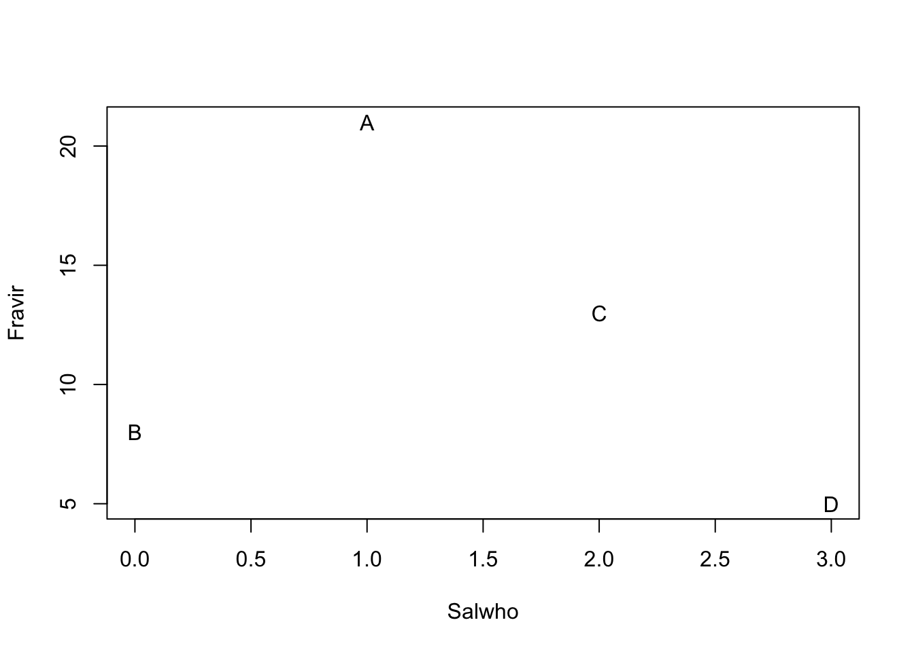
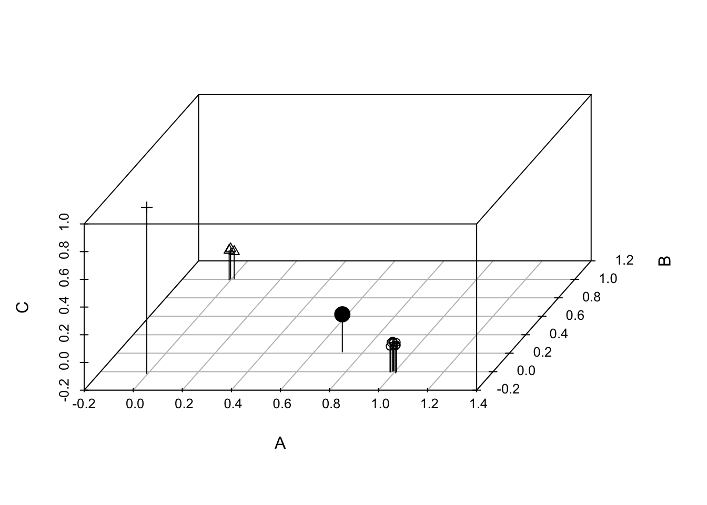
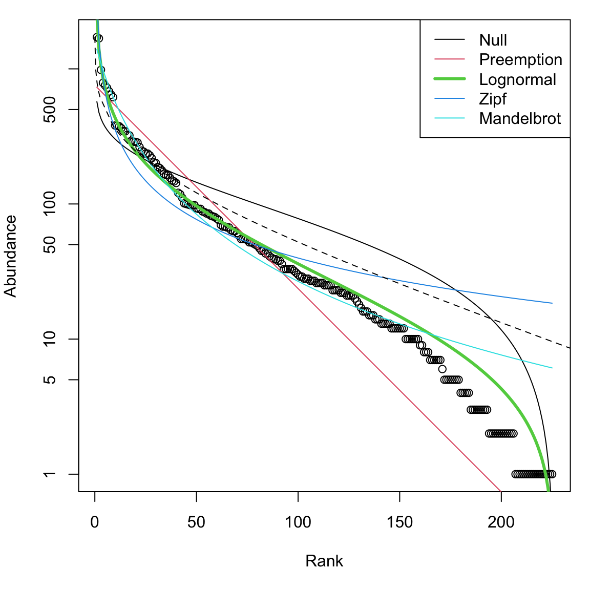
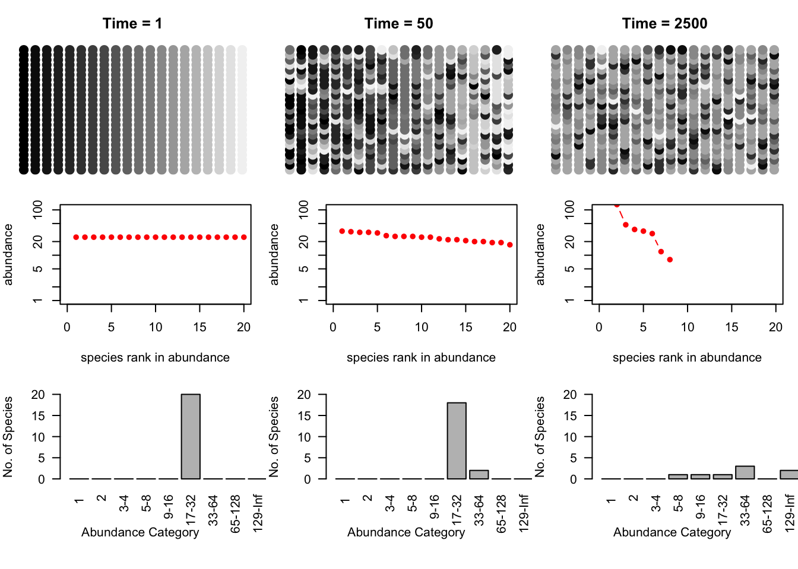
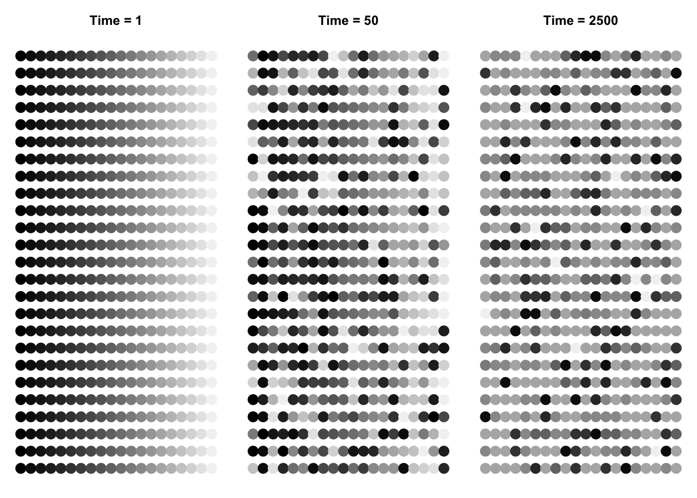
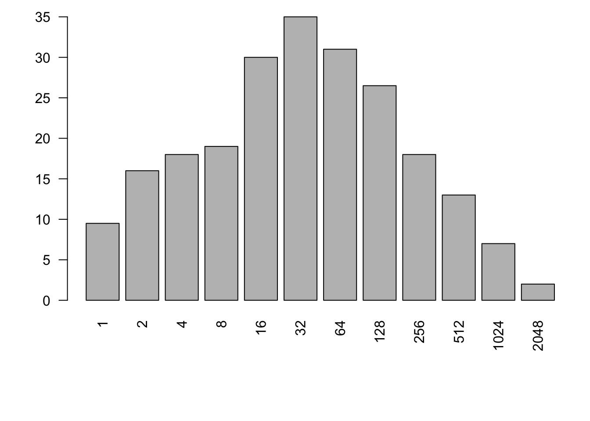

<!DOCTYPE html>
<html lang="" xml:lang="">
<head>

  <meta charset="utf-8" />
  <meta http-equiv="X-UA-Compatible" content="IE=edge" />
  <title>13 Diversity | Primer of Ecology using R</title>
  <meta name="description" content="13 Diversity | Primer of Ecology using R" />
  <meta name="generator" content="bookdown 0.23 and GitBook 2.6.7" />

  <meta property="og:title" content="13 Diversity | Primer of Ecology using R" />
  <meta property="og:type" content="book" />
  
  
  
  <meta name="github-repo" content="HankStevens/Primer-of-Ecology" />

  <meta name="twitter:card" content="summary" />
  <meta name="twitter:title" content="13 Diversity | Primer of Ecology using R" />
  
  
  

<meta name="author" content="Hank Stevens" />


<meta name="date" content="2021-08-20" />

  <meta name="viewport" content="width=device-width, initial-scale=1" />
  <meta name="apple-mobile-web-app-capable" content="yes" />
  <meta name="apple-mobile-web-app-status-bar-style" content="black" />
  
  
<link rel="prev" href="food-webs-and-other-networks.html"/>
<link rel="next" href="appendix.html"/>
<script src="libs/header-attrs-2.10/header-attrs.js"></script>
<script src="libs/jquery-3.6.0/jquery-3.6.0.min.js"></script>
<link href="libs/gitbook-2.6.7/css/style.css" rel="stylesheet" />
<link href="libs/gitbook-2.6.7/css/plugin-table.css" rel="stylesheet" />
<link href="libs/gitbook-2.6.7/css/plugin-bookdown.css" rel="stylesheet" />
<link href="libs/gitbook-2.6.7/css/plugin-highlight.css" rel="stylesheet" />
<link href="libs/gitbook-2.6.7/css/plugin-search.css" rel="stylesheet" />
<link href="libs/gitbook-2.6.7/css/plugin-fontsettings.css" rel="stylesheet" />
<link href="libs/gitbook-2.6.7/css/plugin-clipboard.css" rel="stylesheet" />


<link href="libs/anchor-sections-1.0.1/anchor-sections.css" rel="stylesheet" />
<script src="libs/anchor-sections-1.0.1/anchor-sections.js"></script>
<script src="libs/kePrint-0.0.1/kePrint.js"></script>
<link href="libs/lightable-0.0.1/lightable.css" rel="stylesheet" />
<!-- Global site tag (gtag.js) - Google Analytics -->
<script async src="https://www.googletagmanager.com/gtag/js?id=G-VCV8MES4YY"></script>
<script>
  window.dataLayer = window.dataLayer || [];
  function gtag(){dataLayer.push(arguments);}
  gtag('js', new Date());

  gtag('config', 'G-VCV8MES4YY');
</script>


<style type="text/css">
pre > code.sourceCode { white-space: pre; position: relative; }
pre > code.sourceCode > span { display: inline-block; line-height: 1.25; }
pre > code.sourceCode > span:empty { height: 1.2em; }
.sourceCode { overflow: visible; }
code.sourceCode > span { color: inherit; text-decoration: inherit; }
pre.sourceCode { margin: 0; }
@media screen {
div.sourceCode { overflow: auto; }
}
@media print {
pre > code.sourceCode { white-space: pre-wrap; }
pre > code.sourceCode > span { text-indent: -5em; padding-left: 5em; }
}
pre.numberSource code
  { counter-reset: source-line 0; }
pre.numberSource code > span
  { position: relative; left: -4em; counter-increment: source-line; }
pre.numberSource code > span > a:first-child::before
  { content: counter(source-line);
    position: relative; left: -1em; text-align: right; vertical-align: baseline;
    border: none; display: inline-block;
    -webkit-touch-callout: none; -webkit-user-select: none;
    -khtml-user-select: none; -moz-user-select: none;
    -ms-user-select: none; user-select: none;
    padding: 0 4px; width: 4em;
    color: #aaaaaa;
  }
pre.numberSource { margin-left: 3em; border-left: 1px solid #aaaaaa;  padding-left: 4px; }
div.sourceCode
  {   }
@media screen {
pre > code.sourceCode > span > a:first-child::before { text-decoration: underline; }
}
code span.al { color: #ff0000; font-weight: bold; } /* Alert */
code span.an { color: #60a0b0; font-weight: bold; font-style: italic; } /* Annotation */
code span.at { color: #7d9029; } /* Attribute */
code span.bn { color: #40a070; } /* BaseN */
code span.bu { } /* BuiltIn */
code span.cf { color: #007020; font-weight: bold; } /* ControlFlow */
code span.ch { color: #4070a0; } /* Char */
code span.cn { color: #880000; } /* Constant */
code span.co { color: #60a0b0; font-style: italic; } /* Comment */
code span.cv { color: #60a0b0; font-weight: bold; font-style: italic; } /* CommentVar */
code span.do { color: #ba2121; font-style: italic; } /* Documentation */
code span.dt { color: #902000; } /* DataType */
code span.dv { color: #40a070; } /* DecVal */
code span.er { color: #ff0000; font-weight: bold; } /* Error */
code span.ex { } /* Extension */
code span.fl { color: #40a070; } /* Float */
code span.fu { color: #06287e; } /* Function */
code span.im { } /* Import */
code span.in { color: #60a0b0; font-weight: bold; font-style: italic; } /* Information */
code span.kw { color: #007020; font-weight: bold; } /* Keyword */
code span.op { color: #666666; } /* Operator */
code span.ot { color: #007020; } /* Other */
code span.pp { color: #bc7a00; } /* Preprocessor */
code span.sc { color: #4070a0; } /* SpecialChar */
code span.ss { color: #bb6688; } /* SpecialString */
code span.st { color: #4070a0; } /* String */
code span.va { color: #19177c; } /* Variable */
code span.vs { color: #4070a0; } /* VerbatimString */
code span.wa { color: #60a0b0; font-weight: bold; font-style: italic; } /* Warning */
</style>

<style type="text/css">
/* Used with Pandoc 2.11+ new --citeproc when CSL is used */
div.csl-bib-body { }
div.csl-entry {
  clear: both;
}
.hanging div.csl-entry {
  margin-left:2em;
  text-indent:-2em;
}
div.csl-left-margin {
  min-width:2em;
  float:left;
}
div.csl-right-inline {
  margin-left:2em;
  padding-left:1em;
}
div.csl-indent {
  margin-left: 2em;
}
</style>

</head>

<body>


  <div class="book without-animation with-summary font-size-2 font-family-1" data-basepath=".">

    <div class="book-summary">
      <nav role="navigation">

<ul class="summary">
<li class="chapter" data-level="" data-path="index.html"><a href="index.html"><i class="fa fa-check"></i>Preface</a></li>
<li class="chapter" data-level="1" data-path="theory.html"><a href="theory.html"><i class="fa fa-check"></i><b>1</b> Theory in Ecology</a>
<ul>
<li class="chapter" data-level="1.1" data-path="theory.html"><a href="theory.html#examples-of-theories"><i class="fa fa-check"></i><b>1.1</b> Examples of theories</a>
<ul>
<li class="chapter" data-level="1.1.1" data-path="theory.html"><a href="theory.html#hierarchy-theory"><i class="fa fa-check"></i><b>1.1.1</b> Hierarchy theory</a></li>
<li class="chapter" data-level="1.1.2" data-path="theory.html"><a href="theory.html#a-general-theory-of-ecology"><i class="fa fa-check"></i><b>1.1.2</b> A general theory of ecology</a></li>
<li class="chapter" data-level="1.1.3" data-path="theory.html"><a href="theory.html#efficient-theory"><i class="fa fa-check"></i><b>1.1.3</b> Efficient theory</a></li>
</ul></li>
<li class="chapter" data-level="1.2" data-path="theory.html"><a href="theory.html#metabolic_scaling"><i class="fa fa-check"></i><b>1.2</b> An example: Metabolic Theory of Ecology</a>
<ul>
<li class="chapter" data-level="1.2.1" data-path="theory.html"><a href="theory.html#body-size-dependence"><i class="fa fa-check"></i><b>1.2.1</b> Body-size dependence</a></li>
<li class="chapter" data-level="1.2.2" data-path="theory.html"><a href="theory.html#temperature-dependence"><i class="fa fa-check"></i><b>1.2.2</b> Temperature dependence</a></li>
</ul></li>
<li class="chapter" data-level="1.3" data-path="theory.html"><a href="theory.html#power-law-scaling-implies-constant-relative-differences"><i class="fa fa-check"></i><b>1.3</b> Power law scaling implies constant relative differences</a></li>
<li class="chapter" data-level="1.4" data-path="theory.html"><a href="theory.html#meet-mete-maximum-entropy-theory-of-ecology"><i class="fa fa-check"></i><b>1.4</b> Meet METE: Maximum Entropy Theory of Ecology</a></li>
<li class="chapter" data-level="1.5" data-path="theory.html"><a href="theory.html#in-fine"><i class="fa fa-check"></i><b>1.5</b> <em>In fine</em></a></li>
</ul></li>
<li class="chapter" data-level="2" data-path="oft.html"><a href="oft.html"><i class="fa fa-check"></i><b>2</b> Optimal Foraging</a>
<ul>
<li class="chapter" data-level="2.1" data-path="oft.html"><a href="oft.html#a-prey-model"><i class="fa fa-check"></i><b>2.1</b> A prey model</a>
<ul>
<li class="chapter" data-level="2.1.1" data-path="oft.html"><a href="oft.html#our-intuition"><i class="fa fa-check"></i><b>2.1.1</b> Our intuition</a></li>
<li class="chapter" data-level="2.1.2" data-path="oft.html"><a href="oft.html#mathematical-support"><i class="fa fa-check"></i><b>2.1.2</b> Mathematical support</a></li>
</ul></li>
<li class="chapter" data-level="2.2" data-path="oft.html"><a href="oft.html#the-patch-model"><i class="fa fa-check"></i><b>2.2</b> The patch model</a></li>
<li class="chapter" data-level="2.3" data-path="oft.html"><a href="oft.html#a-simulation-of-a-prey-model"><i class="fa fa-check"></i><b>2.3</b> A simulation of a prey model</a>
<ul>
<li class="chapter" data-level="2.3.1" data-path="oft.html"><a href="oft.html#lab-exercise"><i class="fa fa-check"></i><b>2.3.1</b> Lab exercise</a></li>
</ul></li>
</ul></li>
<li class="chapter" data-level="3" data-path="expo.html"><a href="expo.html"><i class="fa fa-check"></i><b>3</b> Simple density-independent growth</a>
<ul>
<li class="chapter" data-level="3.1" data-path="expo.html"><a href="expo.html#discrete-growth-rates-of-fruit-flies-in-my-kitchen"><i class="fa fa-check"></i><b>3.1</b> Discrete growth rates of fruit flies in my kitchen</a></li>
<li class="chapter" data-level="3.2" data-path="expo.html"><a href="expo.html#fruit-flies-with-continuous-overlapping-generations"><i class="fa fa-check"></i><b>3.2</b> Fruit flies with continuous overlapping generations</a></li>
<li class="chapter" data-level="3.3" data-path="expo.html"><a href="expo.html#properties-of-geometric-and-exponential-growth"><i class="fa fa-check"></i><b>3.3</b> Properties of geometric and exponential growth</a>
<ul>
<li class="chapter" data-level="3.3.1" data-path="expo.html"><a href="expo.html#average-growth-rate"><i class="fa fa-check"></i><b>3.3.1</b> Average growth rate</a></li>
</ul></li>
<li class="chapter" data-level="3.4" data-path="expo.html"><a href="expo.html#modeling-with-data-simulated-dynamics"><i class="fa fa-check"></i><b>3.4</b> Modeling with Data: Simulated Dynamics</a>
<ul>
<li class="chapter" data-level="3.4.1" data-path="expo.html"><a href="expo.html#data-based-approaches"><i class="fa fa-check"></i><b>3.4.1</b> Data-based approaches</a></li>
<li class="chapter" data-level="3.4.2" data-path="expo.html"><a href="expo.html#creating-and-visualizing-the-data"><i class="fa fa-check"></i><b>3.4.2</b> Creating and visualizing the data</a></li>
<li class="chapter" data-level="3.4.3" data-path="expo.html"><a href="expo.html#one-simulation"><i class="fa fa-check"></i><b>3.4.3</b> One simulation</a></li>
<li class="chapter" data-level="3.4.4" data-path="expo.html"><a href="expo.html#multiple-simulations"><i class="fa fa-check"></i><b>3.4.4</b> Multiple simulations</a></li>
<li class="chapter" data-level="3.4.5" data-path="expo.html"><a href="expo.html#a-distribution-of-possible-futures"><i class="fa fa-check"></i><b>3.4.5</b> A distribution of possible futures</a></li>
<li class="chapter" data-level="3.4.6" data-path="expo.html"><a href="expo.html#analyzing-results"><i class="fa fa-check"></i><b>3.4.6</b> Analyzing results</a></li>
<li class="chapter" data-level="3.4.7" data-path="expo.html"><a href="expo.html#inferring-processes-underlying-growth-rate"><i class="fa fa-check"></i><b>3.4.7</b> Inferring processes underlying growth rate</a></li>
<li class="chapter" data-level="3.4.8" data-path="expo.html"><a href="expo.html#f-environmental-noise"><i class="fa fa-check"></i><b>3.4.8</b> 1/<span class="math inline">\(f\)</span> environmental noise</a></li>
</ul></li>
</ul></li>
<li class="chapter" data-level="4" data-path="DID.html"><a href="DID.html"><i class="fa fa-check"></i><b>4</b> Density-independent Demography</a>
<ul>
<li class="chapter" data-level="4.1" data-path="DID.html"><a href="DID.html#a-two-stage-matrix-model"><i class="fa fa-check"></i><b>4.1</b> A two stage matrix model</a></li>
<li class="chapter" data-level="4.2" data-path="DID.html"><a href="DID.html#a-brief-primer-on-matrices"><i class="fa fa-check"></i><b>4.2</b> A brief primer on matrices</a></li>
<li class="chapter" data-level="4.3" data-path="DID.html"><a href="DID.html#decomposing-a"><i class="fa fa-check"></i><b>4.3</b> Decomposing <strong>A</strong></a></li>
<li class="chapter" data-level="4.4" data-path="DID.html"><a href="DID.html#a-three-stage-model"><i class="fa fa-check"></i><b>4.4</b> A three stage model</a></li>
<li class="chapter" data-level="4.5" data-path="DID.html"><a href="DID.html#projection"><i class="fa fa-check"></i><b>4.5</b> Projection</a></li>
<li class="chapter" data-level="4.6" data-path="DID.html"><a href="DID.html#analyzing-the-transition-matrix"><i class="fa fa-check"></i><b>4.6</b> Analyzing the transition matrix</a>
<ul>
<li class="chapter" data-level="4.6.1" data-path="DID.html"><a href="DID.html#eigenanalysis"><i class="fa fa-check"></i><b>4.6.1</b> Eigenanalysis</a></li>
<li class="chapter" data-level="4.6.2" data-path="DID.html"><a href="DID.html#finite-rate-of-increase"><i class="fa fa-check"></i><b>4.6.2</b> Finite rate of increase</a></li>
<li class="chapter" data-level="4.6.3" data-path="DID.html"><a href="DID.html#stable-stage-distribution"><i class="fa fa-check"></i><b>4.6.3</b> Stable stage distribution</a></li>
<li class="chapter" data-level="4.6.4" data-path="DID.html"><a href="DID.html#calculating-the-stable-stage-distribution"><i class="fa fa-check"></i><b>4.6.4</b> Calculating the stable stage distribution</a></li>
<li class="chapter" data-level="4.6.5" data-path="DID.html"><a href="DID.html#reproductive-value"><i class="fa fa-check"></i><b>4.6.5</b> Reproductive value</a></li>
<li class="chapter" data-level="4.6.6" data-path="DID.html"><a href="DID.html#sensitivity-and-elasticity"><i class="fa fa-check"></i><b>4.6.6</b> Sensitivity and elasticity</a></li>
</ul></li>
<li class="chapter" data-level="4.7" data-path="DID.html"><a href="DID.html#integral-projection"><i class="fa fa-check"></i><b>4.7</b> Integral projection</a>
<ul>
<li class="chapter" data-level="4.7.1" data-path="DID.html"><a href="DID.html#a-size-based-ipm-of-smooth-coneflower"><i class="fa fa-check"></i><b>4.7.1</b> A size-based IPM of smooth coneflower</a></li>
<li class="chapter" data-level="4.7.2" data-path="DID.html"><a href="DID.html#population-summaries"><i class="fa fa-check"></i><b>4.7.2</b> Population summaries</a></li>
</ul></li>
<li class="chapter" data-level="4.8" data-path="DID.html"><a href="DID.html#r-packges-for-demography"><i class="fa fa-check"></i><b>4.8</b> R packges for demography</a></li>
<li class="chapter" data-level="4.9" data-path="DID.html"><a href="DID.html#exploring-a-real-population"><i class="fa fa-check"></i><b>4.9</b> Exploring a real population</a></li>
</ul></li>
<li class="chapter" data-level="5" data-path="DDgrowth.html"><a href="DDgrowth.html"><i class="fa fa-check"></i><b>5</b> Density-dependent growth</a>
<ul>
<li class="chapter" data-level="5.1" data-path="DDgrowth.html"><a href="DDgrowth.html#continuous-logistic-growth"><i class="fa fa-check"></i><b>5.1</b> Continuous logistic growth</a></li>
<li class="chapter" data-level="5.2" data-path="DDgrowth.html"><a href="DDgrowth.html#dynamics-around-the-equilibria-stability"><i class="fa fa-check"></i><b>5.2</b> Dynamics around the equilibria — stability</a>
<ul>
<li class="chapter" data-level="5.2.1" data-path="DDgrowth.html"><a href="DDgrowth.html#analytical-linear-stability-analysis"><i class="fa fa-check"></i><b>5.2.1</b> Analytical linear stability analysis</a></li>
<li class="chapter" data-level="5.2.2" data-path="DDgrowth.html"><a href="DDgrowth.html#projection-with-numerical-integration"><i class="fa fa-check"></i><b>5.2.2</b> Projection with numerical integration</a></li>
</ul></li>
<li class="chapter" data-level="5.3" data-path="DDgrowth.html"><a href="DDgrowth.html#other-forms-of-density-dependent-growth"><i class="fa fa-check"></i><b>5.3</b> Other forms of density-dependent growth</a>
<ul>
<li class="chapter" data-level="5.3.1" data-path="DDgrowth.html"><a href="DDgrowth.html#effects-of-n-on-birth-and-death-rates"><i class="fa fa-check"></i><b>5.3.1</b> Effects of N on birth and death rates</a></li>
<li class="chapter" data-level="5.3.2" data-path="DDgrowth.html"><a href="DDgrowth.html#theta-logistic-growth"><i class="fa fa-check"></i><b>5.3.2</b> Theta-logistic growth</a></li>
<li class="chapter" data-level="5.3.3" data-path="DDgrowth.html"><a href="DDgrowth.html#allee-effect"><i class="fa fa-check"></i><b>5.3.3</b> Allee effect</a></li>
<li class="chapter" data-level="5.3.4" data-path="DDgrowth.html"><a href="DDgrowth.html#the-integral-of-logistic-growth"><i class="fa fa-check"></i><b>5.3.4</b> The integral of logistic growth</a></li>
</ul></li>
<li class="chapter" data-level="5.4" data-path="DDgrowth.html"><a href="DDgrowth.html#discrete-density-dependent-growth"><i class="fa fa-check"></i><b>5.4</b> Discrete Density-dependent Growth</a>
<ul>
<li class="chapter" data-level="5.4.1" data-path="DDgrowth.html"><a href="DDgrowth.html#effects-of-r_d"><i class="fa fa-check"></i><b>5.4.1</b> Effects of <span class="math inline">\(r_d\)</span></a></li>
<li class="chapter" data-level="5.4.2" data-path="DDgrowth.html"><a href="DDgrowth.html#bifurcations"><i class="fa fa-check"></i><b>5.4.2</b> Bifurcations</a></li>
</ul></li>
<li class="chapter" data-level="5.5" data-path="DDgrowth.html"><a href="DDgrowth.html#maximum-sustained-yield"><i class="fa fa-check"></i><b>5.5</b> Maximum Sustained Yield</a></li>
</ul></li>
<li class="chapter" data-level="6" data-path="meta.html"><a href="meta.html"><i class="fa fa-check"></i><b>6</b> Populations in Space</a>
<ul>
<li class="chapter" data-level="6.1" data-path="meta.html"><a href="meta.html#source-sink-dynamics"><i class="fa fa-check"></i><b>6.1</b> Source-sink Dynamics</a>
<ul>
<li class="chapter" data-level="6.1.1" data-path="meta.html"><a href="meta.html#complications-and-cases"><i class="fa fa-check"></i><b>6.1.1</b> Complications and cases</a></li>
</ul></li>
<li class="chapter" data-level="6.2" data-path="meta.html"><a href="meta.html#metapopulations"><i class="fa fa-check"></i><b>6.2</b> Metapopulations</a>
<ul>
<li class="chapter" data-level="6.2.1" data-path="meta.html"><a href="meta.html#the-classic-levins-model"><i class="fa fa-check"></i><b>6.2.1</b> The classic Levins model</a></li>
<li class="chapter" data-level="6.2.2" data-path="meta.html"><a href="meta.html#propagule-rain"><i class="fa fa-check"></i><b>6.2.2</b> Propagule rain</a></li>
<li class="chapter" data-level="6.2.3" data-path="meta.html"><a href="meta.html#the-rescue-effect-and-the-core-satellite-model"><i class="fa fa-check"></i><b>6.2.3</b> The rescue effect and the core-satellite model</a></li>
<li class="chapter" data-level="6.2.4" data-path="meta.html"><a href="meta.html#parallels-with-logistic-growth"><i class="fa fa-check"></i><b>6.2.4</b> Parallels with Logistic Growth</a></li>
<li class="chapter" data-level="6.2.5" data-path="meta.html"><a href="meta.html#levins-vs.-hanski"><i class="fa fa-check"></i><b>6.2.5</b> Levins <span class="math inline">\(vs\)</span>. Hanski</a></li>
<li class="chapter" data-level="6.2.6" data-path="meta.html"><a href="meta.html#habitat-destruction"><i class="fa fa-check"></i><b>6.2.6</b> Habitat Destruction</a></li>
<li class="chapter" data-level="6.2.7" data-path="meta.html"><a href="meta.html#illustrating-the-effects-of-habitat-destruction"><i class="fa fa-check"></i><b>6.2.7</b> Illustrating the effects of habitat destruction</a></li>
<li class="chapter" data-level="6.2.8" data-path="meta.html"><a href="meta.html#different-assumptions-lead-to-different-predictions-about-rates-of-extinction"><i class="fa fa-check"></i><b>6.2.8</b> Different assumptions lead to different predictions about rates of extinction</a></li>
</ul></li>
<li class="chapter" data-level="6.3" data-path="meta.html"><a href="meta.html#hanskis-incidence-function"><i class="fa fa-check"></i><b>6.3</b> Hanski’s incidence function</a></li>
</ul></li>
<li class="chapter" data-level="7" data-path="direct-competition-and-mutualism.html"><a href="direct-competition-and-mutualism.html"><i class="fa fa-check"></i><b>7</b> Direct competition and mutualism</a>
<ul>
<li class="chapter" data-level="7.1" data-path="direct-competition-and-mutualism.html"><a href="direct-competition-and-mutualism.html#interspecific-competition"><i class="fa fa-check"></i><b>7.1</b> Interspecific competition</a>
<ul>
<li class="chapter" data-level="7.1.1" data-path="direct-competition-and-mutualism.html"><a href="direct-competition-and-mutualism.html#equilbria"><i class="fa fa-check"></i><b>7.1.1</b> Equilbria</a></li>
<li class="chapter" data-level="7.1.2" data-path="direct-competition-and-mutualism.html"><a href="direct-competition-and-mutualism.html#dynamics-at-the-equilibria"><i class="fa fa-check"></i><b>7.1.2</b> Dynamics at the Equilibria</a></li>
<li class="chapter" data-level="7.1.3" data-path="direct-competition-and-mutualism.html"><a href="direct-competition-and-mutualism.html#return-time-and-the-effect-of-r"><i class="fa fa-check"></i><b>7.1.3</b> Return Time and the Effect of <span class="math inline">\(r\)</span></a></li>
</ul></li>
<li class="chapter" data-level="7.2" data-path="direct-competition-and-mutualism.html"><a href="direct-competition-and-mutualism.html#interspecific-mutualism"><i class="fa fa-check"></i><b>7.2</b> Interspecific mutualism</a></li>
<li class="chapter" data-level="7.3" data-path="direct-competition-and-mutualism.html"><a href="direct-competition-and-mutualism.html#generalized-lotka-volterra-models"><i class="fa fa-check"></i><b>7.3</b> Generalized Lotka-Volterra models</a></li>
<li class="chapter" data-level="7.4" data-path="direct-competition-and-mutualism.html"><a href="direct-competition-and-mutualism.html#summary"><i class="fa fa-check"></i><b>7.4</b> Summary</a></li>
</ul></li>
<li class="chapter" data-level="8" data-path="cr.html"><a href="cr.html"><i class="fa fa-check"></i><b>8</b> Consumer-resource Interactions</a>
<ul>
<li class="chapter" data-level="8.1" data-path="cr.html"><a href="cr.html#ratio-dependence"><i class="fa fa-check"></i><b>8.1</b> Ratio dependence</a>
<ul>
<li class="chapter" data-level="8.1.1" data-path="cr.html"><a href="cr.html#dynamics-of-ratio-dependent-predation"><i class="fa fa-check"></i><b>8.1.1</b> Dynamics of ratio dependent predation</a></li>
</ul></li>
<li class="chapter" data-level="8.2" data-path="cr.html"><a href="cr.html#prey-dependence"><i class="fa fa-check"></i><b>8.2</b> Prey dependence</a>
<ul>
<li class="chapter" data-level="8.2.1" data-path="cr.html"><a href="cr.html#dyanmics-of-prey-dependent-predation"><i class="fa fa-check"></i><b>8.2.1</b> Dyanmics of prey-dependent predation</a></li>
</ul></li>
<li class="chapter" data-level="8.3" data-path="cr.html"><a href="cr.html#interlude-functional-response---what-an-individual-predator-does-fr"><i class="fa fa-check"></i><b>8.3</b> Interlude: Functional response - what an individual predator does (#fr)</a></li>
<li class="chapter" data-level="8.4" data-path="cr.html"><a href="cr.html#stability-analysis-for-the-prey-dependent-lotkavolterra-model"><i class="fa fa-check"></i><b>8.4</b> Stability analysis for the prey-dependent Lotka–Volterra model</a></li>
<li class="chapter" data-level="8.5" data-path="cr.html"><a href="cr.html#resource-growth-functions"><i class="fa fa-check"></i><b>8.5</b> Resource growth functions</a>
<ul>
<li class="chapter" data-level="8.5.1" data-path="cr.html"><a href="cr.html#consumption-of-a-renewable-resource"><i class="fa fa-check"></i><b>8.5.1</b> Consumption of a renewable resource</a></li>
<li class="chapter" data-level="8.5.2" data-path="cr.html"><a href="cr.html#prey-carrying-capacity-and-type-ii-functional-response"><i class="fa fa-check"></i><b>8.5.2</b> Prey carrying capacity and type II functional response</a></li>
</ul></li>
<li class="chapter" data-level="8.6" data-path="cr.html"><a href="cr.html#paradox-of-enrichment"><i class="fa fa-check"></i><b>8.6</b> Paradox of enrichment</a></li>
<li class="chapter" data-level="8.7" data-path="cr.html"><a href="cr.html#consumption-of-two-resources"><i class="fa fa-check"></i><b>8.7</b> Consumption of two resources</a>
<ul>
<li class="chapter" data-level="8.7.1" data-path="cr.html"><a href="cr.html#interpreting-consumption-and-assimilation"><i class="fa fa-check"></i><b>8.7.1</b> Interpreting consumption and assimilation</a></li>
</ul></li>
<li class="chapter" data-level="8.8" data-path="cr.html"><a href="cr.html#in-fine-1"><i class="fa fa-check"></i><b>8.8</b> In fine</a></li>
</ul></li>
<li class="chapter" data-level="9" data-path="host-parasitoid-relations.html"><a href="host-parasitoid-relations.html"><i class="fa fa-check"></i><b>9</b> Host-parasitoid relations</a>
<ul>
<li class="chapter" data-level="9.1" data-path="host-parasitoid-relations.html"><a href="host-parasitoid-relations.html#independent-and-random-attacks"><i class="fa fa-check"></i><b>9.1</b> Independent and random attacks</a>
<ul>
<li class="chapter" data-level="9.1.1" data-path="host-parasitoid-relations.html"><a href="host-parasitoid-relations.html#simulating-simple-host-parasitoid-dynamics"><i class="fa fa-check"></i><b>9.1.1</b> Simulating simple host-parasitoid dynamics</a></li>
</ul></li>
<li class="chapter" data-level="9.2" data-path="host-parasitoid-relations.html"><a href="host-parasitoid-relations.html#aggregation-leads-to-coexistence"><i class="fa fa-check"></i><b>9.2</b> Aggregation leads to coexistence</a>
<ul>
<li class="chapter" data-level="9.2.1" data-path="host-parasitoid-relations.html"><a href="host-parasitoid-relations.html#equilibria-for-a-discrete-time-model"><i class="fa fa-check"></i><b>9.2.1</b> Equilibria for a discrete-time model</a></li>
</ul></li>
<li class="chapter" data-level="9.3" data-path="host-parasitoid-relations.html"><a href="host-parasitoid-relations.html#stability-of-hostparasitoid-dynamics"><i class="fa fa-check"></i><b>9.3</b> Stability of host–parasitoid dynamics</a></li>
<li class="chapter" data-level="9.4" data-path="host-parasitoid-relations.html"><a href="host-parasitoid-relations.html#in-fine-2"><i class="fa fa-check"></i><b>9.4</b> <em>In Fine</em></a></li>
</ul></li>
<li class="chapter" data-level="10" data-path="disease.html"><a href="disease.html"><i class="fa fa-check"></i><b>10</b> Disease</a>
<ul>
<li class="chapter" data-level="10.1" data-path="disease.html"><a href="disease.html#closed-epidemics"><i class="fa fa-check"></i><b>10.1</b> Closed epidemics</a>
<ul>
<li class="chapter" data-level="10.1.1" data-path="disease.html"><a href="disease.html#density-dependent-transmission"><i class="fa fa-check"></i><b>10.1.1</b> Density-dependent transmission</a></li>
<li class="chapter" data-level="10.1.2" data-path="disease.html"><a href="disease.html#frequency-dependent-transmission"><i class="fa fa-check"></i><b>10.1.2</b> Frequency-dependent transmission</a></li>
</ul></li>
<li class="chapter" data-level="10.2" data-path="disease.html"><a href="disease.html#open-epidemics"><i class="fa fa-check"></i><b>10.2</b> Open epidemics</a></li>
<li class="chapter" data-level="10.3" data-path="disease.html"><a href="disease.html#modeling-data-from-bombay"><i class="fa fa-check"></i><b>10.3</b> Modeling data from Bombay</a>
<ul>
<li class="chapter" data-level="10.3.1" data-path="disease.html"><a href="disease.html#optimization"><i class="fa fa-check"></i><b>10.3.1</b> Optimization</a></li>
</ul></li>
</ul></li>
<li class="chapter" data-level="11" data-path="consumer-resource-competition-and-mutualisms.html"><a href="consumer-resource-competition-and-mutualisms.html"><i class="fa fa-check"></i><b>11</b> Consumer-resource Competition and Mutualisms</a>
<ul>
<li class="chapter" data-level="11.1" data-path="consumer-resource-competition-and-mutualisms.html"><a href="consumer-resource-competition-and-mutualisms.html#competition-for-one-resource"><i class="fa fa-check"></i><b>11.1</b> Competition for one resource</a></li>
<li class="chapter" data-level="11.2" data-path="consumer-resource-competition-and-mutualisms.html"><a href="consumer-resource-competition-and-mutualisms.html#competition-for-substitutable-resources"><i class="fa fa-check"></i><b>11.2</b> Competition for Substitutable resources</a></li>
<li class="chapter" data-level="11.3" data-path="consumer-resource-competition-and-mutualisms.html"><a href="consumer-resource-competition-and-mutualisms.html#tilmans-resource-ratio-with-essential-resources"><i class="fa fa-check"></i><b>11.3</b> Tilman’s resource ratio with essential resources</a></li>
<li class="chapter" data-level="11.4" data-path="consumer-resource-competition-and-mutualisms.html"><a href="consumer-resource-competition-and-mutualisms.html#consumer-resource-mutualism"><i class="fa fa-check"></i><b>11.4</b> Consumer-resource mutualism</a>
<ul>
<li class="chapter" data-level="11.4.1" data-path="consumer-resource-competition-and-mutualisms.html"><a href="consumer-resource-competition-and-mutualisms.html#a-model-of-uni-directional-mutualism"><i class="fa fa-check"></i><b>11.4.1</b> A model of uni-directional mutualism</a></li>
</ul></li>
<li class="chapter" data-level="11.5" data-path="consumer-resource-competition-and-mutualisms.html"><a href="consumer-resource-competition-and-mutualisms.html#plant-soil-feedbacks"><i class="fa fa-check"></i><b>11.5</b> Plant-soil feedbacks</a></li>
<li class="chapter" data-level="11.6" data-path="consumer-resource-competition-and-mutualisms.html"><a href="consumer-resource-competition-and-mutualisms.html#simulations-for-learning"><i class="fa fa-check"></i><b>11.6</b> Simulations for learning</a>
<ul>
<li class="chapter" data-level="11.6.1" data-path="consumer-resource-competition-and-mutualisms.html"><a href="consumer-resource-competition-and-mutualisms.html#lvg"><i class="fa fa-check"></i><b>11.6.1</b> <code>lvg()</code></a></li>
<li class="chapter" data-level="11.6.2" data-path="consumer-resource-competition-and-mutualisms.html"><a href="consumer-resource-competition-and-mutualisms.html#systematic-simulations"><i class="fa fa-check"></i><b>11.6.2</b> Systematic simulations</a></li>
<li class="chapter" data-level="11.6.3" data-path="consumer-resource-competition-and-mutualisms.html"><a href="consumer-resource-competition-and-mutualisms.html#checking-simulation-results"><i class="fa fa-check"></i><b>11.6.3</b> Checking simulation results</a></li>
<li class="chapter" data-level="11.6.4" data-path="consumer-resource-competition-and-mutualisms.html"><a href="consumer-resource-competition-and-mutualisms.html#comparing-simulation-results-to-analytical-solutions"><i class="fa fa-check"></i><b>11.6.4</b> Comparing simulation results to analytical solutions</a></li>
<li class="chapter" data-level="11.6.5" data-path="consumer-resource-competition-and-mutualisms.html"><a href="consumer-resource-competition-and-mutualisms.html#one-last-thing-using-the-jacobian-matrix"><i class="fa fa-check"></i><b>11.6.5</b> One last thing: using the Jacobian matrix</a></li>
<li class="chapter" data-level="11.6.6" data-path="consumer-resource-competition-and-mutualisms.html"><a href="consumer-resource-competition-and-mutualisms.html#in-fine-3"><i class="fa fa-check"></i><b>11.6.6</b> <em>In Fine</em></a></li>
</ul></li>
</ul></li>
<li class="chapter" data-level="12" data-path="food-webs-and-other-networks.html"><a href="food-webs-and-other-networks.html"><i class="fa fa-check"></i><b>12</b> Food webs and other networks</a>
<ul>
<li class="chapter" data-level="12.1" data-path="food-webs-and-other-networks.html"><a href="food-webs-and-other-networks.html#food-web-characteristics"><i class="fa fa-check"></i><b>12.1</b> Food Web Characteristics</a></li>
<li class="chapter" data-level="12.2" data-path="food-webs-and-other-networks.html"><a href="food-webs-and-other-networks.html#does-omnivory-destablize-food-chains"><i class="fa fa-check"></i><b>12.2</b> Does omnivory destablize food chains?</a>
<ul>
<li class="chapter" data-level="12.2.1" data-path="food-webs-and-other-networks.html"><a href="food-webs-and-other-networks.html#multi-species-lotkavolterra-notation"><i class="fa fa-check"></i><b>12.2.1</b> Multi-species Lotka–Volterra notation</a></li>
<li class="chapter" data-level="12.2.2" data-path="food-webs-and-other-networks.html"><a href="food-webs-and-other-networks.html#background"><i class="fa fa-check"></i><b>12.2.2</b> Background</a></li>
<li class="chapter" data-level="12.2.3" data-path="food-webs-and-other-networks.html"><a href="food-webs-and-other-networks.html#implementing-pimm-and-lawtons-methods"><i class="fa fa-check"></i><b>12.2.3</b> Implementing Pimm and Lawton’s Methods</a></li>
<li class="chapter" data-level="12.2.4" data-path="food-webs-and-other-networks.html"><a href="food-webs-and-other-networks.html#shortening-the-chain"><i class="fa fa-check"></i><b>12.2.4</b> Shortening the Chain</a></li>
<li class="chapter" data-level="12.2.5" data-path="food-webs-and-other-networks.html"><a href="food-webs-and-other-networks.html#adding-omnivory"><i class="fa fa-check"></i><b>12.2.5</b> Adding Omnivory</a></li>
<li class="chapter" data-level="12.2.6" data-path="food-webs-and-other-networks.html"><a href="food-webs-and-other-networks.html#comparing-chain-a-versus-b"><i class="fa fa-check"></i><b>12.2.6</b> Comparing Chain A versus B</a></li>
<li class="chapter" data-level="12.2.7" data-path="food-webs-and-other-networks.html"><a href="food-webs-and-other-networks.html#re-evaluating-take-home-messages"><i class="fa fa-check"></i><b>12.2.7</b> Re-evaluating Take-Home Messages</a></li>
</ul></li>
<li class="chapter" data-level="12.3" data-path="food-webs-and-other-networks.html"><a href="food-webs-and-other-networks.html#perhaps-mutualism-stabilizes-bipartite-networks"><i class="fa fa-check"></i><b>12.3</b> Perhaps mutualism stabilizes bipartite networks</a>
<ul>
<li class="chapter" data-level="12.3.1" data-path="food-webs-and-other-networks.html"><a href="food-webs-and-other-networks.html#creating-bipartite-webs"><i class="fa fa-check"></i><b>12.3.1</b> Creating bipartite webs</a></li>
<li class="chapter" data-level="12.3.2" data-path="food-webs-and-other-networks.html"><a href="food-webs-and-other-networks.html#testing-effects-of-nestedness-and-modularity-on-network-resilience."><i class="fa fa-check"></i><b>12.3.2</b> Testing effects of nestedness and modularity on network resilience.</a></li>
<li class="chapter" data-level="12.3.3" data-path="food-webs-and-other-networks.html"><a href="food-webs-and-other-networks.html#path-analysis"><i class="fa fa-check"></i><b>12.3.3</b> Path Analysis</a></li>
</ul></li>
<li class="chapter" data-level="12.4" data-path="food-webs-and-other-networks.html"><a href="food-webs-and-other-networks.html#exploring-pandora-right-here-at-home"><i class="fa fa-check"></i><b>12.4</b> Exploring Pandora, right here at home</a>
<ul>
<li class="chapter" data-level="12.4.1" data-path="food-webs-and-other-networks.html"><a href="food-webs-and-other-networks.html#properties-assessed"><i class="fa fa-check"></i><b>12.4.1</b> Properties assessed</a></li>
</ul></li>
</ul></li>
<li class="chapter" data-level="13" data-path="diversity.html"><a href="diversity.html"><i class="fa fa-check"></i><b>13</b> Diversity</a>
<ul>
<li class="chapter" data-level="13.1" data-path="diversity.html"><a href="diversity.html#background-1"><i class="fa fa-check"></i><b>13.1</b> Background</a></li>
<li class="chapter" data-level="13.2" data-path="diversity.html"><a href="diversity.html#species-composition"><i class="fa fa-check"></i><b>13.2</b> Species Composition</a>
<ul>
<li class="chapter" data-level="13.2.1" data-path="diversity.html"><a href="diversity.html#measures-of-abundance"><i class="fa fa-check"></i><b>13.2.1</b> Measures of abundance</a></li>
<li class="chapter" data-level="13.2.2" data-path="diversity.html"><a href="diversity.html#dissimilarities-and-distances"><i class="fa fa-check"></i><b>13.2.2</b> Dissimilarities and Distances</a></li>
<li class="chapter" data-level="13.2.3" data-path="diversity.html"><a href="diversity.html#displaying-multidimensional-distances"><i class="fa fa-check"></i><b>13.2.3</b> Displaying multidimensional distances</a></li>
</ul></li>
<li class="chapter" data-level="13.3" data-path="diversity.html"><a href="diversity.html#diversity-1"><i class="fa fa-check"></i><b>13.3</b> Diversity</a></li>
<li class="chapter" data-level="13.4" data-path="diversity.html"><a href="diversity.html#species-diversity"><i class="fa fa-check"></i><b>13.4</b> Species diversity</a></li>
<li class="chapter" data-level="13.5" data-path="diversity.html"><a href="diversity.html#rarefaction-and-total-species-richness"><i class="fa fa-check"></i><b>13.5</b> Rarefaction and total species richness</a>
<ul>
<li class="chapter" data-level="13.5.1" data-path="diversity.html"><a href="diversity.html#an-example-of-rarefaction-and-total-species-richness"><i class="fa fa-check"></i><b>13.5.1</b> An example of rarefaction and total species richness</a></li>
</ul></li>
<li class="chapter" data-level="13.6" data-path="diversity.html"><a href="diversity.html#distributions"><i class="fa fa-check"></i><b>13.6</b> Distributions</a>
<ul>
<li class="chapter" data-level="13.6.1" data-path="diversity.html"><a href="diversity.html#log-normal-distribution"><i class="fa fa-check"></i><b>13.6.1</b> Log-normal distribution</a></li>
<li class="chapter" data-level="13.6.2" data-path="diversity.html"><a href="diversity.html#other-distributions"><i class="fa fa-check"></i><b>13.6.2</b> Other distributions</a></li>
<li class="chapter" data-level="13.6.3" data-path="diversity.html"><a href="diversity.html#pattern-vs.-process"><i class="fa fa-check"></i><b>13.6.3</b> Pattern <em>vs.</em> process</a></li>
</ul></li>
<li class="chapter" data-level="13.7" data-path="diversity.html"><a href="diversity.html#neutral-theory-of-biodiversity-and-biogeography"><i class="fa fa-check"></i><b>13.7</b> Neutral Theory of Biodiversity and Biogeography</a>
<ul>
<li class="chapter" data-level="13.7.1" data-path="diversity.html"><a href="diversity.html#different-flavors-of-neutral-communities"><i class="fa fa-check"></i><b>13.7.1</b> Different flavors of neutral communities</a></li>
<li class="chapter" data-level="13.7.2" data-path="diversity.html"><a href="diversity.html#investigating-neutral-communities"><i class="fa fa-check"></i><b>13.7.2</b> Investigating neutral communities</a></li>
</ul></li>
<li class="chapter" data-level="13.8" data-path="diversity.html"><a href="diversity.html#speciesarea-relations"><i class="fa fa-check"></i><b>13.8</b> Species–area relations</a>
<ul>
<li class="chapter" data-level="13.8.1" data-path="diversity.html"><a href="diversity.html#island-biogeography"><i class="fa fa-check"></i><b>13.8.1</b> Island biogeography</a></li>
</ul></li>
<li class="chapter" data-level="13.9" data-path="diversity.html"><a href="diversity.html#diversity-partitioning"><i class="fa fa-check"></i><b>13.9</b> Diversity Partitioning</a>
<ul>
<li class="chapter" data-level="13.9.1" data-path="diversity.html"><a href="diversity.html#partitioning-speciesarea-relations"><i class="fa fa-check"></i><b>13.9.1</b> Partitioning species–area relations</a></li>
</ul></li>
<li class="chapter" data-level="13.10" data-path="diversity.html"><a href="diversity.html#summary-1"><i class="fa fa-check"></i><b>13.10</b> Summary</a></li>
</ul></li>
<li class="chapter" data-level="14" data-path="appendix.html"><a href="appendix.html"><i class="fa fa-check"></i><b>14</b> Appendix</a>
<ul>
<li class="chapter" data-level="14.1" data-path="appendix.html"><a href="appendix.html#very-introductory-materials"><i class="fa fa-check"></i><b>14.1</b> Very introductory materials</a></li>
<li class="chapter" data-level="14.2" data-path="appendix.html"><a href="appendix.html#writing-your-own-functions"><i class="fa fa-check"></i><b>14.2</b> Writing your own functions</a></li>
<li class="chapter" data-level="14.3" data-path="appendix.html"><a href="appendix.html#iterated-actions-the-apply-family-and-loops"><i class="fa fa-check"></i><b>14.3</b> Iterated Actions: the <code>apply</code> Family and Loops</a>
<ul>
<li class="chapter" data-level="14.3.1" data-path="appendix.html"><a href="appendix.html#iterations-of-independent-actions"><i class="fa fa-check"></i><b>14.3.1</b> Iterations of independent actions</a></li>
<li class="chapter" data-level="14.3.2" data-path="appendix.html"><a href="appendix.html#dependent-iterations"><i class="fa fa-check"></i><b>14.3.2</b> Dependent iterations</a></li>
</ul></li>
<li class="chapter" data-level="14.4" data-path="appendix.html"><a href="appendix.html#probability-distributions-and-randomization"><i class="fa fa-check"></i><b>14.4</b> Probability Distributions and Randomization</a></li>
<li class="chapter" data-level="14.5" data-path="appendix.html"><a href="appendix.html#numerical-integration-of-ordinary-differential-equations"><i class="fa fa-check"></i><b>14.5</b> Numerical integration of ordinary differential equations</a></li>
<li class="chapter" data-level="14.6" data-path="appendix.html"><a href="appendix.html#eigenanalysis-1"><i class="fa fa-check"></i><b>14.6</b> Eigenanalysis</a>
<ul>
<li class="chapter" data-level="14.6.1" data-path="appendix.html"><a href="appendix.html#eigenanalysis-of-demographic-versus-jacobian-matrices"><i class="fa fa-check"></i><b>14.6.1</b> Eigenanalysis of demographic versus Jacobian matrices</a></li>
</ul></li>
<li class="chapter" data-level="14.7" data-path="appendix.html"><a href="appendix.html#derivation-of-the-right-eigenvalues"><i class="fa fa-check"></i><b>14.7</b> Derivation of the right eigenvalues</a></li>
<li class="chapter" data-level="14.8" data-path="appendix.html"><a href="appendix.html#symbols-used-in-this-book"><i class="fa fa-check"></i><b>14.8</b> Symbols used in this book</a></li>
</ul></li>
<li class="chapter" data-level="15" data-path="references.html"><a href="references.html"><i class="fa fa-check"></i><b>15</b> References</a></li>
</ul>

      </nav>
    </div>

    <div class="book-body">
      <div class="body-inner">
        <div class="book-header" role="navigation">
          <h1>
            <i class="fa fa-circle-o-notch fa-spin"></i><a href="./">Primer of Ecology using R</a>
          </h1>
        </div>

        <div class="page-wrapper" tabindex="-1" role="main">
          <div class="page-inner">

            <section class="normal" id="section-">
<div id="diversity" class="section level1" number="13">
<h1><span class="header-section-number">13</span> Diversity</h1>
<div id="background-1" class="section level2" number="13.1">
<h2><span class="header-section-number">13.1</span> Background</h2>
<div class="figure"><span style="display:block;" id="fig:BSsuc"></span>

<p class="caption">
Figure 13.1: <em>Empirical rank–abundance distributions of successional plant communities (old-fields) within the temperate deciduous forest biome of North America. ‘Year’ indicates the time since abandonment from agriculture. Data from the Buell-Small succession study</em> (<a href="http://www.ecostudies.org/bss/" class="uri">http://www.ecostudies.org/bss/</a>).
</p>
</div>
<p>It seems easy, or at least tractable, to compare the abundance of a single species in two samples. In this chapter, we introduce conceptsthat ecologists use to compare entire communities in two samples. We focus on two quantities: <em>species composition</em>, and <em>diversity</em>. We also discuss several issues related to this, including species–abundance distributions, ecological neutral theory, diversity partitioning, and species–area relations. Several packages in R include functions for dealing specifically with these topics.</p>
<p>Please see the “Environmetrics” link within the “Task Views” link at any CRAN website for downloading R packages. Perhaps the most comprehensive (including both diversity and composition) is the <code>vegan</code> package, but many others include important features as well.</p>
</div>
<div id="species-composition" class="section level2" number="13.2">
<h2><span class="header-section-number">13.2</span> Species Composition</h2>
<p>Differences in species composition among communities is a form of <span class="math inline">\(\beta\)</span>–diversity. Understanding the patterns and processes by which communities change or differs in space and time is perhaps the principal goal of community ecology. Beta-diversity is the term we give to these differences. Understanding precisely what we mean it is essential for correctly addressing our questions, and <span class="citation"><a href="#ref-Anderson2011" role="doc-biblioref">Anderson et al.</a> (<a href="#ref-Anderson2011" role="doc-biblioref">2011</a>)</span> have provided us with an excellent roadmap to help. All of the questions and their answers rely on a proper understanding of <em>multivariate distance.</em> And that requires us to start with species composition.</p>
<p>Species composition is merely the set of species in a site or a sample. Typically this includes some measure of abundance at each site, but it may also simply be a list of species at each site, where “abundance” is either presence or absence.</p>
<p>Imagine we have four sites (A–D) from which we collect density data on two species, <em>Salix whompii</em> and <em>Fraxinus virga</em>. We can enter hypothetical data of the following abundances.</p>
<div class="sourceCode" id="cb452"><pre class="sourceCode r"><code class="sourceCode r"><span id="cb452-1"><a href="diversity.html#cb452-1" aria-hidden="true" tabindex="-1"></a>dens <span class="ot">&lt;-</span> <span class="fu">data.frame</span>(<span class="at">Salwho=</span><span class="fu">c</span>(<span class="dv">1</span>,<span class="dv">0</span>,<span class="dv">2</span>,<span class="dv">3</span>), <span class="at">Fravir=</span><span class="fu">c</span>(<span class="dv">21</span>,<span class="dv">8</span>,<span class="dv">13</span>,<span class="dv">5</span>))</span>
<span id="cb452-2"><a href="diversity.html#cb452-2" aria-hidden="true" tabindex="-1"></a><span class="fu">row.names</span>(dens) <span class="ot">&lt;-</span> LETTERS[<span class="dv">1</span><span class="sc">:</span><span class="dv">4</span>]</span>
<span id="cb452-3"><a href="diversity.html#cb452-3" aria-hidden="true" tabindex="-1"></a>dens</span></code></pre></div>
<pre><code>##   Salwho Fravir
## A      1     21
## B      0      8
## C      2     13
## D      3      5</code></pre>
<p>Next, we plot the abundances of both species; the plotted points then are the sites (Fig. <a href="diversity.html#fig:dens">13.2</a>).</p>
<div class="sourceCode" id="cb454"><pre class="sourceCode r"><code class="sourceCode r"><span id="cb454-1"><a href="diversity.html#cb454-1" aria-hidden="true" tabindex="-1"></a><span class="fu">plot</span>(dens, <span class="at">type=</span><span class="st">&#39;n&#39;</span>); <span class="fu">text</span>(dens, <span class="fu">row.names</span>(dens))</span></code></pre></div>
<div class="figure"><span style="display:block;" id="fig:dens"></span>

<p class="caption">
Figure 13.2: <em>Hypothetical species composition for four sites (A–D)</em>
</p>
</div>
<p>In Fig. <a href="diversity.html#fig:dens">13.2</a>, we see that the species composition in site A is most different from the composition of site D. That is, the distance between site A and D is greater than between any other sites. The next question, then, is <em>how</em> far apart are any two sites? Clearly, this depends on the scale of the measurement (e.g., the values on the axes), and also on how we measure distance through multivariate space.</p>
<div id="measures-of-abundance" class="section level3" number="13.2.1">
<h3><span class="header-section-number">13.2.1</span> Measures of abundance</h3>
<p>Above we pretended that the abundances were absolute densities (i.e., 1 = one stem per sample). We could of course represent all the abundances differently. For instance, we could calculate relative density, where each species in a sample is represented by the proportion of the sample comprised of that species. For site A, we divide each species by the sum of all species.</p>
<div class="sourceCode" id="cb455"><pre class="sourceCode r"><code class="sourceCode r"><span id="cb455-1"><a href="diversity.html#cb455-1" aria-hidden="true" tabindex="-1"></a>dens[<span class="dv">1</span>,]<span class="sc">/</span><span class="fu">sum</span>(dens[<span class="dv">1</span>,])</span></code></pre></div>
<pre><code>##       Salwho    Fravir
## A 0.04545455 0.9545455</code></pre>
<p>We see that <em>Salix</em> makes up about 5% of the sample for Site A, and <em>Fraxinus</em> makes up about 95% of the sample. Once we calculate relative densities for each species at each site, this eliminates differences in total density at each site because all sites then total to 1.</p>
<p>We could also calculate relative measures for any type of data, such as biomass or percent cover.</p>
<p>In most instances, <em>relative density</em> refers to the density of a species <em>relative</em> to the other species in a sample (above), but it can also be density in a sample relative to other samples. We would thus make each <em>species</em> total equal 1, and then its abundance at each site reflects the proportion of a species total abundance comprised by that site. For instance, we can make all <em>Salix</em> densities relative to each other.</p>
<div class="sourceCode" id="cb457"><pre class="sourceCode r"><code class="sourceCode r"><span id="cb457-1"><a href="diversity.html#cb457-1" aria-hidden="true" tabindex="-1"></a>dens[,<span class="dv">1</span>]<span class="sc">/</span><span class="fu">sum</span>(dens[,<span class="dv">1</span>])</span></code></pre></div>
<pre><code>## [1] 0.1666667 0.0000000 0.3333333 0.5000000</code></pre>
<p>Here we see that sites A and B both have about 14% of all <em>Salix</em> stems, and site D has 43%.</p>
<p>Whether our measures of abundance are absolute or relative, we would like to know how different samples (or sites) are from each other. Perhaps the simplest way to describe the difference among the sites is to calculate the distances or dissimilarities between each pair of sites.</p>
</div>
<div id="dissimilarities-and-distances" class="section level3" number="13.2.2">
<h3><span class="header-section-number">13.2.2</span> Dissimilarities and Distances</h3>
<p>When we have data on just the presence and absence of species, we can calculate a difference between sites using the <em>Jaccard index</em> of similarity,</p>
<p><span class="math display">\[J_{AB} = \frac{A \cap B}{A \cup B}\]</span>
where the numerator is the number of species in the set of shared species (present at both sites) and the denominator is the number of species in the set present at either site. Among our sites, the Jaccard index between site B and site A is
<span class="math display">\[J_{BA} = \frac{1}{2}\]</span>
and this is the same between site B and C and D as well. Jaccard dissimilarity is <span class="math inline">\(1 - J\)</span>. This would be <span class="math inline">\(0.5\)</span> for site B and any other site, and zero for the other pairs.</p>
<p>There is a quantitative version of this, which is
<span class="math display">\[J_{AB} = \frac{\sum_{i=1}^S \min (x_i)}{\sum_{i=1}^S \max (x_i)}\]</span>
where <span class="math inline">\(x_i\)</span> is the abundance of <span class="math inline">\(i\)</span>. For sites A and B, this would be,</p>
<p><span class="math display">\[J_{AB} = \frac{0+8}{1+21}=4/11 = 0.\overline{36}\]</span>
and so dissimilarity would again be <span class="math inline">\(1-J_{AB}\)</span>.</p>
<p><em>Euclidean distance</em> is another important way to measure differences between sites. With two species, we have two dimensional space, which is Fig. <a href="diversity.html#fig:dens">13.2</a>. The Euclidean distance between two sites is merely the length of the vector connecting those sites. We calculate this as <span class="math inline">\(\sqrt{x^2+y^2}\)</span>, where <span class="math inline">\(x\)</span> and <span class="math inline">\(y\)</span> are the <span class="math inline">\((x,y)\)</span> distances between a pair of sites. The <span class="math inline">\(x\)</span> distance between sites B and C is the difference in <em>Salix</em> abundance between the two sites,</p>
<div class="sourceCode" id="cb459"><pre class="sourceCode r"><code class="sourceCode r"><span id="cb459-1"><a href="diversity.html#cb459-1" aria-hidden="true" tabindex="-1"></a>x <span class="ot">&lt;-</span> dens[<span class="dv">2</span>,<span class="dv">1</span>] <span class="sc">-</span> dens[<span class="dv">3</span>,<span class="dv">1</span>]</span></code></pre></div>
<p>where <code>dens</code> is the data frame with sites in rows, and species in different columns. The <span class="math inline">\(y\)</span> distance between sites B and C is difference in <em>Fraxinus</em> abundance between the two sites.</p>
<div class="sourceCode" id="cb460"><pre class="sourceCode r"><code class="sourceCode r"><span id="cb460-1"><a href="diversity.html#cb460-1" aria-hidden="true" tabindex="-1"></a>y <span class="ot">&lt;-</span> dens[<span class="dv">2</span>,<span class="dv">2</span>] <span class="sc">-</span> dens[<span class="dv">3</span>,<span class="dv">2</span>]</span></code></pre></div>
<p>The Euclidean distance between these is therefore</p>
<div class="sourceCode" id="cb461"><pre class="sourceCode r"><code class="sourceCode r"><span id="cb461-1"><a href="diversity.html#cb461-1" aria-hidden="true" tabindex="-1"></a><span class="fu">sqrt</span>(x<span class="sc">^</span><span class="dv">2</span> <span class="sc">+</span> y<span class="sc">^</span><span class="dv">2</span>)</span></code></pre></div>
<pre><code>## [1] 5.385165</code></pre>
<p>We calculate all pairwise Euclidean distances between sites A–D based on 2 species using built-in functions in R.</p>
<div class="sourceCode" id="cb463"><pre class="sourceCode r"><code class="sourceCode r"><span id="cb463-1"><a href="diversity.html#cb463-1" aria-hidden="true" tabindex="-1"></a>(alldists <span class="ot">&lt;-</span> <span class="fu">dist</span>(dens))</span></code></pre></div>
<pre><code>##           A         B         C
## B 13.038405                    
## C  8.062258  5.385165          
## D 16.124515  4.242641  8.062258</code></pre>
<p>We can generalize this to include any number of species, but it becomes increasingly harder to visualize. We can add a third species, <em>Mandragora officinarum</em>, and recalculate pairwise distances between all sites, but now with three species.</p>
<div class="sourceCode" id="cb465"><pre class="sourceCode r"><code class="sourceCode r"><span id="cb465-1"><a href="diversity.html#cb465-1" aria-hidden="true" tabindex="-1"></a>dens[[<span class="st">&quot;Manoff&quot;</span>]] <span class="ot">&lt;-</span> <span class="fu">c</span>(<span class="dv">11</span>,<span class="dv">3</span>,<span class="dv">7</span>,<span class="dv">5</span>)</span>
<span id="cb465-2"><a href="diversity.html#cb465-2" aria-hidden="true" tabindex="-1"></a>(spp3 <span class="ot">&lt;-</span> <span class="fu">dist</span>(dens))</span></code></pre></div>
<pre><code>##           A         B         C
## B 15.297059                    
## C  9.000000  6.708204          
## D 17.204651  4.690416  8.306624</code></pre>
<p>We can plot species abundances as we did above, and <code>pairs(dens)</code> would give us all the pairwise plots given three species. However, what we really want for species is a 3-D plot. Here we load another package and create a 3-D scatterplot.</p>
<div class="sourceCode" id="cb467"><pre class="sourceCode r"><code class="sourceCode r"><span id="cb467-1"><a href="diversity.html#cb467-1" aria-hidden="true" tabindex="-1"></a><span class="fu">library</span>(scatterplot3d)</span>
<span id="cb467-2"><a href="diversity.html#cb467-2" aria-hidden="true" tabindex="-1"></a>sc1 <span class="ot">&lt;-</span> <span class="fu">scatterplot3d</span>(dens,  <span class="at">type=</span><span class="st">&#39;h&#39;</span>, <span class="at">pch=</span><span class="st">&quot;&quot;</span>,</span>
<span id="cb467-3"><a href="diversity.html#cb467-3" aria-hidden="true" tabindex="-1"></a>      <span class="at">xlim=</span><span class="fu">c</span>(<span class="dv">0</span>,<span class="dv">5</span>), <span class="at">ylim=</span><span class="fu">c</span>(<span class="dv">0</span>, <span class="dv">25</span>), <span class="at">zlim=</span><span class="fu">c</span>(<span class="dv">0</span>,<span class="dv">15</span>))</span>
<span id="cb467-4"><a href="diversity.html#cb467-4" aria-hidden="true" tabindex="-1"></a><span class="fu">text</span>(sc1<span class="sc">$</span><span class="fu">xyz.convert</span>(dens), <span class="at">labels=</span><span class="fu">rownames</span>(dens))</span></code></pre></div>
<p>
In three dimensions, Euclidean distances are calculated the same basic way, but we add a third species, and the calculation becomes <span class="math inline">\(\sqrt{x^2 + y^2 +z^2}\)</span>. Note that we take the square root (as opposed to the cube root) because we originally squared each distance. We can generalize this for two sites for <span class="math inline">\(S\)</span> species as
<span class="math display">\[D_E = \sqrt{\sum_{i=1}^S\left( x_{ai} - x_{bi}\right)^2}\]</span></p>
<p>Of course, it is difficult (impossible?) to visualize arrangements of sites with more than three axes (i.e., <span class="math inline">\(&gt;3\)</span> species), but we can always <em>calculate</em> the distances between pairs of sites, regardless of how many species we have.</p>
<p>There are many ways, in addition to Euclidean distances, to calculate differences. Among the most commonly used in ecology is
<em>Bray–Curtis</em> dissimilarity, which goes by other names, including Sørenson dissimilarity
<span class="math display">\[D_{BC} = \frac{\sum_{i=1}^S\left| x_{ai} - x_{bi}\right|}{\sum_{i=1}^S (x_{ai} + x_{bi})}\]</span>
where <span class="math inline">\(S\)</span> is the number of species in all samples. Bray–Curtis dissimilarity is merely the total difference in species abundances between two sites, divided by the total abundances at each site. Bray–Curtis dissimilarity (and a couple others) tends to result in more intuitively pleasing distances in which both common and rare species have relatively similar weights, whereas Euclidean distance depends more strongly on the most abundant species. This happens because Euclidean distances are based on squared differences, whereas Bray–Curtis uses absolute differences. Squaring always amplifies the importance of larger values. Fig. <a href="diversity.html#fig:mds">13.3</a> compares graphs based on Euclidean and Bray–Curtis differences of the same raw data.</p>
<p>[Add note on distance vs. dissimilarity, and the triangle inequality]</p>
</div>
<div id="displaying-multidimensional-distances" class="section level3" number="13.2.3">
<h3><span class="header-section-number">13.2.3</span> Displaying multidimensional distances</h3>
<p>A simple way to display distances for three or more species is to create a plot in two dimensions that attempts to arrange all sites so that they are <em>approximately</em> the correct distances apart. In general this is impossible to achieve precisely, but distances can be approximately correct. One technique that tries to create an optimal (albiet approximate) arrangement is <em>non-metric multidimensional scaling</em>. Here we add a fourth species (<em>Aconitum lycoctonum</em>) to our data set before plotting the distances.</p>
<div class="sourceCode" id="cb468"><pre class="sourceCode r"><code class="sourceCode r"><span id="cb468-1"><a href="diversity.html#cb468-1" aria-hidden="true" tabindex="-1"></a>dens<span class="sc">$</span>Acolyc <span class="ot">&lt;-</span> <span class="fu">c</span>(<span class="dv">16</span>, <span class="dv">0</span>, <span class="dv">9</span>,<span class="dv">4</span>)</span></code></pre></div>
<p>The non-metric multidimensional scaling function is in the  package. It calculates distances for us using the original data. Here we display Euclidean distances among sites (Fig. <a href="diversity.html#fig:mds">13.3</a>).</p>
<div class="sourceCode" id="cb469"><pre class="sourceCode r"><code class="sourceCode r"><span id="cb469-1"><a href="diversity.html#cb469-1" aria-hidden="true" tabindex="-1"></a><span class="co"># ignore warnings for these toy examples</span></span>
<span id="cb469-2"><a href="diversity.html#cb469-2" aria-hidden="true" tabindex="-1"></a>mdsE <span class="ot">&lt;-</span> <span class="fu">metaMDS</span>(dens, <span class="at">distance=</span><span class="st">&quot;euc&quot;</span>, <span class="at">autotransform=</span><span class="cn">FALSE</span>, <span class="at">trace=</span><span class="dv">0</span>)</span>
<span id="cb469-3"><a href="diversity.html#cb469-3" aria-hidden="true" tabindex="-1"></a><span class="fu">plot</span>(mdsE, <span class="at">display=</span><span class="st">&quot;sites&quot;</span>, <span class="at">type=</span><span class="st">&quot;text&quot;</span>)</span>
<span id="cb469-4"><a href="diversity.html#cb469-4" aria-hidden="true" tabindex="-1"></a>mdsB <span class="ot">&lt;-</span> <span class="fu">metaMDS</span>(dens, <span class="at">distance=</span><span class="st">&quot;bray&quot;</span>, <span class="at">autotransform=</span><span class="cn">FALSE</span>, <span class="at">trace=</span><span class="dv">0</span>)</span>
<span id="cb469-5"><a href="diversity.html#cb469-5" aria-hidden="true" tabindex="-1"></a><span class="fu">plot</span>(mdsB, <span class="at">display=</span><span class="st">&quot;sites&quot;</span>, <span class="at">type=</span><span class="st">&quot;text&quot;</span>)</span></code></pre></div>
<div class="figure"><span style="display:block;" id="fig:mds"></span>

<p class="caption">
Figure 13.3: <em>Nonmetric multidimensional (NMDS) plots showing approximate distances between sites. These two figures display the same raw data, but Euclidean distances tend to emphasize differences due to the more abundant species, whereas Bray-Curtis does not. Because NMDS provides iterative optimizations, it will find slightly different arrangements each time you run it.</em>
</p>
</div>
</div>
</div>
<div id="diversity-1" class="section level2" number="13.3">
<h2><span class="header-section-number">13.3</span> Diversity</h2>
<p>To my mind, there is no more urgent or interesting goal in ecology and evolutionary biology than understanding the determinants of biodiversity. Biodiversity is many things to many people, but we typically think of it as a measure of the variety of biological life present, perhaps taking into account the relative abundances. For ecologists, we most often think of <em>species diversity</em> as some quantitative measure of the variety or number of different species. This has direct analogues to the genetic diversity within a population <span class="citation">(<a href="#ref-Crow1970" role="doc-biblioref">Crow and Kimura 1970</a>; <a href="#ref-Vellend2005a" role="doc-biblioref">Vellend and Geber 2005</a>)</span>, and the connections between species and genetic diversity include both shared patterns and shared mechanisms. Here we confine ourselves entirely to a discussion of species diversity, the variety of different species present.</p>
</div>
<div id="species-diversity" class="section level2" number="13.4">
<h2><span class="header-section-number">13.4</span> Species diversity</h2>
<p>Species diversity represents the variety of species in a community or a sample of a community. Fig. <a href="diversity.html#fig:BSsuc">13.1</a> shows us at a glance the distributions of species abundances, and thus the diversities, of a plant community at different points in time as it undergoes secondary succession. In the figure we see the number of different species that are present (<em>x</em>-axis), and the relative abundances (<em>y</em>-axis). This image gives us an intuition about the variety of species we might encounter. It shows us whether we might expect to encounter many different species, or whether the community might be dominated by one or just a few species. The sense is what we try to capture in a single number that we call a “diversity index.”</p>
<p>Species diversity is closely allied with mechanisms of coexistence. When two areas differ in their diversity, we are likely to ask why this is so. The number and variety of species present will depend on how many species are available to colonize an area, and also on the mechanisms that allow them to coexist locally. <span class="citation"><a href="#ref-MacArthur1963" role="doc-biblioref">MacArthur and Wilson</a> (<a href="#ref-MacArthur1963" role="doc-biblioref">1963</a>)</span> envisioned this in terms of ecology, where the number of species in an area is s function of rates of immigration and local extinction,
<span class="math display">\[S = \Delta I - \Delta E\]</span>
where mechanisms of coexistence govern <span class="math inline">\(\Delta E\)</span>. This equation is the basis for the theory of island biogeography <span class="citation">(<a href="#ref-MacArthur1963" role="doc-biblioref">MacArthur and Wilson 1963</a>, <a href="#ref-MacArthur1967" role="doc-biblioref">1967</a>)</span>. More on that later.</p>
<p>There are many diversity indices that we could calculate; here, we will calculate four different measures: species richness, Shannon-Weiner diversity, Simpson’s diversity, and Simpson’s inverse diversity. These sometimes are referred to by slightly different names, so it is important to figure out exactly what someone has done.</p>
<p>Let’s start by creating two samples of two different communities.</p>
<div class="sourceCode" id="cb470"><pre class="sourceCode r"><code class="sourceCode r"><span id="cb470-1"><a href="diversity.html#cb470-1" aria-hidden="true" tabindex="-1"></a>comm <span class="ot">&lt;-</span> <span class="fu">rep</span>(<span class="fu">c</span>(<span class="st">&quot;X&quot;</span>,<span class="st">&quot;Y&quot;</span>), <span class="at">each=</span><span class="dv">4</span>)</span>
<span id="cb470-2"><a href="diversity.html#cb470-2" aria-hidden="true" tabindex="-1"></a>spp <span class="ot">&lt;-</span> letters[<span class="fu">c</span>(<span class="dv">1</span><span class="sc">:</span><span class="dv">4</span>, <span class="dv">1</span><span class="sc">:</span><span class="dv">4</span>)]</span>
<span id="cb470-3"><a href="diversity.html#cb470-3" aria-hidden="true" tabindex="-1"></a>abun <span class="ot">&lt;-</span> <span class="fu">c</span>(<span class="dv">10</span>,<span class="dv">3</span>,<span class="dv">1</span>,<span class="dv">0</span>, <span class="dv">4</span>,<span class="dv">1</span>,<span class="dv">6</span>,<span class="dv">3</span>)</span>
<span id="cb470-4"><a href="diversity.html#cb470-4" aria-hidden="true" tabindex="-1"></a>rank <span class="ot">&lt;-</span> <span class="fu">c</span>(<span class="dv">1</span>,<span class="dv">2</span>,<span class="dv">3</span>,<span class="dv">4</span>, <span class="dv">2</span>,<span class="dv">4</span>,<span class="dv">1</span>,<span class="dv">3</span>)</span>
<span id="cb470-5"><a href="diversity.html#cb470-5" aria-hidden="true" tabindex="-1"></a>df <span class="ot">&lt;-</span> <span class="fu">data.frame</span>(<span class="at">comm=</span>comm, <span class="at">spp=</span>spp, <span class="at">n=</span>abun, <span class="at">rank=</span>rank)</span>
<span id="cb470-6"><a href="diversity.html#cb470-6" aria-hidden="true" tabindex="-1"></a><span class="fu">ggplot</span>(df, <span class="fu">aes</span>(rank, n, <span class="at">colour=</span>comm, <span class="at">linetype=</span>comm)) <span class="sc">+</span> </span>
<span id="cb470-7"><a href="diversity.html#cb470-7" aria-hidden="true" tabindex="-1"></a>  <span class="fu">geom_line</span>() <span class="sc">+</span> <span class="fu">lims</span>(<span class="at">y=</span><span class="fu">c</span>(<span class="dv">1</span>,<span class="dv">10</span>)) </span></code></pre></div>
<div class="figure"><span style="display:block;" id="fig:toy"></span>

<p class="caption">
Figure 13.4: <em>Two toy communities.</em>
</p>
</div>
<p>These two samples have different numbers of species, and different distributions. Community Y has a more even distribution of species abundances, whereas community X is dominated by a single species. Now we’ll calculate our different measures of species diversity.</p>
<p><strong>Species richness</strong> is simply the number of different species in the sample. It is the value of the <em>x</em>-axis in the above figure. To calculate that from these data, we will determine the lengths of the vectors of nonzero abundances.</p>
<div class="sourceCode" id="cb471"><pre class="sourceCode r"><code class="sourceCode r"><span id="cb471-1"><a href="diversity.html#cb471-1" aria-hidden="true" tabindex="-1"></a><span class="fu">tapply</span>(<span class="at">X=</span>df<span class="sc">$</span>n, <span class="at">INDEX=</span>df<span class="sc">$</span>comm, </span>
<span id="cb471-2"><a href="diversity.html#cb471-2" aria-hidden="true" tabindex="-1"></a>       <span class="at">FUN =</span> <span class="cf">function</span>(x) {<span class="fu">length</span>(x[x<span class="sc">&gt;</span><span class="dv">0</span>])} )</span></code></pre></div>
<pre><code>## X Y 
## 3 4</code></pre>
<p>Species richness increases as the number of individuals in the sample increases. Therefore, care should be taken in comparing the richness of two different samples to make sure that they are sufficiently comparable.</p>
<p>When most ecologists use the term ‘species diversity’ they are not referring to species richness, but rather some index that incorporates relative abundance as well. One of the most common of these is <strong>Shannon-Weiner diversity</strong> or the Shannon index. This quantity has its roots in information theory and entropy. It measures the disorder in a data set. For instance, if nearly all of the individuals are a single species, then the data are highly predictable and ordered. In contrast, if there are many individuals of many different species, then it would be very difficult to describe in a simple way, and difficult to predict what a sample would look like–disorder, or entropy, would be high. The Shannon index is
<span class="math display">\[H=-\sum_{i-1}^Sp_i\log p_i\]</span>
where <span class="math inline">\(p_i\)</span> is the proportion of individuals belonging to species <span class="math inline">\(i\)</span>.</p>
<div class="sourceCode" id="cb473"><pre class="sourceCode r"><code class="sourceCode r"><span id="cb473-1"><a href="diversity.html#cb473-1" aria-hidden="true" tabindex="-1"></a><span class="co"># a function that starts with abundances and calculates H</span></span>
<span id="cb473-2"><a href="diversity.html#cb473-2" aria-hidden="true" tabindex="-1"></a>shannon <span class="ot">&lt;-</span> <span class="cf">function</span>(n) { </span>
<span id="cb473-3"><a href="diversity.html#cb473-3" aria-hidden="true" tabindex="-1"></a>  n <span class="ot">&lt;-</span> n[n<span class="sc">&gt;</span><span class="dv">0</span>] <span class="co"># remove zero values</span></span>
<span id="cb473-4"><a href="diversity.html#cb473-4" aria-hidden="true" tabindex="-1"></a>  p <span class="ot">&lt;-</span> n<span class="sc">/</span><span class="fu">sum</span>(n)</span>
<span id="cb473-5"><a href="diversity.html#cb473-5" aria-hidden="true" tabindex="-1"></a>  <span class="sc">-</span><span class="dv">1</span> <span class="sc">*</span> <span class="fu">sum</span>( p<span class="sc">*</span><span class="fu">log</span>(p) )</span>
<span id="cb473-6"><a href="diversity.html#cb473-6" aria-hidden="true" tabindex="-1"></a>  }</span>
<span id="cb473-7"><a href="diversity.html#cb473-7" aria-hidden="true" tabindex="-1"></a><span class="fu">tapply</span>(<span class="at">X=</span>df<span class="sc">$</span>n, <span class="at">INDEX=</span>df<span class="sc">$</span>comm, </span>
<span id="cb473-8"><a href="diversity.html#cb473-8" aria-hidden="true" tabindex="-1"></a>       <span class="at">FUN =</span> shannon)</span></code></pre></div>
<pre><code>##         X         Y 
## 0.7589368 1.2396594</code></pre>
<p>These numbers provide relative estimates of “variety.” They increase with increasing species richness and with increasing evenness of abundances. While there is no hypothetical upper limit, it ranges the minimum is zero for a single species, and five or six for hyper-diverse communities.</p>
<p><strong>Simpson diversity</strong> indices are based on the <strong>Simpson dominance</strong> index. The dominance index is the probability that two randomly selected individuals belong to the same species,
<span class="math display">\[D = \sum_{i=1}^S p_i^2\]</span>
which varies between 1 for a single species and declines toward zero with increasing numbers of species and increasing number of species. If we were describing alleles, instead of trees, this value is the inbreeding coefficient, of genetic homozygosity <span class="citation"><a href="#ref-Nei1987" role="doc-biblioref">Nei</a> (<a href="#ref-Nei1987" role="doc-biblioref">1987</a>)</span>. It is also referred to as the Gini coefficient, and was formulated to measure income inequality. This value is used in two ways in aid calculation of diversity. One Simpson’s diversity index is the arithmetic complement,
<span class="math display">\[S_c = 1-D\]</span>,
which is the probability that two randomly selected individuals belong to different species. It is also the initial slope of the expected individuals (<span class="math inline">\(x\)</span>) vs. species (<span class="math inline">\(y\)</span>) curve <span class="citation">(<a href="#ref-Lande2000" role="doc-biblioref">R. Lande, DeVries, and Walla 2000</a>)</span>, and the variance of species composition <span class="citation">(<a href="#ref-Lande1996" role="doc-biblioref">Russell Lande and May 1996</a>)</span>.</p>
<p>Here we show the equivalence of Simpson’s index and the variance of species composition. First, we reimagine community X as collections of individuals comprising different species identities. We we create a pretend community of six individuals (rows) and 3 species (columns). Somewhat oddly, we identify the degree to which each individual is comprised of each species; in this case, individuals can be only one species.<a href="#fn70" class="footnote-ref" id="fnref70"><sup>70</sup></a> Here we let two individuals be each species.</p>
<div class="sourceCode" id="cb475"><pre class="sourceCode r"><code class="sourceCode r"><span id="cb475-1"><a href="diversity.html#cb475-1" aria-hidden="true" tabindex="-1"></a>X <span class="ot">&lt;-</span> <span class="fu">matrix</span>(<span class="dv">0</span>, <span class="at">nrow=</span><span class="dv">14</span>, <span class="at">ncol=</span><span class="dv">3</span>, </span>
<span id="cb475-2"><a href="diversity.html#cb475-2" aria-hidden="true" tabindex="-1"></a>            <span class="at">dimnames=</span><span class="fu">list</span>(<span class="cn">NULL</span>, <span class="fu">c</span>(<span class="st">&quot;A&quot;</span>, <span class="st">&quot;B&quot;</span>, <span class="st">&quot;C&quot;</span>)))</span>
<span id="cb475-3"><a href="diversity.html#cb475-3" aria-hidden="true" tabindex="-1"></a>X[<span class="dv">1</span><span class="sc">:</span><span class="dv">10</span>,<span class="dv">1</span>] <span class="ot">&lt;-</span> <span class="dv">1</span></span>
<span id="cb475-4"><a href="diversity.html#cb475-4" aria-hidden="true" tabindex="-1"></a>X[<span class="dv">11</span><span class="sc">:</span><span class="dv">13</span>,<span class="dv">2</span>] <span class="ot">&lt;-</span> <span class="dv">1</span></span>
<span id="cb475-5"><a href="diversity.html#cb475-5" aria-hidden="true" tabindex="-1"></a>X[<span class="dv">14</span>,<span class="dv">3</span>] <span class="ot">&lt;-</span> <span class="dv">1</span></span>
<span id="cb475-6"><a href="diversity.html#cb475-6" aria-hidden="true" tabindex="-1"></a><span class="fu">t</span>(X)</span></code></pre></div>
<pre><code>##   [,1] [,2] [,3] [,4] [,5] [,6] [,7] [,8] [,9] [,10] [,11] [,12] [,13] [,14]
## A    1    1    1    1    1    1    1    1    1     1     0     0     0     0
## B    0    0    0    0    0    0    0    0    0     0     1     1     1     0
## C    0    0    0    0    0    0    0    0    0     0     0     0     0     1</code></pre>
<p>We transposed the matrix, so that individuals are columns and species membership or identity is in rows. The first individual belongs to species A, etc. We can plot these individuals in community space, if we like (Fig. <a href="diversity.html#fig:Xvar">13.5</a>).</p>
<div class="sourceCode" id="cb477"><pre class="sourceCode r"><code class="sourceCode r"><span id="cb477-1"><a href="diversity.html#cb477-1" aria-hidden="true" tabindex="-1"></a><span class="fu">library</span>(scatterplot3d)</span>
<span id="cb477-2"><a href="diversity.html#cb477-2" aria-hidden="true" tabindex="-1"></a>X3D <span class="ot">&lt;-</span> <span class="fu">scatterplot3d</span>(<span class="fu">jitter</span>(X, .<span class="dv">1</span>), <span class="at">type=</span><span class="st">&#39;h&#39;</span>, <span class="at">angle=</span><span class="dv">60</span>, <span class="at">pch=</span><span class="fu">rep</span>(<span class="dv">1</span><span class="sc">:</span><span class="dv">3</span>, <span class="fu">c</span>(<span class="dv">10</span>,<span class="dv">3</span>,<span class="dv">1</span>)) )</span>
<span id="cb477-3"><a href="diversity.html#cb477-3" aria-hidden="true" tabindex="-1"></a>X3D<span class="sc">$</span><span class="fu">points3d</span>(<span class="at">x=</span><span class="dv">10</span><span class="sc">/</span><span class="dv">14</span>, <span class="at">y=</span><span class="dv">3</span><span class="sc">/</span><span class="dv">14</span>, <span class="at">z=</span><span class="dv">1</span><span class="sc">/</span><span class="dv">14</span>,  <span class="at">type=</span><span class="st">&#39;h&#39;</span>, <span class="at">pch=</span><span class="dv">19</span>, <span class="at">cex=</span><span class="dv">2</span>)</span></code></pre></div>
<div class="figure"><span style="display:block;" id="fig:Xvar"></span>

<p class="caption">
Figure 13.5: <em>Each of 14 individuals in a three species community, plotted in ‘compsition space.’ The large black dot is the multivariate mean, or centroid, which is the center of gravity in this composition space. Simpson’s diversity is the variance of species composition of individuals.</em>
</p>
</div>
<p>Next we can calculate the centroid, or multivariate mean. It is merely the vector of species means.</p>
<div class="sourceCode" id="cb478"><pre class="sourceCode r"><code class="sourceCode r"><span id="cb478-1"><a href="diversity.html#cb478-1" aria-hidden="true" tabindex="-1"></a>(centroid1 <span class="ot">&lt;-</span> <span class="fu">colMeans</span>(X))</span></code></pre></div>
<pre><code>##          A          B          C 
## 0.71428571 0.21428571 0.07142857</code></pre>
<p>Given this centroid, we begin to calculate a variance by (i) subtracting each species vector (0s, 1s) from its mean, (ii) squaring each of these deviates, and (3) summing to get the sum of squares.</p>
<div class="sourceCode" id="cb480"><pre class="sourceCode r"><code class="sourceCode r"><span id="cb480-1"><a href="diversity.html#cb480-1" aria-hidden="true" tabindex="-1"></a>(SS <span class="ot">&lt;-</span> <span class="fu">sum</span>( <span class="fu">sapply</span>(<span class="dv">1</span><span class="sc">:</span><span class="dv">3</span>, <span class="cf">function</span>(j) (X[,j] <span class="sc">-</span> centroid1[j]))<span class="sc">^</span><span class="dv">2</span>) )</span></code></pre></div>
<pre><code>## [1] 6.142857</code></pre>
<p>We then divide this sum by the number of individuals that were in the community (<span class="math inline">\(N\)</span>)</p>
<div class="sourceCode" id="cb482"><pre class="sourceCode r"><code class="sourceCode r"><span id="cb482-1"><a href="diversity.html#cb482-1" aria-hidden="true" tabindex="-1"></a>SS<span class="sc">/</span><span class="dv">14</span></span></code></pre></div>
<pre><code>## [1] 0.4387755</code></pre>
<p>When you compare this to the calculation of Simpson’s complement below, you will find that they are the same. Further, the finite sample size correction is the same for both.</p>
<p>Simpson’s complement diversity index converges quickly with increasing sample size, making it the most reliable index for small sample sizes. It also has an unbiased estimator <span class="citation">(<a href="#ref-Lande1996" role="doc-biblioref">Russell Lande and May 1996</a>)</span>, which is
<span class="math display">\[\hat{S_c} = \frac{N}{N-1}(1-D)\]</span></p>
<p><strong>Simpson’s inverse diversity index</strong> is the inverse of dominance,
<span class="math display">\[S_I = \frac{1}{D}\]</span>
This value could be considered the ‘effective’ number of species, which discounts the rarest species <span class="citation">(<a href="#ref-Nee2005" role="doc-biblioref">Nee 2005</a>)</span> and which is closely allied to population genetics theory as one definition for the ‘effective number of alleles’ <span class="citation">(<a href="#ref-Nee2005" role="doc-biblioref">Nee 2005</a>; <a href="#ref-Crow1970" role="doc-biblioref">Crow and Kimura 1970</a>)</span>.</p>
<p>We can calculate these by defining our own functions. We then create a grouped data frame and calculate our summary statistics, using the <code>dplyr</code> package (part of <code>tidyverse</code>).</p>
<div class="sourceCode" id="cb484"><pre class="sourceCode r"><code class="sourceCode r"><span id="cb484-1"><a href="diversity.html#cb484-1" aria-hidden="true" tabindex="-1"></a>Sc <span class="ot">&lt;-</span> <span class="cf">function</span>(x) {</span>
<span id="cb484-2"><a href="diversity.html#cb484-2" aria-hidden="true" tabindex="-1"></a>  p <span class="ot">&lt;-</span> x<span class="sc">/</span><span class="fu">sum</span>(x)</span>
<span id="cb484-3"><a href="diversity.html#cb484-3" aria-hidden="true" tabindex="-1"></a>  <span class="dv">1</span><span class="sc">-</span><span class="fu">sum</span>(p<span class="sc">^</span><span class="dv">2</span>)</span>
<span id="cb484-4"><a href="diversity.html#cb484-4" aria-hidden="true" tabindex="-1"></a>}</span>
<span id="cb484-5"><a href="diversity.html#cb484-5" aria-hidden="true" tabindex="-1"></a>Si <span class="ot">&lt;-</span> <span class="cf">function</span>(x) {</span>
<span id="cb484-6"><a href="diversity.html#cb484-6" aria-hidden="true" tabindex="-1"></a>  p <span class="ot">&lt;-</span> x<span class="sc">/</span><span class="fu">sum</span>(x)</span>
<span id="cb484-7"><a href="diversity.html#cb484-7" aria-hidden="true" tabindex="-1"></a>  <span class="dv">1</span><span class="sc">/</span><span class="fu">sum</span>(p<span class="sc">^</span><span class="dv">2</span>)</span>
<span id="cb484-8"><a href="diversity.html#cb484-8" aria-hidden="true" tabindex="-1"></a>}</span>
<span id="cb484-9"><a href="diversity.html#cb484-9" aria-hidden="true" tabindex="-1"></a></span>
<span id="cb484-10"><a href="diversity.html#cb484-10" aria-hidden="true" tabindex="-1"></a>dfg <span class="ot">&lt;-</span> <span class="fu">group_by</span>(df, comm) <span class="co"># group by community</span></span>
<span id="cb484-11"><a href="diversity.html#cb484-11" aria-hidden="true" tabindex="-1"></a></span>
<span id="cb484-12"><a href="diversity.html#cb484-12" aria-hidden="true" tabindex="-1"></a><span class="co"># calculate indices for each community type.</span></span>
<span id="cb484-13"><a href="diversity.html#cb484-13" aria-hidden="true" tabindex="-1"></a><span class="fu">summarize</span>(dfg,</span>
<span id="cb484-14"><a href="diversity.html#cb484-14" aria-hidden="true" tabindex="-1"></a>          <span class="at">richness =</span> <span class="fu">length</span>( n[n<span class="sc">&gt;</span><span class="dv">0</span>]),</span>
<span id="cb484-15"><a href="diversity.html#cb484-15" aria-hidden="true" tabindex="-1"></a>          <span class="at">H =</span> <span class="fu">shannon</span>(n),</span>
<span id="cb484-16"><a href="diversity.html#cb484-16" aria-hidden="true" tabindex="-1"></a>          <span class="at">Sc =</span> <span class="fu">Sc</span>(n),</span>
<span id="cb484-17"><a href="diversity.html#cb484-17" aria-hidden="true" tabindex="-1"></a>          <span class="at">Si =</span> <span class="fu">Si</span>(n)</span>
<span id="cb484-18"><a href="diversity.html#cb484-18" aria-hidden="true" tabindex="-1"></a>          )</span></code></pre></div>
<pre><code>## # A tibble: 2 × 5
##   comm  richness     H    Sc    Si
##   &lt;chr&gt;    &lt;int&gt; &lt;dbl&gt; &lt;dbl&gt; &lt;dbl&gt;
## 1 X            3 0.759 0.439  1.78
## 2 Y            4 1.24  0.684  3.16</code></pre>
<p>In this case, all of these indices agree with each other, and our intuition: community Y is more ‘diverse.’</p>
<p>These diversity indices are actually directly related to each other — they comprise estimates of <em>entropy</em>, the amount of disorder or the multiplicity of possible states of a system, that are directly related via a single constant <span class="citation">(<a href="#ref-Keylock:2005fy" role="doc-biblioref">Keylock 2005</a>)</span>. However, an important consequence of their differences is that richness depends most heavily on rare species, Simpson’s complement depends most heavily on the relative abundance of common species, and Shannon-Wiener stands somewhere between the two.</p>
</div>
<div id="rarefaction-and-total-species-richness" class="section level2" number="13.5">
<h2><span class="header-section-number">13.5</span> Rarefaction and total species richness</h2>
<p>Rarefaction is the process of generating the relationship between the number of species <em>vs.</em> the number of individuals in a sample. It is typically determined by randomly resampling individuals <span class="citation">(<a href="#ref-Gotelli2001a" role="doc-biblioref">N. J. Gotelli and Colwell 2001</a>)</span>. Rarefaction allows direct comparison of the richness of two samples, corrected for numbers of individuals. This is particularly important because richness depends so heavily on the number of individuals in a sample. Thus rarefaction finds the general relation between the number of species <em>vs.</em> the number of individuals, and is limited to less than or equal to the number of species you actually observed. A related curve is the species-accumulation curve or collector’s curve, but this is simply a useful but haphazard accumulation of new species (a cumulative sum) as the investigator samples new individuals.</p>
<p>Another issue that ecologists face is trying to estimate the true number of species in an area, given the samples collected. This number of species would be larger than the number of species you observed, and is often referred to as <em>total species richness</em> or <em>asymptotic richness</em>. Samples almost always find only a subset of the species present in an area or region, but we might prefer to know how many species are really there, in the general area we sampled. There are many ways to do this, and while some are better than others, none is perfect. These methods estimate minimum numbers of species, and assume that the unsampled areas are homogeneous and similar to the sampled areas.</p>
<p>Before using these methods seriously, the inquisitive reader should consult <span class="citation">(<a href="#ref-Gotelli2001a" role="doc-biblioref">N. J. Gotelli and Colwell 2001</a>; <a href="#ref-Magurran2004" role="doc-biblioref">Magurran 2004</a>)</span> and references at <a href="http://viceroy.eeb.uconn.edu/EstimateS" class="uri">http://viceroy.eeb.uconn.edu/EstimateS</a>. Below, we briefly explore an example in R.</p>
<div id="an-example-of-rarefaction-and-total-species-richness" class="section level3" number="13.5.1">
<h3><span class="header-section-number">13.5.1</span> An example of rarefaction and total species richness</h3>
<p>Let us sample a seasonal tropical rainforest on Barro Colorado Island (BCI) Our goal will be to provide baseline data for later comparison to other such studies.</p>
<p>We will use some of the data from a 50 ha plot that is included in the <code>vegan</code> package <span class="citation">(<a href="#ref-Condit2002" role="doc-biblioref">Condit et al. 2002</a>; <a href="#ref-Oksanen:2019vg" role="doc-biblioref">Oksanen et al. 2019</a>)</span>. We will pretend that we sampled every tree over 10 cm DBH,<a href="#fn71" class="footnote-ref" id="fnref71"><sup>71</sup></a> in each of 10 plots scattered throughout the 50 ha area. What could we say about the forest within which the plots were located? We have to consider the scale of the sampling. Both the experimental unit and the grain are the 1 ha plots. Imagine that the plots were scattered throughout the 50 ha plot, so that the extent of the sampling was a full 50 ha <span class="citation">(sensu <a href="#ref-Wiens1989" role="doc-biblioref">Wiens 1989</a>)</span>.</p>
<p>First, let’s pretend we have sampled 10 1 ha plots by extracting the samples out of the larger dataset.</p>
<div class="sourceCode" id="cb486"><pre class="sourceCode r"><code class="sourceCode r"><span id="cb486-1"><a href="diversity.html#cb486-1" aria-hidden="true" tabindex="-1"></a><span class="fu">library</span>(vegan)</span>
<span id="cb486-2"><a href="diversity.html#cb486-2" aria-hidden="true" tabindex="-1"></a><span class="fu">data</span>(BCI);</span>
<span id="cb486-3"><a href="diversity.html#cb486-3" aria-hidden="true" tabindex="-1"></a>bci <span class="ot">&lt;-</span> BCI[<span class="fu">seq</span>(<span class="dv">5</span>,<span class="dv">50</span>, <span class="at">by=</span><span class="dv">5</span>),]</span>
<span id="cb486-4"><a href="diversity.html#cb486-4" aria-hidden="true" tabindex="-1"></a>bci[<span class="dv">1</span><span class="sc">:</span><span class="dv">5</span>, <span class="fu">c</span>(<span class="dv">1</span>,<span class="dv">5</span>)]</span></code></pre></div>
<pre><code>##    Abarema.macradenia Adelia.triloba
## 5                   0              1
## 10                  1              0
## 15                  0              2
## 20                  0              0
## 25                  0              0</code></pre>
<p>This data set has plots in rows and species names in columns; the data are numbers of individuals of each species (columns) in each plot (rows).</p>
<p>Next, we total the numbers for each species, pooling all plots together. We sum the columns, and remove zeroes.</p>
<div class="sourceCode" id="cb488"><pre class="sourceCode r"><code class="sourceCode r"><span id="cb488-1"><a href="diversity.html#cb488-1" aria-hidden="true" tabindex="-1"></a>N <span class="ot">&lt;-</span> <span class="fu">colSums</span>(bci) </span>
<span id="cb488-2"><a href="diversity.html#cb488-2" aria-hidden="true" tabindex="-1"></a>N <span class="ot">&lt;-</span> N[N<span class="sc">&gt;</span><span class="dv">0</span>]</span></code></pre></div>
<p>Based on this sample, we find that the species richness in all our samples pooled is the tally of all non-zero species.</p>
<div class="sourceCode" id="cb489"><pre class="sourceCode r"><code class="sourceCode r"><span id="cb489-1"><a href="diversity.html#cb489-1" aria-hidden="true" tabindex="-1"></a><span class="fu">sum</span>(N<span class="sc">&gt;</span><span class="dv">0</span>)</span></code></pre></div>
<pre><code>## [1] 179</code></pre>
<p>Our goal is to estimate the number of species in the area. For that we need estimators of total species richness, if we can assume that the surrounding forest is homogeneous. First, we’ll use abundance-based coverage estimators, ACE and Chao 1, that appear to give reasonable estimates <span class="citation">(<a href="#ref-Magurran2004" role="doc-biblioref">Magurran 2004</a>)</span>.</p>
<div class="sourceCode" id="cb491"><pre class="sourceCode r"><code class="sourceCode r"><span id="cb491-1"><a href="diversity.html#cb491-1" aria-hidden="true" tabindex="-1"></a><span class="fu">estimateR</span>(N)</span></code></pre></div>
<pre><code>##      S.obs    S.chao1   se.chao1      S.ACE     se.ACE 
## 179.000000 202.000000  12.763215 190.638313   6.779286</code></pre>
<p>Here we see the observed number of species and two estimators, with standard errors.</p>
<p>Next we use a frequency-based estimator, Chao 2, where the data only need to be presence/absence, and for which we also need multiple sample plots. By using multiple plots, we get some idea of of how rare some species are and use that to estimate how many more rare species there might be which are unsampled.</p>
<div class="sourceCode" id="cb493"><pre class="sourceCode r"><code class="sourceCode r"><span id="cb493-1"><a href="diversity.html#cb493-1" aria-hidden="true" tabindex="-1"></a>(chaoF <span class="ot">&lt;-</span> <span class="fu">specpool</span>(bci))</span></code></pre></div>
<pre><code>##     Species     chao  chao.se jack1 jack1.se    jack2     boot  boot.se  n
## All     179 202.4321 11.99975 203.3 8.606393 214.9444 190.7196 5.146857 10</code></pre>
<p>We also get a jackknifed estimate. All of these give some estimate as to the minimum true number of species in an area around our samples.</p>
<p>Typically the use of these estimators is accompanied by some form of rarefaction. To perform rarefaction, we need to select numbers of individuals for which we want rarefied samples. We will use multiples of 500 and also the total number of individuals in the sample. We then use a built-in function to draw species at random for these numbers of individuals, that is, perform rarefaction.</p>
<div class="sourceCode" id="cb495"><pre class="sourceCode r"><code class="sourceCode r"><span id="cb495-1"><a href="diversity.html#cb495-1" aria-hidden="true" tabindex="-1"></a>no.of.inds <span class="ot">&lt;-</span> <span class="fu">c</span>(<span class="fu">seq</span>(<span class="dv">500</span>, <span class="dv">4500</span>, <span class="at">by=</span><span class="dv">500</span>), <span class="fu">sum</span>(N))</span>
<span id="cb495-2"><a href="diversity.html#cb495-2" aria-hidden="true" tabindex="-1"></a>rar3 <span class="ot">&lt;-</span> <span class="fu">rarefy</span>(N, <span class="at">sample=</span>no.of.inds, <span class="at">se=</span>T, <span class="at">MARG=</span><span class="dv">2</span>)</span></code></pre></div>
<p>Next we want to graph it, with a few bells and whistles. We set up the graph of the 10 plot, individual-based rarefaction, and leave room to graph total richness estimators as well (Fig. <a href="diversity.html#fig:estS">13.6</a>).</p>
<div class="sourceCode" id="cb496"><pre class="sourceCode r"><code class="sourceCode r"><span id="cb496-1"><a href="diversity.html#cb496-1" aria-hidden="true" tabindex="-1"></a><span class="fu">plot</span>(no.of.inds , rar3[<span class="dv">1</span>,],  <span class="at">ylab=</span><span class="st">&quot;Species Richness&quot;</span>, <span class="at">axes=</span><span class="cn">FALSE</span>,</span>
<span id="cb496-2"><a href="diversity.html#cb496-2" aria-hidden="true" tabindex="-1"></a>     <span class="at">xlab=</span><span class="st">&quot;No. of Individuals&quot;</span>, <span class="at">type=</span><span class="st">&#39;n&#39;</span>,  <span class="at">ylim=</span><span class="fu">c</span>(<span class="dv">0</span>,<span class="dv">250</span>), </span>
<span id="cb496-3"><a href="diversity.html#cb496-3" aria-hidden="true" tabindex="-1"></a>     <span class="at">xlim=</span><span class="fu">c</span>(<span class="dv">500</span>,<span class="dv">5900</span>) )</span>
<span id="cb496-4"><a href="diversity.html#cb496-4" aria-hidden="true" tabindex="-1"></a><span class="co"># estimate</span></span>
<span id="cb496-5"><a href="diversity.html#cb496-5" aria-hidden="true" tabindex="-1"></a><span class="fu">lines</span>(no.of.inds, rar3[<span class="dv">1</span>,], <span class="at">type=</span><span class="st">&#39;b&#39;</span>)</span>
<span id="cb496-6"><a href="diversity.html#cb496-6" aria-hidden="true" tabindex="-1"></a><span class="co"># approximate confidence intervals</span></span>
<span id="cb496-7"><a href="diversity.html#cb496-7" aria-hidden="true" tabindex="-1"></a><span class="fu">lines</span>(no.of.inds, rar3[<span class="dv">1</span>,]<span class="sc">+</span><span class="dv">2</span><span class="sc">*</span>rar3[<span class="dv">2</span>,], <span class="at">lty=</span><span class="dv">3</span>)</span>
<span id="cb496-8"><a href="diversity.html#cb496-8" aria-hidden="true" tabindex="-1"></a><span class="fu">lines</span>(no.of.inds, rar3[<span class="dv">1</span>,]<span class="sc">-</span><span class="dv">2</span><span class="sc">*</span>rar3[<span class="dv">2</span>,], <span class="at">lty=</span><span class="dv">3</span>)</span>
<span id="cb496-9"><a href="diversity.html#cb496-9" aria-hidden="true" tabindex="-1"></a><span class="fu">axis</span>(<span class="dv">1</span>, <span class="at">at=</span><span class="dv">1</span><span class="sc">:</span><span class="dv">5</span><span class="sc">*</span><span class="dv">1000</span>); <span class="fu">axis</span>(<span class="dv">2</span>); <span class="fu">box</span>(); </span>
<span id="cb496-10"><a href="diversity.html#cb496-10" aria-hidden="true" tabindex="-1"></a><span class="fu">text</span>(<span class="dv">2500</span>, <span class="dv">200</span>, <span class="st">&quot;Individual-based rarefaction (10 plots)&quot;</span>)</span>
<span id="cb496-11"><a href="diversity.html#cb496-11" aria-hidden="true" tabindex="-1"></a></span>
<span id="cb496-12"><a href="diversity.html#cb496-12" aria-hidden="true" tabindex="-1"></a><span class="co"># add the Chao 2 estimator</span></span>
<span id="cb496-13"><a href="diversity.html#cb496-13" aria-hidden="true" tabindex="-1"></a><span class="fu">segments</span>(<span class="dv">5500</span>, chaoF[<span class="dv">1</span>,<span class="st">&#39;chao&#39;</span>] <span class="sc">-</span> <span class="dv">2</span><span class="sc">*</span>chaoF[<span class="dv">1</span>,<span class="st">&#39;chao.se&#39;</span>], </span>
<span id="cb496-14"><a href="diversity.html#cb496-14" aria-hidden="true" tabindex="-1"></a>         <span class="dv">5500</span>, chaoF[<span class="dv">1</span>,<span class="st">&#39;chao&#39;</span>] <span class="sc">+</span> <span class="dv">2</span><span class="sc">*</span>chaoF[<span class="dv">1</span>,<span class="st">&#39;chao.se&#39;</span>], </span>
<span id="cb496-15"><a href="diversity.html#cb496-15" aria-hidden="true" tabindex="-1"></a>         <span class="at">lwd=</span><span class="dv">3</span>, <span class="at">col=</span><span class="st">&#39;darkgrey&#39;</span>)</span>
<span id="cb496-16"><a href="diversity.html#cb496-16" aria-hidden="true" tabindex="-1"></a><span class="fu">text</span>(<span class="dv">5500</span>, <span class="dv">150</span>, <span class="st">&quot;Chao 2 estimate&quot;</span>, <span class="at">srt=</span><span class="dv">90</span>, <span class="at">adj=</span><span class="fu">c</span>(<span class="dv">1</span>,.<span class="dv">5</span>) )</span>
<span id="cb496-17"><a href="diversity.html#cb496-17" aria-hidden="true" tabindex="-1"></a></span>
<span id="cb496-18"><a href="diversity.html#cb496-18" aria-hidden="true" tabindex="-1"></a><span class="fu">points</span>(<span class="dv">5800</span>, <span class="fu">dim</span>(BCI)[<span class="dv">2</span>], <span class="at">pch=</span><span class="dv">19</span>, <span class="at">cex=</span><span class="fl">1.2</span>)</span>
<span id="cb496-19"><a href="diversity.html#cb496-19" aria-hidden="true" tabindex="-1"></a><span class="fu">text</span>(<span class="dv">5800</span>, <span class="dv">150</span>, <span class="st">&quot;Obs. S in 50 ha&quot;</span>, <span class="at">srt=</span><span class="dv">90</span>, <span class="at">adj=</span><span class="fu">c</span>(<span class="dv">1</span>,.<span class="dv">5</span>) )</span></code></pre></div>
<div class="figure"><span style="display:block;" id="fig:estS"></span>

<p class="caption">
Figure 13.6: <em>Baseline tree species richness estimation based on ten 1 ha plots, using individual-based rarefaction. We also include the Chao 2 total richness estimators and the observed total tree richness in the 50 ha plot for comparison (black dot).</em>
</p>
</div>
<p>This shows us that the total richness estimator did not overestimate the total number of species within the extent of this relatively homogenous sample area (Fig. <a href="diversity.html#fig:estS">13.6</a>). In that sense, these estimators are estimating the minimum total number of species and are thus conservative.</p>
<p>Simpson’s diversity provides an interesting description of a rarifcation curve. The expected number of species in a sample of <span class="math inline">\(N\)</span> individuals drawn from a community with total species richness <span class="math inline">\(S\)</span>, is
<span class="math display">\[\mathrm{E}[\hat{S}] = S-\sum_{i=1}^S (1-p_i)^N\]</span>
where <span class="math inline">\(p_i\)</span> is the frequency or relative abundance of species <span class="math inline">\(i\)</span>. The initial slope of the rarifaction curve, is
<span class="math display">\[\frac{\Delta \mathrm{E}[\hat{S}]}{\Delta N}\]</span>
where <span class="math inline">\(\Delta N = 2-1=1\)</span>. The numerator is is the difference between the expected number of species in a sample of two vs. one individual. We can work through this here, if only to remind ourselves of rules about working with sums, and that the sum of all <span class="math inline">\(p_i\)</span> is 1, by definition. Also, it helps to realize that when <span class="math inline">\(N=1\)</span>, <span class="math inline">\(E[\hat{S}] = 1\)</span>.</p>
<p><span class="math display">\[\begin{align*}
\Delta E[\hat{S}] &amp;= S-\sum_{i=1}^S(1-p_i)^2 - \left( S-\sum_{i=1}^S(1-p_i) \right)\\
  &amp;= S - \sum_{i=1}^S(1-2p_i+p_i^2) - 1\\
 &amp;= S - \sum_{i=1}^S(1) + \sum_{i=1}^S (2p_i) - \sum_{i=1}^S(p_i^2) - 1\\
 &amp;= S - S + 2 - \sum_{i=1}^S(p_i^2) - 1\\
 &amp; = 1 - \sum_{i=1}^S(p_i^2)
\end{align*}\]</span></p>
<p>So, all else being equal, Simpson’s diversity is an important part of the shape of the species accumulation curve. And that slope is the probability that two individuals drawn at random belong to two different species. :)</p>
</div>
</div>
<div id="distributions" class="section level2" number="13.6">
<h2><span class="header-section-number">13.6</span> Distributions</h2>
<p>The above estimators for total species richness each assume that species abundances follow some sort of distribution where some species are common, and most are rare. Here we explore some particular types of distributions that have been used to quantify this aspect of community structure.</p>
<p>Like any other vector of numbers, we can make a histogram of species abundances. As an example, here we make a histogram of bci tree densities, where each species has its own density (left, Fig. <a href="diversity.html#fig:bci">13.7</a>). This shows us what is patently true for nearly all ecological communities, that <em>most species are rare</em>.</p>
<div class="figure"><span style="display:block;" id="fig:bci"></span>

<p class="caption">
Figure 13.7: <em>Three related types of distributions of tree species densities from Barro Colorado Island. Left, histogram of raw data; center, the species–abundance distribution, which is a histogram of log-transformed abundances, accompanied here by the normal probability density function; right, the rank–abundance distribution, as typically presented with the log-transformed data, with the complement of the cumulative probability density function (1-pdf). Normal distributions were applied using the mean and standard deviation from the log-transformed data, times the total number of species.</em>
</p>
</div>
<div id="log-normal-distribution" class="section level3" number="13.6.1">
<h3><span class="header-section-number">13.6.1</span> Log-normal distribution</h3>
<p>Given general empirical patterns, that most species are rare, Frank Preston <span class="citation">(<a href="#ref-Preston1948" role="doc-biblioref">Preston 1948</a>, <a href="#ref-Preston1962" role="doc-biblioref">1962</a>)</span> proposed that we describe communities using the logarithms of species abundances (center, Fig. <a href="diversity.html#fig:bci">13.7</a>).<a href="#fn72" class="footnote-ref" id="fnref72"><sup>72</sup></a> This often reveals that a community can be described approximately with the normal distribution applied to the log-transformed data, or the <em>log-normal ditribution</em>. We can also display this as a <em>rank–abundance distribution</em> (right, Fig. <a href="diversity.html#fig:bci">13.7</a>). To do this, we assign the most abundant species as rank = 1, and the least abundant has rank = <span class="math inline">\(S\)</span>, in a sample of <span class="math inline">\(S\)</span> species, and plot log-abundance <em>vs.</em> rank.</p>
<p><span class="citation"><a href="#ref-May1975" role="doc-biblioref">R. M. May</a> (<a href="#ref-May1975" role="doc-biblioref">1975</a>)</span> described several ways in which common processes may drive log-normal distributions, and cause them to be common in data sets. Most commonly cited is to note that log-normal distributions arise when each observation (i.e., each random variable) results from the product of independent factors. That is, if each species’ density is determined by largely independent factors which act multiplicatively on each species, the resulting densities would be log-normally distributed. In the process known as <em>ecological drift</em>, pure demographic stochasticity where all species have equal fitness will drive a log-normal-like distribution (see later section on neutral theory).</p>
<p>Well over a dozen other types of abundance distributions exist to describe abundance patterns, other than the log-normal <span class="citation">(<a href="#ref-Magurran2004" role="doc-biblioref">Magurran 2004</a>)</span>. They can all be represented as <em>rank–abundance distributions</em>.</p>
</div>
<div id="other-distributions" class="section level3" number="13.6.2">
<h3><span class="header-section-number">13.6.2</span> Other distributions</h3>
<p>The geometric distribution, also known as the niche preemption distribution, reflects a simple idea, wherein each species pre-empts a constant fraction of the remaining niche space <span class="citation">(<a href="#ref-May1975" role="doc-biblioref">R. M. May 1975</a>; <a href="#ref-Motomura1932" role="doc-biblioref">Motomura 1932</a>)</span>. For instance, if the first species uses 20% of the niche space, the second species uses 20% of the remaining 80%, etc. The frequency of the <span class="math inline">\(i\)</span>th most abundant species is
<span class="math display">\[N_i = \frac{N_T}{C}d\left(1-d\right)^{i-1}\]</span>
where <span class="math inline">\(d\)</span> is the abundance of the most common species, and <span class="math inline">\(C\)</span> is just a constant to make <span class="math inline">\(\sum N_i = N_T\)</span>, where <span class="math inline">\(C=1-\left(1-d\right)^{S_T}\)</span>. Thus this describes the geometric rank–abundance distribution.</p>
<p>The <em>log-series distribution</em> <span class="citation">(<a href="#ref-Fisher1943" role="doc-biblioref">Fisher, Corbet, and Williams 1943</a>)</span> describes the expected frequency of species with <span class="math inline">\(n\)</span> individuals,
<span class="math display" id="eq:fisher">\[\begin{equation}
\tag{13.1} 
F\left(S_n\right) = \frac{\alpha x^n}{n}
\end{equation}\]</span>
where <span class="math inline">\(\alpha\)</span> is a constant that represents diversity (greater <span class="math inline">\(\alpha\)</span> means greater diversity); the <span class="math inline">\(\alpha\)</span> for a diverse rainforest might be 30–100. The constant <span class="math inline">\(x\)</span> is a fitted free parameter, and it is always true that <span class="math inline">\(0.9 &lt; x &lt; 1.0\)</span> and <span class="math inline">\(x\)</span> increases toward 0.99 as <span class="math inline">\(N/S \to 20\)</span> <span class="citation">(<a href="#ref-Magurran2004" role="doc-biblioref">Magurran 2004</a>)</span>. <span class="math inline">\(x\)</span> can be estimated from <span class="math inline">\(S/N=[(1-x)/x] \cdot [-\ln(1-x)]\)</span>. Note that this is not described as a rank–abundance distribution, but species abundances and ranks can nonetheless be plotted in that manner <span class="citation">(<a href="#ref-May1975" role="doc-biblioref">R. M. May 1975</a>)</span>.</p>
<p>We can estimate Fisher’s alpha using <code>optimal.theta()</code> in the <code>untb</code> library.</p>
<p>The log-series rank–abundance distribution is thus a bit of a pain, where we are relying on the standard exponential integral <span class="citation">(<a href="#ref-May1975" role="doc-biblioref">R. M. May 1975</a>)</span>, <span class="math inline">\(E_1(s) = \int_s^\infty exp(-t)/t\,dt\)</span>. Given a range of <span class="math inline">\(N\)</span>, we calculate ranks as
<span class="math display">\[F\left(N\right) = \alpha \int_s^\infty exp(-t)/t\,dt\]</span>
where we can let <span class="math inline">\(t=1\)</span> and <span class="math inline">\(s = N \log \left(1 + \alpha/N_T\right)\)</span>. We code for this below.</p>
<p>The log-series distribution has the interesting property that the total number of species in a sample of <span class="math inline">\(N\)</span> individuals would be <span class="math inline">\(S_T = \alpha \log(1+N/\alpha)\)</span>. The parameter <span class="math inline">\(\alpha\)</span> is sometimes used as a measure of diversity. If your data are log-series distributed, then <span class="math inline">\(\alpha\)</span> is approximately the number of species for which you expect 1 individual, because <span class="math inline">\(x\approx 1\)</span>. Two very general theories predict a log-series distribution, including neutral theory, and maximum entropy. Oddly, these two theories both predict a log-series distribution, but make opposite assumptions about niches and individuals (see next section).</p>
<p>MacArthur’s <em>broken stick distribution</em> is a classic distribution that results in a very even distribution of species abundances <span class="citation">(<a href="#ref-MacArthur1957" role="doc-biblioref">MacArthur 1957</a>)</span>. The expected number of individuals of each species <span class="math inline">\(i\)</span> is
<span class="math display">\[N_i = \frac{N_T}{S_T}\sum_{n=i}^{S_T}\frac{1}{n}\]</span>
where <span class="math inline">\(N_T\)</span> and <span class="math inline">\(S_T\)</span> are the total number of individuals and species in the sample, respectively. MacArthur described this as resulting from the simultaneous breakage of a stick at random points along the stick. The resulting size fragments are the <span class="math inline">\(N_i\)</span> above. MacArthur’s broken stick model is thus both a stochastic and a deterministic model. It has a simulation of stick breakage that is the direct analogue of the deterministic analytical expression.</p>
<p>Other similarly tactile stick-breaking distributions create a host of different rank–abundance patterns <span class="citation">(<a href="#ref-Tokeshi:1999fv" role="doc-biblioref">Tokeshi 1999</a>)</span>. In particular, the stick can be broken <em>sequentially</em>, first at one random point, then at a random point along one of two newly broken fragments, then at an additional point along any one of the <em>three</em> broken fragments, <em>etc.</em>, with <span class="math inline">\(S_T-1\)</span> breaks creating <span class="math inline">\(S_T\)</span> species. The critical difference between the models then becomes <em>how each subsequent fragment is selected</em>. If the probability of selecting each fragment is related directly to its size, then this becomes identical to MacArthur’s broken stick model. On the other hand, if each subsequent piece is selected randomly, regardless of its size, then this results in something very similar to the log-normal distribution <span class="citation">(<a href="#ref-Sugihara1980" role="doc-biblioref">Sugihara 1980</a>; <a href="#ref-Tokeshi1990" role="doc-biblioref">Tokeshi 1990</a>)</span>. Other variations on fragment selection generate other patterns <span class="citation">(<a href="#ref-Tokeshi:1999fv" role="doc-biblioref">Tokeshi 1999</a>)</span>.</p>
<p>Here we plot the empirical rank-abundance distribution of all of the BCI data from this census of the 50 ha plot, along with several fitted distributions. They are fit using the <code>radfit</code> function in the <code>vegan</code> package. We then add the log series distribution.</p>
<div class="sourceCode" id="cb497"><pre class="sourceCode r"><code class="sourceCode r"><span id="cb497-1"><a href="diversity.html#cb497-1" aria-hidden="true" tabindex="-1"></a><span class="co"># fit the distributions</span></span>
<span id="cb497-2"><a href="diversity.html#cb497-2" aria-hidden="true" tabindex="-1"></a>N <span class="ot">&lt;-</span> <span class="fu">rev</span>(<span class="fu">sort</span>(<span class="fu">colSums</span>(BCI)))</span>
<span id="cb497-3"><a href="diversity.html#cb497-3" aria-hidden="true" tabindex="-1"></a><span class="co"># get the expected ranks for the log series distribution</span></span>
<span id="cb497-4"><a href="diversity.html#cb497-4" aria-hidden="true" tabindex="-1"></a><span class="co"># standard exponential integral</span></span>
<span id="cb497-5"><a href="diversity.html#cb497-5" aria-hidden="true" tabindex="-1"></a>sei <span class="ot">&lt;-</span> <span class="cf">function</span>(<span class="at">t =</span> <span class="dv">1</span>) <span class="fu">exp</span>(<span class="sc">-</span>t)<span class="sc">/</span>t</span>
<span id="cb497-6"><a href="diversity.html#cb497-6" aria-hidden="true" tabindex="-1"></a>alpha <span class="ot">&lt;-</span> <span class="fu">optimal.theta</span>(N)</span>
<span id="cb497-7"><a href="diversity.html#cb497-7" aria-hidden="true" tabindex="-1"></a>Nt <span class="ot">&lt;-</span> <span class="fu">sum</span>(N)</span>
<span id="cb497-8"><a href="diversity.html#cb497-8" aria-hidden="true" tabindex="-1"></a>rank.logseries <span class="ot">&lt;-</span> <span class="fu">sapply</span>(N, <span class="cf">function</span>(x) {</span>
<span id="cb497-9"><a href="diversity.html#cb497-9" aria-hidden="true" tabindex="-1"></a>  n <span class="ot">&lt;-</span> x <span class="sc">*</span> <span class="fu">log</span>(<span class="dv">1</span> <span class="sc">+</span> alpha<span class="sc">/</span>Nt )</span>
<span id="cb497-10"><a href="diversity.html#cb497-10" aria-hidden="true" tabindex="-1"></a>  f <span class="ot">&lt;-</span> <span class="fu">integrate</span>(sei, n, <span class="cn">Inf</span>)</span>
<span id="cb497-11"><a href="diversity.html#cb497-11" aria-hidden="true" tabindex="-1"></a>  fv <span class="ot">&lt;-</span> f[[<span class="st">&quot;value&quot;</span>]]</span>
<span id="cb497-12"><a href="diversity.html#cb497-12" aria-hidden="true" tabindex="-1"></a>  alpha <span class="sc">*</span> fv } )</span>
<span id="cb497-13"><a href="diversity.html#cb497-13" aria-hidden="true" tabindex="-1"></a></span>
<span id="cb497-14"><a href="diversity.html#cb497-14" aria-hidden="true" tabindex="-1"></a>mod <span class="ot">&lt;-</span> <span class="fu">radfit</span>(N)</span>
<span id="cb497-15"><a href="diversity.html#cb497-15" aria-hidden="true" tabindex="-1"></a><span class="fu">par</span>(<span class="at">mar=</span><span class="fu">c</span>(<span class="dv">5</span>,<span class="dv">4</span>,<span class="dv">1</span>,<span class="dv">1</span>))</span>
<span id="cb497-16"><a href="diversity.html#cb497-16" aria-hidden="true" tabindex="-1"></a><span class="fu">plot</span>(mod) </span>
<span id="cb497-17"><a href="diversity.html#cb497-17" aria-hidden="true" tabindex="-1"></a><span class="fu">lines</span>(rank.logseries, N, <span class="at">lty=</span><span class="dv">2</span>)</span></code></pre></div>
<div class="figure"><span style="display:block;" id="fig:bcifit"></span>

<p class="caption">
Figure 13.8: <em>Entire BCI rank abundance distribution with several fitted models. ‘Null’ is the broken stick distribution, and the dashed line is the log series.</em>
</p>
</div>
</div>
<div id="pattern-vs.-process" class="section level3" number="13.6.3">
<h3><span class="header-section-number">13.6.3</span> Pattern <em>vs.</em> process</h3>
<p>Note the resemblance between stick-breaking and niche evolution — if we envision the whole stick as all of the available niche space, or energy, or limiting resources, then each fragment represents a portion of the total occupied by each species. Thus, various patterns of breakage act as models for niche partitioning and relative abundance patterns. Other biological and stochastic processes create specific distributions. For instance, completely random births, deaths, migration, and speciation will create the log-series distribution and the log-normal-like distributions (see <em>neutral theory</em> below). We noted above that independent, multiplicatively interacting factors can create the log-normal distribution.</p>
<p>Although it is intriguing to ponder the processes that can generate particular patterns, we cannot infer definitively the underlying processes from the patterns we observe. That is because different processes can generate the same pattern. Nonetheless, particuar patterns can suggest certain hypotheses about the underlying processes. Many ecologists argue that describing patterns and predicting them are the most important goals of ecology <span class="citation">(<a href="#ref-Peters1988" role="doc-biblioref">Peters 1988</a>)</span>, while others argue that understanding the mechanistic process is the only important goal. Regardless, both of these camps would agree that we can’t draw firm conclusions about processes based solely on patterns — nowhere in ecology has this fallacy been more prevalent than with abundance distributions <span class="citation">(<a href="#ref-Hairston:1991sf" role="doc-biblioref">Hairston Sr. 1991</a>)</span>.</p>
</div>
</div>
<div id="neutral-theory-of-biodiversity-and-biogeography" class="section level2" number="13.7">
<h2><span class="header-section-number">13.7</span> Neutral Theory of Biodiversity and Biogeography</h2>
<p>One model of abundance distributions is particularly important, and we elaborate on it here. It is referred to variously as the <em>unified neutral theory of biodiversity and biogeography</em> <span class="citation">(<a href="#ref-Hubbell2001" role="doc-biblioref">Hubbell 2001</a>)</span> or often ‘neutral theory’ or ‘eccological drift’ for short. Neutral theory is important because it does much more than most other models of abundance distributions. It is a testable theory that makes quantitative predictions across several levels of organization, for both evolutionary and ecological processes.</p>
<p>Just as evolutionary biology has neutral theories of gene and allele frequencies, ecology has neutral theories of population and community structure and dynamics <span class="citation">(<a href="#ref-Bell2000" role="doc-biblioref">Bell 2000</a>; <a href="#ref-Caswell1976" role="doc-biblioref">Caswell 1976</a>; <a href="#ref-Hubbell2001" role="doc-biblioref">Hubbell 2001</a>)</span>. Neutral communities of species are computationally and mathematically related and often identical to models of genes and alleles <span class="citation">(<a href="#ref-Ewens:2004zp" role="doc-biblioref">Ewens 2004</a>)</span> (Table <a href="diversity.html#tab:jargon">13.1</a>). Thus, lessons you have learned about genetic drift often apply to neutral models of communities. Indeed, neutral ecological dynamics at the local scale are often referred to as ecological drift, and populations change via demographic stochasticity.<a href="#fn73" class="footnote-ref" id="fnref73"><sup>73</sup></a></p>
<p>Stephen Hubbell proposed his unified neutral theory of biodiversity and biogeography (hereafter NTBB, <span class="citation">(<a href="#ref-Hubbell2001" role="doc-biblioref">Hubbell 2001</a>)</span>) as a null expectation of the dynamics of individuals, to help explain relative abundances of tropical trees. Hubbell describes it as a direct descendant of MacArthur and Wilson’s theory of island biogeography <span class="citation">(<a href="#ref-MacArthur1963" role="doc-biblioref">MacArthur and Wilson 1963</a>, <a href="#ref-MacArthur1967" role="doc-biblioref">1967</a>)</span> (see below, species–area relations). Hubbell proposed it both as a null hypothesis and also — and this is the controversial part — as a model of community dynamics that closely approximates reality.</p>
<div class="figure"><span style="display:block;" id="fig:meta"></span>

<p class="caption">
Figure 13.9: *<strong>Left:</strong> A local community of forest canopy trees (small box) nested inside part of the metacommunity of a tropical forest. The true metaccommunity would extend far beyond the boundaries of this figure to include the true potential source of propagules. Shades of grey indicate different species. The local community is a sample of the larger community (such as the 50 ha forest dynamics plot on BCI) and receives migrants from the metacommunity. Mutation gives rise to new species in the metacommunity. For a particular local community, such as a 50 ha plot on an island in the Panama canal, the metacommunity will include not only the surrounding forest on the island, but also Panama, and perhaps much of the neotropics. <strong>Right:</strong> Neutral ecological drift. Ten species, each of 90 individuals, undergo random walks within a finite local community, with no immigration. Here, one generation is equal to nine deaths and nine births. Note the slow decline in unevenness — after 1000 deaths, no species has become extinct.
</p>
</div>
<p>The relevant world of the NTBB is a metacommunity (left, Fig. <a href="diversity.html#fig:meta">13.9</a>), that is, a collection of local communities connected by dispersal <span class="citation">(<a href="#ref-Leibold:2004fe" role="doc-biblioref">Leibold et al. 2004</a>)</span>.<a href="#fn74" class="footnote-ref" id="fnref74"><sup>74</sup></a> The metacommunity is populated entirely by individuals that are functionally identical. The NTBB is a theory of the dynamics of individuals, modeling individual births, deaths, migration and mutation. It assumes that within a guild, such as late successional tropical trees, species are essentially neutral with respect to their fitness, that is, they exhibit <em>fitness equivalence</em>. This means that the probabilities of birth, death, mutation and migration are identical for all individuals. Therefore, changes in population sizes occur via random walks, that is, via stochastic increases and decreases with time step (right, Fig. <a href="diversity.html#fig:meta">13.9</a>). Random walks do not imply an absence of competition or other indirect enemy mediated negative density dependence. Rather, competition is thought to be diffuse, and equal among individuals. We discuss details of this in the context of simulation. Negative density dependence arises either through a specific constraint on the total number of individuals in a community <span class="citation">(<a href="#ref-Hubbell2001" role="doc-biblioref">Hubbell 2001</a>)</span>, or as traits of individuals related to the probabilities of births, deaths, and speciation <span class="citation">(<a href="#ref-Volkov:2005rt" role="doc-biblioref">Volkov et al. 2005</a>)</span>.</p>
<p>A basic paradox of the NTBB, is that in the absence of migration or mutation, diversity gradually declines to zero, or monodominance. A random walk due to fitness equivalence will eventually result in the loss of all species except one. However, the loss of diversity in any single local community is predicted to be very, very slow, and is countered by immigration and speciation (we discuss more details below). Thus, species do not increase deterministically when rare — this makes the concept of coexistence different than the stable coexistance criteria discussed in previous chapters. Coexistance here <em>is not stable</em> but rather only a stochastic event with a limited time horizon which is balanced by the emergence of new species.</p>
<p>If all communities are thought to undergo random walks toward monodominance, how is diversity maintained in any particular region? Two factors maintain species in any local community. First, immigration into the local community from the metacommunity can bring in new species. Even though each local community is undergoing a random walk toward monodominance, each local community may become dominated by any one of the species in the pool because all species have equal fitness. Thus separate local communities are predicted to become dominated by different species, and these differences among local communities help maintain diversity in the metacommunity landscape.<a href="#fn75" class="footnote-ref" id="fnref75"><sup>75</sup></a> Second, at longer time scales and larger spatial scales, speciation (i.e., mutation and lineage-splitting) within the entire metacommunity maintains biodiversity. Mutation and the consequent speciation provide the ultimate source of variation. Random walks toward extinction in large communities are so lengthy that the extinctions are balanced by speciation.</p>
<p>Introducing new symbols and jargon for ecological neutral theory, we state that the diversity of the metacommunity, <span class="math inline">\(\theta\)</span>, is a function of the number of individuals in the metacommunity, <span class="math inline">\(J_M\)</span>, and the per capita rate at which new species arise (via mutation) <span class="math inline">\(\nu\)</span> (<span class="math inline">\(\theta = 2J_M \nu\)</span>; Table <a href="diversity.html#tab:jargon">13.1</a>). A local community undergoes ecological drift; drift causes the slow loss of diversity, which is balanced by a per capita (<span class="math inline">\(J_L\)</span>) immigration rate <span class="math inline">\(m\)</span>.</p>
<table>
<caption>
<span id="tab:jargon">Table 13.1: </span>Comparison of properties and jargon used in ecological and population genetic neutral theory <span class="citation">(<a href="#ref-Alonso:2006pi" role="doc-biblioref">Alonso, Etienne, and McKane 2006</a>)</span>. Here <span class="math inline">\(x\)</span> is a continuous variable for relative abundance of a species or allele (<span class="math inline">\(0 \le x \le 1\)</span>, <span class="math inline">\(x = n/J\)</span>). Note this is potentially confused with Fisher’s log-series <span class="math inline">\(\langle \phi_n \rangle = \theta x^n /n\)</span>, which is a discrete species abundance distribution in terms of numbers of individuals, <span class="math inline">\(n\)</span> (not relative abundance), and where <span class="math inline">\(x=b/d\)</span>.
</caption>
<thead>
<tr>
<th style="text-align:left;">
Property
</th>
<th style="text-align:center;">
Ecology
</th>
<th style="text-align:center;">
Evolution
</th>
</tr>
</thead>
<tbody>
<tr>
<td style="text-align:left;">
Entire System (size)
</td>
<td style="text-align:center;">
Metacommunity (<span class="math inline">\(J_M\)</span>)
</td>
<td style="text-align:center;">
Population (<span class="math inline">\(N\)</span>)
</td>
</tr>
<tr>
<td style="text-align:left;">
Nested subsystem (size)
</td>
<td style="text-align:center;">
Local community (<span class="math inline">\(J_L\)</span>)
</td>
<td style="text-align:center;">
Subpop. or Deme (<span class="math inline">\(N\)</span>)
</td>
</tr>
<tr>
<td style="text-align:left;">
Smallest neutral system unit
</td>
<td style="text-align:center;">
Individual organism
</td>
<td style="text-align:center;">
Individual gene
</td>
</tr>
<tr>
<td style="text-align:left;">
Diversity unit
</td>
<td style="text-align:center;">
Species
</td>
<td style="text-align:center;">
Allele
</td>
</tr>
<tr>
<td style="text-align:left;">
Stochastic process
</td>
<td style="text-align:center;">
Ecological drift
</td>
<td style="text-align:center;">
Genetic drift
</td>
</tr>
<tr>
<td style="text-align:left;">
Generator of diversity (rate symbol)
</td>
<td style="text-align:center;">
Speciation (<span class="math inline">\(\nu\)</span>)
</td>
<td style="text-align:center;">
Mutation (<span class="math inline">\(\mu\)</span>)
</td>
</tr>
<tr>
<td style="text-align:left;">
Fundamental diversity number
</td>
<td style="text-align:center;">
<span class="math inline">\(\theta \approx 2J_M\nu\)</span>
</td>
<td style="text-align:center;">
<span class="math inline">\(\theta \approx 4N\mu\)</span>
</td>
</tr>
<tr>
<td style="text-align:left;">
Fundamental dispersal number
</td>
<td style="text-align:center;">
<span class="math inline">\(I \approx 2J_L m\)</span>
</td>
<td style="text-align:center;">
<span class="math inline">\(\theta \approx 4Nm\)</span>
</td>
</tr>
<tr>
<td style="text-align:left;">
Relative abundance distribution (<span class="math inline">\(\Phi \left(x \right)\)</span>)
</td>
<td style="text-align:center;">
<span class="math inline">\(\frac{\theta}{x}\left(1-x\right)^{\theta - 1}\)</span>
</td>
<td style="text-align:center;">
<span class="math inline">\(\frac{\theta}{x}\left(1-x\right)^{\theta - 1}\)</span>
</td>
</tr>
<tr>
<td style="text-align:left;">
Time to common ancestor
</td>
<td style="text-align:center;">
<span class="math inline">\(\frac{-J_M x}{1-x}\log x\)</span>
</td>
<td style="text-align:center;">
<span class="math inline">\(\frac{-N x}{1-x} \log x\)</span>
</td>
</tr>
</tbody>
</table>
<p>It turns out that the abundance distribution of an infinitely large
metacommunity is Fisher’s log-series distribution, and that <span class="math inline">\(\theta\)</span>
of neutral theory is <span class="math inline">\(\alpha\)</span> of Fisher’s log-series <span class="citation">(<a href="#ref-Alonso2004" role="doc-biblioref">Alonso and McKane 2004</a>; <a href="#ref-Leigh:1999qr" role="doc-biblioref">Leigh E. G. 1999</a>; <a href="#ref-Volkov:2003ly" role="doc-biblioref">Volkov et al. 2003</a>)</span>. However, in any one local community, random walks of rare species are likely to include zero, and thus become extinct in the local community by chance alone. This causes a deviation from Fisher’s log-series in any <em>local community</em> by reducing the number of the the rarest species below that predicted by Fisher’s log-series. In particular, it tends to create a log-normal–like distribution, much as we often see in real data (Fig. <a href="diversity.html#fig:bci">13.7</a>). These theoretical findings and their match with observed data are thus consistent with the hypothesis that communities may be governed, in some substantive part, by neutral drift and migration.</p>
<p>Both theory and empirical data show that species which coexist may be more similar than predicted by chance alone <span class="citation">(<a href="#ref-Leibold:2006ey" role="doc-biblioref">Leibold and McPeek 2006</a>)</span>, and that similarity (i.e., fitness equality) among species helps maintain higher diversity than would otherwise be possible <span class="citation">(<a href="#ref-Chesson2000" role="doc-biblioref">Chesson 2000a</a>)</span>. Chesson makes an important distinction between <em>stabilizing mechanisms</em>, which create attractors, and <em>equalizing mechanisms</em>, which reduce differences among species, slow competitive exclusion and facilitate stabilization <span class="citation">(<a href="#ref-Chesson2000" role="doc-biblioref">Chesson 2000a</a>)</span>.</p>
<p>The NTBB spurred tremendous debate about the roles of chance and determinism, of dispersal-assembly and niche-assembly, of evolutionary processes in ecology, and how we go about ‘doing community ecology’ (see, e.g., articles in <em>Functional Ecology</em>, 19(1), 2005; <em>Ecology</em>, 87(6), 2006). This theory in its narrowest sense has been falsified with a few field experiments and observation studies [<span class="citation"><a href="#ref-Clark2003c" role="doc-biblioref">Clark and McLachlan</a> (<a href="#ref-Clark2003c" role="doc-biblioref">2003</a>)</span>; Wootton2005]. However, the <em>degree</em> to which stochasticity and
dispersal <em>versus</em> niche partitioning structure communities
remains generally unknown. Continued refinements and elaboration (e.g., [<span class="citation"><a href="#ref-Alonso2004" role="doc-biblioref">Alonso and McKane</a> (<a href="#ref-Alonso2004" role="doc-biblioref">2004</a>)</span>; <span class="citation"><a href="#ref-Etienne:2007fe" role="doc-biblioref">R. S. Etienne</a> (<a href="#ref-Etienne:2007fe" role="doc-biblioref">2007</a>)</span>; <span class="citation"><a href="#ref-Green:2007nx" role="doc-biblioref">Green and Plotkin</a> (<a href="#ref-Green:2007nx" role="doc-biblioref">2007</a>)</span>, <span class="citation"><a href="#ref-Volkov:2007sy" role="doc-biblioref">Volkov et al.</a> (<a href="#ref-Volkov:2007sy" role="doc-biblioref">2007</a>)</span>) seem promising, continuing to intrigue scientists with different perspectives on natural communities <span class="citation"><a href="#ref-Latimer:2005ft" role="doc-biblioref">Latimer, Silander, and Cowling</a> (<a href="#ref-Latimer:2005ft" role="doc-biblioref">2005</a>)</span>.</p>
<p>Even if communities turn out to be completely non-neutral, NTBB provides a baseline for community dynamics and patterns that has increased the rigor of evidence required to demonstrate mechanisms controlling coexistence and diversity. As <span class="citation"><a href="#ref-Alonso:2006pi" role="doc-biblioref">Alonso, Etienne, and McKane</a> (<a href="#ref-Alonso:2006pi" role="doc-biblioref">2006</a>)</span> state, “… good theory has more predictions per free parameter than bad theory. By this yardstick, neutral theory fares fairly well.” <span class="citation">(see also <a href="#ref-Marquet2014" role="doc-biblioref">Marquet et al. 2014</a>)</span>.</p>
<div id="different-flavors-of-neutral-communities" class="section level3" number="13.7.1">
<h3><span class="header-section-number">13.7.1</span> Different flavors of neutral communities</h3>
<p>Neutral dynamics in a local community can be simulated in slightly different ways, but they are all envisioned as some type of <em>random walk</em>. A random walk occurs when individuals reproduce or die at random, with the consequence that each population increases or decreases by chance.</p>
<p>The simplest version of a random walk assumes that births and deaths and consequent increases and decreases in population size are equally likely and equal in magnitude. A problem with this type of random walk is that a community can increase in size (number of individuals) without upper bound, or can disappear entirely, by chance. We know this doesn’t happen, but it is a critically important first step in conceptualizing a neutral dynamic <span class="citation">(<a href="#ref-Caswell1976" role="doc-biblioref">Caswell 1976</a>)</span>.</p>
<p>Hubbell added another level of biological reality by fixing the total number of individuals in a local community, <span class="math inline">\(J_L\)</span>, as constant. When an individual dies, it is replaced with another individual, thus keeping the population size constant. Replacements come from within the local community with probability <span class="math inline">\(1-m\)</span>, and replacements come from the greater metacommunity with probability <span class="math inline">\(m\)</span>. The dynamics of the metacommunity are so slow compared to the local community that we can safely pretend that it is fixed, unchanging.</p>
<p><span class="citation"><a href="#ref-Volkov:2003ly" role="doc-biblioref">Volkov et al.</a> (<a href="#ref-Volkov:2003ly" role="doc-biblioref">2003</a>)</span> took a different approach by assuming that each species undergoes independent <em>biased</em> random walks. We imagine that each species undergoes its own completely independent random walk, <em>as if</em> it is not interacting with any other species. The key is that the birth rate, <span class="math inline">\(b\)</span>, is slightly less than the death rate, <span class="math inline">\(d\)</span> — this bias toward death gives us the name <em>biased random walk</em>. In a deterministic model with no immigration or speciation, this would result in a slow population decline to zero. In a stochastic model, however, some populations will increase in abundance by chance alone. Slow random walks toward extinctions are balanced by speciation in the metacommunity (with probability~<span class="math inline">\(\nu\)</span>).</p>
<p>If species all undergo independent biased random walks, does this mean species don’t compete and otherwise struggle for existence? No. The reason that <span class="math inline">\(b &lt; d\)</span> is precisely because all species struggle for existence, and only those with sufficiently high fitness, and which are lucky, survive. Neutral theory predicts that it is these species that we observe in nature — those which are lucky, and also have sufficiently high fitness.</p>
<p>In the metacommunity, the average number of species, <span class="math inline">\(\langle \phi_n^M \rangle\)</span>, with population size <span class="math inline">\(n\)</span> is
<span class="math display" id="eq:meta">\[\begin{equation}
\tag{13.2}
  \langle \phi_n^M \rangle = \theta \frac{x^n}{n}
\end{equation}\]</span>
where <span class="math inline">\(x = b/d\)</span>, and <span class="math inline">\(\theta = 2J_M\nu\)</span> <span class="citation">(<a href="#ref-Volkov:2003ly" role="doc-biblioref">Volkov et al. 2003</a>)</span>. The <span class="math inline">\(M\)</span> superscript refers to the metacommunity, and the angle brackets indicate merely that this is the average. Here <span class="math inline">\(b/d\)</span> is barely less than one, because it a biased random walk which is then offset by speciation, <span class="math inline">\(\nu\)</span>. Now we see that this is exactly Fisher’s log-series distribution <a href="diversity.html#eq:fisher">(13.1)</a>, where that <span class="math inline">\(x=b/d\)</span> and <span class="math inline">\(\theta = \alpha\)</span>. Volkov <em>et al.</em> thus show that in a neutral metacommunity, <span class="math inline">\(x\)</span> has a biological interpretation.</p>
<p>The expected size of the entire metacommunity is simply the sum of all of the average species’ <span class="math inline">\(n\)</span>.
<span class="math display" id="eq:Jm">\[\begin{equation}
  \tag{13.3}
  J_M = \sum_{n=1}^{\infty} n \langle \phi_n^M \rangle = 
  \theta \frac{x}{1-x}
\end{equation}\]</span>
Thus the size of the metacommunity is an emergent property of the dynamics, rather than an external constraint. To my mind, it seems that the number of individuals in the metacommunity must result from responses of individuals to their external environment.</p>
<p>Volkov <em>et al.</em> went on to derive expressions for births, deaths,
and average relative abundances in the local community. Given that each individual has an equal probability of dying and reproducing, and that replacements can also come from the metacommunity with a probability proportional to their abundance in the metacommunity, one can specify rules for populations in local communities of a fixed size. These are the probability of increase, <span class="math inline">\(b_{n,k}\)</span>, or decrease, <span class="math inline">\(d_{n,k}\)</span>, in a species, <span class="math inline">\(k\)</span>, of population size <span class="math inline">\(n\)</span>.
<span class="math display" id="eq:d" id="eq:b">\[\begin{align}
  b_{n,k} &amp; = \left(1-m\right)\frac{n}{J_L}\frac{J_L-n}{J_L-1} + m\frac{\mu_k}{J_M}\left(1-\frac{n}{J_L}\right)   \tag{13.4}\\
  d_{n,k}&amp;=(1-m)\frac{n}{J_L}\frac{J_L-n}{J_L-1} + m\left(1-\frac{\mu_k}{J_M}\right)\frac{n}{J_L} \tag{13.5}
\end{align}\]</span>
These expressions are the sum of two joint probabilities, each of which is comprised of several independent events. These events are immigration, and birth and death of individuals of different species. Here we describe these probabilities. For a population of size <span class="math inline">\(n\)</span> of species <span class="math inline">\(k\)</span>, we can indicate per capita, per death probabilities including</p>
<ul>
<li><span class="math inline">\(m\)</span>, the probability that a replacement is immigrant from the metacommunity, and <span class="math inline">\(1-m\)</span>, the probability that the replacement is from the local community.</li>
<li><span class="math inline">\(n/J_L\)</span>, the probability that an individual selected
randomly from the local community belongs to species <span class="math inline">\(k\)</span>, and <span class="math inline">\(1  - n/J_L\)</span> or <span class="math inline">\((J-n)/(J_L)\)</span>, the probability that an individual
selected randomly from the local community belongs to any species other than <span class="math inline">\(k\)</span>.</li>
<li><span class="math inline">\((J-n)/(J_L-1)\)</span>, the conditional probability that, given
that an individual of species <span class="math inline">\(k\)</span> has already been drawn from
the population, an individual selected randomly from the local
community belongs to any species other than to species <span class="math inline">\(k\)</span>.</li>
<li><span class="math inline">\(\mu_k/J_M\)</span>, the probability that an individual randomly
selected from the metacommunity belongs to species <span class="math inline">\(k\)</span>, and <span class="math inline">\(1 -  n/J_M\)</span>, the probability that an individual randomly selected from
the metacommunity belongs to any species other than <span class="math inline">\(k\)</span>.</li>
</ul>
<p>Each of these probabilities is the probability of some unspecified event — that event might be birth, death, or immigration.</p>
<p>Before we translate <a href="diversity.html#eq:b">(13.4)</a>, <a href="diversity.html#eq:d">(13.5)</a> literally, we note
that <span class="math inline">\(b\)</span> and <span class="math inline">\(d\)</span> each have two terms. The first term is for dynamics
related to the local community, which happen with probability <span class="math inline">\(1-m\)</span>. The second is related to immigration from the metacommunity which occurs with probability <span class="math inline">\(m\)</span>. Consider also that if a death is replaced by a birth of the same species, or a birth is countered by a death of the same species, they cancel each other out, as if nothing ever happened. Therefore each term requires a probability related to species <span class="math inline">\(k\)</span> and to non-<span class="math inline">\(k\)</span>.</p>
<p>Eq. <a href="diversity.html#eq:b">(13.4)</a>, <span class="math inline">\(b_{n,k}\)</span>, is the probability that an individual will be added to the population of species <span class="math inline">\(k\)</span>. The first term is the joint probability that an addition to the population comes from within the local community (<span class="math inline">\(1-m\)</span>) <em>and</em> the birth comes from species <span class="math inline">\(k\)</span> (<span class="math inline">\(n/J_L\)</span>) <em>and</em> there is a death of an individual of any other species (<span class="math inline">\((J_L-n)/(J_L-1)\)</span>).<a href="#fn76" class="footnote-ref" id="fnref76"><sup>76</sup></a> The second term is the joint probability that the addition to the population comes from the metacommunity via immigration (<span class="math inline">\(m\)</span>) <em>and</em> that the immigrant is of species <span class="math inline">\(k\)</span> (<span class="math inline">\(\mu_k/J_M\)</span>) <em>and</em> is not accompanied by a death of an individual of its species (<span class="math inline">\(n/J_L\)</span>).</p>
<p>An individual may be subtracted from the population following similar logic. Eq. , <span class="math inline">\(d_{n.k}\)</span>, is the probability that a death will remove an individual from the population of species <span class="math inline">\(k\)</span>. The first term is the joint probability that the death occurs in species <span class="math inline">\(k\)</span> (<span class="math inline">\(n/J_L\)</span>) and the replacement comes from the local community (<span class="math inline">\(1-m\)</span>) and is some species other than <span class="math inline">\(k\)</span> (<span class="math inline">\((J_L-n)/(J_L-1)\)</span>). The second term is the joint probability that the death occurs in species <span class="math inline">\(k\)</span> (<span class="math inline">\(n/J_L\)</span>), and that it is replaced by an immigrant (<span class="math inline">\(m\)</span>) <em>and</em> the immigrant is any species in the metacommunity other than <span class="math inline">\(k\)</span> (<span class="math inline">\(1-\mu_k/J_M\)</span>).</p>
</div>
<div id="investigating-neutral-communities" class="section level3" number="13.7.2">
<h3><span class="header-section-number">13.7.2</span> Investigating neutral communities</h3>
<p>Here we explore netural communities using the <code>untb</code> package, which contains a variety of functions for teaching and research on neutral theory.</p>
<p><strong>Pure drift</strong></p>
<p>After loading the package and setting graphical parameters, let’s run a simulation of drift. Recall that drift results in the slow extinction of all but one species. We start with a local community with 20 species, each with 25 individuals<a href="#fn77" class="footnote-ref" id="fnref77"><sup>77</sup></a> The simulation then runs for 1000 generations (where 9/900 individuals die per generation). Note that <code>display.untb()</code> is great for pretty pictures, whereas <code>untb()</code> is better for more serious simulations.]</p>
<div class="sourceCode" id="cb498"><pre class="sourceCode r"><code class="sourceCode r"><span id="cb498-1"><a href="diversity.html#cb498-1" aria-hidden="true" tabindex="-1"></a><span class="fu">library</span>(untb)</span>
<span id="cb498-2"><a href="diversity.html#cb498-2" aria-hidden="true" tabindex="-1"></a>a <span class="ot">&lt;-</span> <span class="fu">untb</span>(<span class="at">start=</span><span class="fu">rep</span>(<span class="dv">1</span><span class="sc">:</span><span class="dv">20</span>, <span class="dv">25</span>), <span class="at">prob=</span><span class="dv">0</span>, <span class="at">gens=</span><span class="dv">2500</span>, <span class="at">D=</span><span class="dv">9</span>, <span class="at">keep=</span><span class="cn">TRUE</span>)</span></code></pre></div>
<p>We <code>keep</code> in a matrix all 450 trees from each of the 1000
time steps so that we can investigate the properties of the
community. The output is a matrix where each element is an integer
whose value represents a species ID. Rows are time steps and we can
think of columns as spots on the ground occupied by trees. Thus a
particular spot of ground may be occupied by an individual of one
species for a long time, and suddenly switch identity, because it dies
and is replaced by an individual of another species. Thus the
community always has 450 individuals (columns), but the identities of
those 450 change through time, according to the rules laid out in
<a href="diversity.html#eq:b">(13.4)</a>, <a href="diversity.html#eq:d">(13.5)</a>. Each different species is represented by a different integer; here we show the identities of ten individuals (columns) for generations 901–3.</p>
<div class="sourceCode" id="cb499"><pre class="sourceCode r"><code class="sourceCode r"><span id="cb499-1"><a href="diversity.html#cb499-1" aria-hidden="true" tabindex="-1"></a>( a2 <span class="ot">&lt;-</span> a[<span class="dv">901</span><span class="sc">:</span><span class="dv">903</span>, <span class="dv">1</span><span class="sc">:</span><span class="dv">10</span> ] )</span></code></pre></div>
<pre><code>##      [,1] [,2] [,3] [,4] [,5] [,6] [,7] [,8] [,9] [,10]
## [1,]    6    2   20   20   20   10   10    6   15    15
## [2,]    6    2   20   20   20   10   10    6   15    15
## [3,]    6    2   20   20   20   10   10    6   15    15</code></pre>
<p>Thus, in generation 901, tree no. 1 is species <code>6</code> and in generation 902, tree no. 3 is species <code>20</code>.</p>
<p>We can make pretty pictures of the communities at time steps 1, 100, and 2500, by having a single point for each tree, and coding species identity by shades of grey. We could use a nice color palette, <code>hcl()</code>, based on hue, chroma, and luminance, for instance <code>hcl(a[i,]*30+50)</code>.</p>
<div class="sourceCode" id="cb501"><pre class="sourceCode r"><code class="sourceCode r"><span id="cb501-1"><a href="diversity.html#cb501-1" aria-hidden="true" tabindex="-1"></a>times <span class="ot">&lt;-</span> <span class="fu">c</span>(<span class="dv">1</span>,<span class="dv">50</span>,<span class="dv">2500</span>)</span>
<span id="cb501-2"><a href="diversity.html#cb501-2" aria-hidden="true" tabindex="-1"></a>sppcolors <span class="ot">&lt;-</span> <span class="fu">sapply</span>(times, <span class="cf">function</span>(i) <span class="fu">grey</span>((a[i,]<span class="sc">-</span><span class="dv">1</span>)<span class="sc">/</span><span class="dv">20</span>) )</span></code></pre></div>
<p>This function applies to the community, at each time step, the <code>grey()</code> function. Recall that species identity is an integer; we use that integer to characterize each species’ shade of grey.</p>
<p>Next we create the three graphs at three time points, with the appropriate data, colors, and titles.</p>
<div class="sourceCode" id="cb502"><pre class="sourceCode r"><code class="sourceCode r"><span id="cb502-1"><a href="diversity.html#cb502-1" aria-hidden="true" tabindex="-1"></a><span class="fu">layout</span>(<span class="fu">matrix</span>(<span class="dv">1</span><span class="sc">:</span><span class="dv">3</span>, <span class="at">nr=</span><span class="dv">1</span>))</span>
<span id="cb502-2"><a href="diversity.html#cb502-2" aria-hidden="true" tabindex="-1"></a><span class="fu">par</span>(<span class="at">mar=</span><span class="fu">c</span>(<span class="dv">1</span>,<span class="dv">1</span>,<span class="dv">3</span>,<span class="dv">1</span>))</span>
<span id="cb502-3"><a href="diversity.html#cb502-3" aria-hidden="true" tabindex="-1"></a><span class="cf">for</span>(j <span class="cf">in</span> <span class="dv">1</span><span class="sc">:</span><span class="dv">3</span>){</span>
<span id="cb502-4"><a href="diversity.html#cb502-4" aria-hidden="true" tabindex="-1"></a><span class="fu">plot</span>(<span class="fu">c</span>(<span class="dv">1</span>,<span class="dv">20</span>), <span class="fu">c</span>(<span class="dv">1</span>,<span class="dv">25</span>), <span class="at">type=</span><span class="st">&quot;n&quot;</span>, <span class="at">axes=</span><span class="cn">FALSE</span>)</span>
<span id="cb502-5"><a href="diversity.html#cb502-5" aria-hidden="true" tabindex="-1"></a><span class="fu">points</span>(<span class="fu">rep</span>(<span class="dv">1</span><span class="sc">:</span><span class="dv">20</span>,<span class="dv">25</span>), <span class="fu">rep</span>(<span class="dv">1</span><span class="sc">:</span><span class="dv">25</span>,<span class="at">each=</span><span class="dv">20</span>), <span class="at">pch=</span><span class="dv">19</span>, <span class="at">cex=</span><span class="dv">2</span>, <span class="at">col=</span>sppcolors[,j])</span>
<span id="cb502-6"><a href="diversity.html#cb502-6" aria-hidden="true" tabindex="-1"></a><span class="fu">title</span>(<span class="fu">paste</span>(<span class="st">&quot;Time = &quot;</span>, times[j], <span class="at">sep=</span><span class="st">&quot;&quot;</span>))</span>
<span id="cb502-7"><a href="diversity.html#cb502-7" aria-hidden="true" tabindex="-1"></a>}</span></code></pre></div>
<p></p>
<div class="sourceCode" id="cb503"><pre class="sourceCode r"><code class="sourceCode r"><span id="cb503-1"><a href="diversity.html#cb503-1" aria-hidden="true" tabindex="-1"></a><span class="fu">layout</span>(<span class="fu">matrix</span>(<span class="dv">1</span><span class="sc">:</span><span class="dv">9</span>, <span class="at">nr=</span><span class="dv">3</span>, <span class="at">byrow=</span><span class="cn">TRUE</span>))</span>
<span id="cb503-2"><a href="diversity.html#cb503-2" aria-hidden="true" tabindex="-1"></a><span class="fu">par</span>(<span class="at">mar=</span><span class="fu">c</span>(<span class="dv">1</span>,<span class="dv">1</span>,<span class="dv">3</span>,<span class="dv">1</span>))</span>
<span id="cb503-3"><a href="diversity.html#cb503-3" aria-hidden="true" tabindex="-1"></a><span class="cf">for</span>(j <span class="cf">in</span> <span class="dv">1</span><span class="sc">:</span><span class="dv">3</span>){</span>
<span id="cb503-4"><a href="diversity.html#cb503-4" aria-hidden="true" tabindex="-1"></a><span class="fu">plot</span>(<span class="fu">c</span>(<span class="dv">1</span>,<span class="dv">20</span>), <span class="fu">c</span>(<span class="dv">1</span>,<span class="dv">25</span>), <span class="at">type=</span><span class="st">&quot;n&quot;</span>, <span class="at">axes=</span><span class="cn">FALSE</span>)</span>
<span id="cb503-5"><a href="diversity.html#cb503-5" aria-hidden="true" tabindex="-1"></a><span class="fu">points</span>(<span class="fu">rep</span>(<span class="dv">1</span><span class="sc">:</span><span class="dv">20</span>,<span class="dv">25</span>), <span class="fu">rep</span>(<span class="dv">1</span><span class="sc">:</span><span class="dv">25</span>,<span class="at">each=</span><span class="dv">20</span>), <span class="at">pch=</span><span class="dv">19</span>, <span class="at">cex=</span><span class="fl">1.5</span>, <span class="at">col=</span>sppcolors[,j])</span>
<span id="cb503-6"><a href="diversity.html#cb503-6" aria-hidden="true" tabindex="-1"></a><span class="fu">title</span>(<span class="fu">paste</span>(<span class="st">&quot;Time = &quot;</span>, times[j], <span class="at">sep=</span><span class="st">&quot;&quot;</span>))</span>
<span id="cb503-7"><a href="diversity.html#cb503-7" aria-hidden="true" tabindex="-1"></a>}</span>
<span id="cb503-8"><a href="diversity.html#cb503-8" aria-hidden="true" tabindex="-1"></a></span>
<span id="cb503-9"><a href="diversity.html#cb503-9" aria-hidden="true" tabindex="-1"></a><span class="fu">par</span>(<span class="at">mar=</span><span class="fu">c</span>(<span class="dv">5</span>,<span class="dv">4</span>,<span class="dv">1</span>,<span class="dv">1</span>))</span>
<span id="cb503-10"><a href="diversity.html#cb503-10" aria-hidden="true" tabindex="-1"></a><span class="cf">for</span>(i <span class="cf">in</span> times){</span>
<span id="cb503-11"><a href="diversity.html#cb503-11" aria-hidden="true" tabindex="-1"></a><span class="fu">plot</span>(<span class="fu">as.count</span>(a[i,]), </span>
<span id="cb503-12"><a href="diversity.html#cb503-12" aria-hidden="true" tabindex="-1"></a>     <span class="at">ylim=</span><span class="fu">c</span>(<span class="dv">1</span>,<span class="fu">max</span>(<span class="fu">as.count</span>(a[<span class="dv">2000</span>,]))), <span class="at">xlim=</span><span class="fu">c</span>(<span class="dv">0</span>,<span class="dv">20</span>))</span>
<span id="cb503-13"><a href="diversity.html#cb503-13" aria-hidden="true" tabindex="-1"></a>}</span>
<span id="cb503-14"><a href="diversity.html#cb503-14" aria-hidden="true" tabindex="-1"></a></span>
<span id="cb503-15"><a href="diversity.html#cb503-15" aria-hidden="true" tabindex="-1"></a><span class="fu">par</span>(<span class="at">mar=</span><span class="fu">c</span>(<span class="dv">6</span>,<span class="dv">4</span>,<span class="dv">1</span>,<span class="dv">3</span>))</span>
<span id="cb503-16"><a href="diversity.html#cb503-16" aria-hidden="true" tabindex="-1"></a>out <span class="ot">&lt;-</span> <span class="fu">lapply</span>(times, <span class="cf">function</span>(i)  <span class="fu">preston</span>(a[i,]) )</span>
<span id="cb503-17"><a href="diversity.html#cb503-17" aria-hidden="true" tabindex="-1"></a>bins <span class="ot">&lt;-</span> <span class="fu">matrix</span>(<span class="dv">0</span>, <span class="at">nrow=</span><span class="dv">3</span>, <span class="at">ncol=</span><span class="fu">length</span>(out[[<span class="dv">3</span>]]) )</span>
<span id="cb503-18"><a href="diversity.html#cb503-18" aria-hidden="true" tabindex="-1"></a><span class="cf">for</span>(i <span class="cf">in</span> <span class="dv">1</span><span class="sc">:</span><span class="dv">3</span>) bins[i,<span class="dv">1</span><span class="sc">:</span><span class="fu">length</span>(out[[i]])] <span class="ot">&lt;-</span> out[[i]]</span>
<span id="cb503-19"><a href="diversity.html#cb503-19" aria-hidden="true" tabindex="-1"></a>bins</span></code></pre></div>
<pre><code>##      [,1] [,2] [,3] [,4] [,5] [,6] [,7] [,8] [,9]
## [1,]    0    0    0    0    0   20    0    0    0
## [2,]    0    0    0    0    0   18    2    0    0
## [3,]    0    0    0    1    1    1    3    0    2</code></pre>
<div class="sourceCode" id="cb505"><pre class="sourceCode r"><code class="sourceCode r"><span id="cb505-1"><a href="diversity.html#cb505-1" aria-hidden="true" tabindex="-1"></a><span class="fu">colnames</span>(bins) <span class="ot">&lt;-</span> <span class="fu">names</span>(<span class="fu">preston</span>(a[times[<span class="dv">3</span>],]))</span>
<span id="cb505-2"><a href="diversity.html#cb505-2" aria-hidden="true" tabindex="-1"></a><span class="cf">for</span>(i <span class="cf">in</span> <span class="dv">1</span><span class="sc">:</span><span class="dv">3</span>){</span>
<span id="cb505-3"><a href="diversity.html#cb505-3" aria-hidden="true" tabindex="-1"></a>  <span class="fu">par</span>(<span class="at">las=</span><span class="dv">2</span>)</span>
<span id="cb505-4"><a href="diversity.html#cb505-4" aria-hidden="true" tabindex="-1"></a><span class="fu">barplot</span>(bins[i,], <span class="at">ylim=</span><span class="fu">c</span>(<span class="dv">0</span>,<span class="dv">20</span>), <span class="at">xlim=</span><span class="fu">c</span>(<span class="dv">0</span>,<span class="dv">8</span>), <span class="at">ylab=</span><span class="st">&quot;No. of Species&quot;</span>, <span class="at">xlab=</span><span class="st">&quot;Abundance Category&quot;</span> )</span>
<span id="cb505-5"><a href="diversity.html#cb505-5" aria-hidden="true" tabindex="-1"></a>}</span></code></pre></div>
<div class="figure"><span style="display:block;" id="fig:comms"></span>

<p class="caption">
Figure 13.10: <em>Three snapshots of one community, drifting through time. Shades of grey represent different species. The second and third rows are the rank-abundances and species -abundance distributions corresponding to the communities above. Drift results in the slow loss of diversity.</em>
</p>
</div>
<p>Bottom line: drift causes the slow loss of species from local communities (Fig. <a href="diversity.html#fig:comms">13.10</a>). What is not illustrated here is that without dispersal, drift will cause different species to become abundant in different places because the variation is random. In that way, drift maintains diversity at large scales, in the metacommunity. Last, low rates of dispersal among local communities maintains some diversity in local communities without changing the entire metacommunity into a single large local community. Thus dispersal limitiation, but not its absence, maintains diversity.</p>
<p>Next, let’s examine the dynamics through time. We will plot individual species trajectories (Fig. ).</p>
<div class="sourceCode" id="cb506"><pre class="sourceCode r"><code class="sourceCode r"><span id="cb506-1"><a href="diversity.html#cb506-1" aria-hidden="true" tabindex="-1"></a>sppmat <span class="ot">&lt;-</span> <span class="fu">species.table</span>(a)</span>
<span id="cb506-2"><a href="diversity.html#cb506-2" aria-hidden="true" tabindex="-1"></a><span class="fu">matplot</span>(<span class="dv">1</span><span class="sc">:</span>times[<span class="dv">3</span>], sppmat[<span class="dv">1</span><span class="sc">:</span>times[<span class="dv">3</span>],], <span class="at">type=</span><span class="st">&#39;l&#39;</span>, <span class="at">ylab=</span><span class="st">&quot;Population Density&quot;</span>)</span></code></pre></div>
<p>
The trajectories all start at the same abundance, but they need not have. The trajectories would still have the same drifting quality.</p>
<p>For random walks in general, the observed variance and coefficient of variation (<span class="math inline">\(CV=\hat{\sigma}/\bar{x}\)</span>) of a population will grow over time <span class="citation">(<a href="#ref-Clark2003c" role="doc-biblioref">Clark and McLachlan 2003</a>)</span>. Here we calculate the average population <span class="math inline">\(CV\)</span> of cumulative observations (note the convenient use of nested <code>(s)apply</code> functions). Let’s calculate the <span class="math inline">\(CV\)</span>’s for every tenth time step.</p>
<div class="sourceCode" id="cb507"><pre class="sourceCode r"><code class="sourceCode r"><span id="cb507-1"><a href="diversity.html#cb507-1" aria-hidden="true" tabindex="-1"></a>cvtimes <span class="ot">&lt;-</span> <span class="fu">seq</span>(<span class="dv">2</span>, <span class="dv">2500</span>, <span class="at">by=</span><span class="dv">10</span>)</span>
<span id="cb507-2"><a href="diversity.html#cb507-2" aria-hidden="true" tabindex="-1"></a>CV.within <span class="ot">&lt;-</span> <span class="fu">sapply</span>(cvtimes, <span class="cf">function</span>(i) {<span class="co"># Use sapply with i as a row counter</span></span>
<span id="cb507-3"><a href="diversity.html#cb507-3" aria-hidden="true" tabindex="-1"></a>  <span class="do">## For each row i, use apply to caluculate the variance for each</span></span>
<span id="cb507-4"><a href="diversity.html#cb507-4" aria-hidden="true" tabindex="-1"></a>  <span class="do">## population from 1:i</span></span>
<span id="cb507-5"><a href="diversity.html#cb507-5" aria-hidden="true" tabindex="-1"></a>  cvs <span class="ot">&lt;-</span> <span class="fu">apply</span>(sppmat[<span class="dv">1</span><span class="sc">:</span>i,],<span class="dv">2</span>, <span class="cf">function</span>(x) <span class="fu">sd</span>(x)<span class="sc">/</span><span class="fu">mean</span>(x) )</span>
<span id="cb507-6"><a href="diversity.html#cb507-6" aria-hidden="true" tabindex="-1"></a>  <span class="fu">mean</span>(cvs) <span class="co"># get the mean among populations (for each i).</span></span>
<span id="cb507-7"><a href="diversity.html#cb507-7" aria-hidden="true" tabindex="-1"></a>  } )</span>
<span id="cb507-8"><a href="diversity.html#cb507-8" aria-hidden="true" tabindex="-1"></a><span class="co">#popvar.among &lt;- apply(sppmat, 1, var)</span></span></code></pre></div>
<p>Now plot the average <span class="math inline">\(CV\)</span> through time. The average observed <span class="math inline">\(CV\)</span> should increase (Fig. ).</p>
<div class="sourceCode" id="cb508"><pre class="sourceCode r"><code class="sourceCode r"><span id="cb508-1"><a href="diversity.html#cb508-1" aria-hidden="true" tabindex="-1"></a><span class="fu">plot</span>( cvtimes, CV.within, <span class="at">type=</span><span class="st">&#39;l&#39;</span> )</span></code></pre></div>
<p>
This shows us that the populations never approach an equilibrium, but wander aimlessly.</p>
<p><strong>Real data</strong></p>
<p>Last, we examine the BCI data set <span class="citation">(<a href="#ref-Condit2002" role="doc-biblioref">Condit et al. 2002</a>)</span>. We load the data (data from 50 1,ha plots <span class="math inline">\(\times\)</span> 225 species, from the <code>vegan</code> package), and sum species abundances to get each species total for the entire 50,h plot (Fig. <a href="#fig:bcipreston"><strong>??</strong></a>).</p>
<div class="sourceCode" id="cb509"><pre class="sourceCode r"><code class="sourceCode r"><span id="cb509-1"><a href="diversity.html#cb509-1" aria-hidden="true" tabindex="-1"></a>n <span class="ot">&lt;-</span> <span class="fu">colSums</span>(BCI)</span>
<span id="cb509-2"><a href="diversity.html#cb509-2" aria-hidden="true" tabindex="-1"></a><span class="fu">par</span>(<span class="at">las=</span><span class="dv">2</span>, <span class="at">mar=</span><span class="fu">c</span>(<span class="dv">7</span>,<span class="dv">4</span>,<span class="dv">1</span>,<span class="dv">1</span>))</span>
<span id="cb509-3"><a href="diversity.html#cb509-3" aria-hidden="true" tabindex="-1"></a>xs <span class="ot">&lt;-</span> <span class="fu">plot</span>(<span class="fu">preston</span>(<span class="fu">rep</span>(<span class="dv">1</span><span class="sc">:</span><span class="dv">225</span>,n), <span class="at">n=</span><span class="dv">12</span>, <span class="at">original=</span><span class="cn">TRUE</span>))</span></code></pre></div>
<p>
We would like to estimate <span class="math inline">\(\theta\)</span> and <span class="math inline">\(m\)</span> from these data, but that
requires specialized software for any data set with a realistic number
of individuals. Specialized software would provide maximum likelihood
estimates (in a reasonable amount of computing time) for <span class="math inline">\(m\)</span> and
<span class="math inline">\(\theta\)</span> for large communities <span class="citation">(<a href="#ref-Etienne2005" role="doc-biblioref">Rampal S. Etienne 2005</a>; <a href="#ref-Hankin:2007zm" role="doc-biblioref">Hankin, R.K.S 2007</a>; <a href="#ref-Jabot:2009mi" role="doc-biblioref">Jabot and Chave 2009</a>)</span>. The BCI data have been used repeatedly, so we rely on estimates from the literature (<span class="math inline">\(\theta \approx 48\)</span>, <span class="math inline">\(m \approx 0.1\)</span>) [<span class="citation"><a href="#ref-Etienne2005" role="doc-biblioref">Rampal S. Etienne</a> (<a href="#ref-Etienne2005" role="doc-biblioref">2005</a>)</span>;Volkov:2003ly]. We use the approach of <span class="citation"><a href="#ref-Volkov:2003ly" role="doc-biblioref">Volkov et al.</a> (<a href="#ref-Volkov:2003ly" role="doc-biblioref">2003</a>)</span> to generate expected species abundances (Fig. <a href="#fig:bcipreston"><strong>??</strong></a>).</p>
<div class="sourceCode" id="cb510"><pre class="sourceCode r"><code class="sourceCode r"><span id="cb510-1"><a href="diversity.html#cb510-1" aria-hidden="true" tabindex="-1"></a>v1 <span class="ot">&lt;-</span> <span class="fu">volkov</span>(<span class="fu">sum</span>(n), <span class="fu">c</span>(<span class="dv">48</span>, <span class="fl">0.1</span>), <span class="at">bins=</span><span class="cn">TRUE</span>)</span>
<span id="cb510-2"><a href="diversity.html#cb510-2" aria-hidden="true" tabindex="-1"></a><span class="fu">plot</span>(<span class="fu">preston</span>(<span class="fu">rep</span>(<span class="dv">1</span><span class="sc">:</span><span class="dv">225</span>,n), <span class="at">n=</span><span class="dv">12</span>, <span class="at">original=</span><span class="cn">TRUE</span>))</span>
<span id="cb510-3"><a href="diversity.html#cb510-3" aria-hidden="true" tabindex="-1"></a><span class="fu">points</span>(xs, v1[<span class="dv">1</span><span class="sc">:</span><span class="dv">12</span>], <span class="at">type=</span><span class="st">&#39;b&#39;</span>)</span></code></pre></div>
<p>
<span class="citation"><a href="#ref-Jabot:2009mi" role="doc-biblioref">Jabot and Chave</a> (<a href="#ref-Jabot:2009mi" role="doc-biblioref">2009</a>)</span> arrived at estimates that differed from previous estimates by orders of magnitude. Their novel approach estimated <span class="math inline">\(\theta\)</span> and <span class="math inline">\(m\)</span> were derived from <em>both</em> species abundance data and from phylogenetic data (<span class="math inline">\(\theta \approx 571\)</span>, <span class="math inline">\(m \approx 0.002\)</span>). This is possible because neutral theory makes a rich array of predictions, based on both ecological and evolutionary processes. Their data were only a little bit different (due to a later census), but their analyses revealed radically different estimates, with a much greater diversity and larger metacommunity (greater <span class="math inline">\(\theta\)</span>), and much lower immigration rates (smaller <span class="math inline">\(m\)</span>).</p>
<p>Here we derive expected species abundance distributions. The first is based solely on census data, and is similar to previous expections. However, when they also included phylogenetic data, they found very different expected species abundance distributions (Fig. <a href="diversity.html#fig:bciJabot">13.11</a>).</p>
<div class="sourceCode" id="cb511"><pre class="sourceCode r"><code class="sourceCode r"><span id="cb511-1"><a href="diversity.html#cb511-1" aria-hidden="true" tabindex="-1"></a><span class="co"># Census data only</span></span>
<span id="cb511-2"><a href="diversity.html#cb511-2" aria-hidden="true" tabindex="-1"></a>v2 <span class="ot">&lt;-</span> <span class="fu">volkov</span>(<span class="fu">sum</span>(n), <span class="fu">c</span>(<span class="dv">48</span>, <span class="fl">0.1</span>), <span class="at">bins=</span><span class="cn">TRUE</span>)</span>
<span id="cb511-3"><a href="diversity.html#cb511-3" aria-hidden="true" tabindex="-1"></a><span class="co"># With phylogenetic data as well.</span></span>
<span id="cb511-4"><a href="diversity.html#cb511-4" aria-hidden="true" tabindex="-1"></a>v4 <span class="ot">&lt;-</span> <span class="fu">volkov</span>(<span class="fu">sum</span>(n), <span class="fu">c</span>(<span class="dv">571</span>, <span class="fl">0.002</span>), <span class="at">bins=</span><span class="cn">TRUE</span>)</span>
<span id="cb511-5"><a href="diversity.html#cb511-5" aria-hidden="true" tabindex="-1"></a></span>
<span id="cb511-6"><a href="diversity.html#cb511-6" aria-hidden="true" tabindex="-1"></a><span class="fu">plot</span>(<span class="fu">preston</span>(<span class="fu">rep</span>(<span class="dv">1</span><span class="sc">:</span><span class="dv">225</span>,n), <span class="at">n=</span><span class="dv">12</span>, <span class="at">original=</span><span class="cn">TRUE</span>))</span>
<span id="cb511-7"><a href="diversity.html#cb511-7" aria-hidden="true" tabindex="-1"></a>xs <span class="ot">&lt;-</span> <span class="fu">plot</span>(<span class="fu">preston</span>(<span class="fu">rep</span>(<span class="dv">1</span><span class="sc">:</span><span class="dv">225</span>,n), <span class="at">n=</span><span class="dv">12</span>, <span class="at">original=</span><span class="cn">TRUE</span>))</span>
<span id="cb511-8"><a href="diversity.html#cb511-8" aria-hidden="true" tabindex="-1"></a><span class="fu">axis</span>(<span class="dv">1</span>, <span class="at">at=</span>xs, <span class="at">labels=</span><span class="cn">FALSE</span>)</span>
<span id="cb511-9"><a href="diversity.html#cb511-9" aria-hidden="true" tabindex="-1"></a><span class="fu">points</span>(xs, v2[<span class="dv">1</span><span class="sc">:</span><span class="dv">12</span>], <span class="at">type=</span><span class="st">&#39;b&#39;</span>, <span class="at">lty=</span><span class="dv">1</span>, <span class="at">col=</span><span class="dv">1</span>)</span>
<span id="cb511-10"><a href="diversity.html#cb511-10" aria-hidden="true" tabindex="-1"></a><span class="fu">points</span>(xs, v4[<span class="dv">1</span><span class="sc">:</span><span class="dv">12</span>], <span class="at">type=</span><span class="st">&#39;b&#39;</span>, <span class="at">lty=</span><span class="dv">2</span>, <span class="at">col=</span><span class="dv">2</span>)</span></code></pre></div>
<div class="figure"><span style="display:block;" id="fig:bciJabot"></span>

<p class="caption">
Figure 13.11: <em>Jabot and Chave found that when they used only species abundances (as did previous investigators) their pattern was similar to previous findings (solid line). However, adding phylogenetic information led to very different expectations (dashed line)</em>
</p>
</div>
<p><strong>Symmetry and the rare species advantage</strong></p>
<p>An important aspect of neutral theory is the quantification of a <em>symmetric rare species advantage</em>. The symmetry hypothesis posits that all species have a symmetrical rare species advantage <span class="citation">(<a href="#ref-Volkov:2005rt" role="doc-biblioref">Volkov et al. 2005</a>, <a href="#ref-Volkov:2007sy" role="doc-biblioref">2007</a>)</span>. That is, all species increase when rare to the same degree (equal negative density dependence). In a strict sense, all individuals remain the same in that their birth and death probabilities change with population size in the same manner for all species. This obviously reduces the chance of random walks to extinction, but is nonetheless the same among all species. Estimation of the magnitude of the rare species advantage is interesting addition to stepwise increasing complexity.</p>
<p>To sum up: it is safe to say that neutral theory has already made our thinking about community structure and dynamics more sophisticated and subtle, by extending island biogeography to individuals. The theory is providing quantitative, pattern-generating models, that are analogous to null hypotheses. With the advent of specialized software, theory is now becoming more useful in our analysis of data <span class="citation">(<a href="#ref-Etienne2005" role="doc-biblioref">Rampal S. Etienne 2005</a>; <a href="#ref-Hankin:2007zm" role="doc-biblioref">Hankin, R.K.S 2007</a>; <a href="#ref-Jabot:2009mi" role="doc-biblioref">Jabot and Chave 2009</a>)</span>.</p>
</div>
</div>
<div id="speciesarea-relations" class="section level2" number="13.8">
<h2><span class="header-section-number">13.8</span> Species–area relations</h2>
<p>The number of species we observe clearly depends on the number of individuals we sample, which in turn may depend on the size of the area in which we count individuals. For this reason alone, we may be interested in the relation between species and area. However, area is alos important because it is likely correlated with habitat heterogeneity, dispersal limitation, and even reproductive isolation. The study of species-area relations includes understanding how all these things fit together.</p>
<p>The relation between the number of species found in samples of different area has a long tradition <span class="citation">(<a href="#ref-Arrhenius1921" role="doc-biblioref">Arrhenius 1921</a>; <a href="#ref-MacArthur1972" role="doc-biblioref">MacArthur 1972</a>; <a href="#ref-MacArthur1963" role="doc-biblioref">MacArthur and Wilson 1963, MacArthur1967</a>; <a href="#ref-Preston:1960uq" role="doc-biblioref">Preston 1960</a>; <a href="#ref-Rosenzweig1995" role="doc-biblioref">Rosenzweig 1995</a>)</span>, and is now an important part of the subdiscipline of <em>macroecology</em> <span class="citation">(<a href="#ref-Brown1995" role="doc-biblioref">Brown 1995</a>; <a href="#ref-Harte:2008nq" role="doc-biblioref">J. Harte et al. 2008</a>)</span>.</p>
<p>Most generally, the species–area relation (SAR) is simply an empirical pattern of the number of species found in patches of different size, plotted as a function of the sizes of the respective patches (Fig. <a href="#fig:sars"><strong>??</strong></a>). These patches may be isolated from each other, as islands in the South Pacific <span class="citation">(<a href="#ref-MacArthur1963" role="doc-biblioref">MacArthur and Wilson 1963</a>)</span>, or mountaintops covered in coniferous forest surrounded by a sea of desert <span class="citation">(<a href="#ref-Brown1977" role="doc-biblioref">Brown and Davidson 1977</a>)</span>, or calcareous grasslands in an agricultural landscape <span class="citation">(<a href="#ref-Hamback:2007yj" role="doc-biblioref">Hambäack et al. 2007</a>)</span>. On the other hand, these patches might be nested sets, where each larger patch contains all others <span class="citation">(<a href="#ref-Crawley2001a" role="doc-biblioref">Crawley and Harral 2001</a>; <a href="#ref-Plotkin:2000qe" role="doc-biblioref">Plotkin et al. 2000</a>)</span>.</p>
<p>Quantitatively, the relation is most often proposed as a simple power law,
<span class="math display" id="eq:area1">\[\begin{equation}
  \tag{13.6}
  S = cA^z
\end{equation}\]</span>
where <span class="math inline">\(S\)</span> is the number of species in a patch of size <span class="math inline">\(A\)</span>, and <span class="math inline">\(c\)</span> and <span class="math inline">\(z\)</span> are fitted constants. This is most often plotted as a log–log relation, which makes it linear.
<span class="math display" id="eq:area2">\[\begin{equation}
  \tag{13.7}
  \log\left(S\right) = b + z \log(A)
\end{equation}\]</span>
where <span class="math inline">\(b\)</span> is the intercept (equal to <span class="math inline">\(\log c\)</span>) and <span class="math inline">\(z\)</span> is the slope. Other forms have been used, and sometimes better capture the relation <span class="citation">(<a href="#ref-Scheiner:2003aa" role="doc-biblioref">S. M. Scheiner 2003</a>)</span>.</p>
<p>Here we simply draw some species area curves.</p>
<div class="sourceCode" id="cb512"><pre class="sourceCode r"><code class="sourceCode r"><span id="cb512-1"><a href="diversity.html#cb512-1" aria-hidden="true" tabindex="-1"></a>A <span class="ot">&lt;-</span> <span class="dv">10</span><span class="sc">^</span><span class="dv">1</span><span class="sc">:</span><span class="dv">10</span>; c <span class="ot">&lt;-</span> <span class="fl">1.5</span>; z <span class="ot">&lt;-</span> <span class="fl">0.25</span></span>
<span id="cb512-2"><a href="diversity.html#cb512-2" aria-hidden="true" tabindex="-1"></a><span class="fu">curve</span>(c<span class="sc">*</span>x<span class="sc">^</span>z, <span class="dv">10</span>, <span class="dv">10</span><span class="sc">^</span><span class="dv">10</span>, <span class="at">n=</span><span class="dv">500</span>, <span class="at">ylab=</span><span class="st">&quot;No. of Species&quot;</span>, <span class="at">xlab=</span><span class="st">&quot;Area (ha)&quot;</span>)</span></code></pre></div>
<p></p>
<div class="sourceCode" id="cb513"><pre class="sourceCode r"><code class="sourceCode r"><span id="cb513-1"><a href="diversity.html#cb513-1" aria-hidden="true" tabindex="-1"></a><span class="fu">curve</span>(<span class="fu">log</span>(c,<span class="dv">10</span>) <span class="sc">+</span> z<span class="sc">*</span>x, <span class="dv">1</span>, <span class="dv">10</span>, <span class="at">ylab=</span><span class="fu">quote</span>(log[<span class="dv">10</span>](<span class="st">&quot;No. of Species&quot;</span>)), </span>
<span id="cb513-2"><a href="diversity.html#cb513-2" aria-hidden="true" tabindex="-1"></a>      <span class="at">xlab=</span><span class="fu">quote</span>(log[<span class="dv">10</span>](<span class="st">&quot;Area (ha)&quot;</span>)) )</span></code></pre></div>
<p></p>
<p>Here we fit a species–area curve to data, and examine the slope. We could fit a nonlinear power relation (<span class="math inline">\(y=cA^z\)</span>); this would be appropriate, for instance, if the residual noise around the line were of the same magnitude for all patch areas. We could use reduced major axis regression, which is appropriate when there is equivalent uncertainty or error on both <span class="math inline">\(x\)</span> and <span class="math inline">\(y\)</span>. Last (and most often), we could use a simple linear regression on the log-transformed data, which is appropriate when we know <span class="math inline">\(x\)</span> to a high degree of accuracy, but measure <span class="math inline">\(y\)</span> with some error, and the transformation causes the residual errors to be of similar magnitude at all areas. We start with the last (log-transformed). Here we plot the data, and fit a linear model to the common log-transformed data.</p>
<div class="sourceCode" id="cb514"><pre class="sourceCode r"><code class="sourceCode r"><span id="cb514-1"><a href="diversity.html#cb514-1" aria-hidden="true" tabindex="-1"></a><span class="fu">data</span>(moths)</span>
<span id="cb514-2"><a href="diversity.html#cb514-2" aria-hidden="true" tabindex="-1"></a>mod.nonlin <span class="ot">&lt;-</span> <span class="fu">nls</span>(spp <span class="sc">~</span> a<span class="sc">*</span>area<span class="sc">^</span>z, <span class="at">start=</span><span class="fu">list</span>(<span class="at">a=</span><span class="dv">1</span>, <span class="at">z=</span>.<span class="dv">2</span>),<span class="at">data=</span>moths)</span>
<span id="cb514-3"><a href="diversity.html#cb514-3" aria-hidden="true" tabindex="-1"></a>mod <span class="ot">&lt;-</span> <span class="fu">lm</span>(<span class="fu">log</span>(spp,<span class="dv">10</span>) <span class="sc">~</span><span class="fu">log</span>(area,<span class="dv">10</span>), <span class="at">data=</span>moths)</span>
<span id="cb514-4"><a href="diversity.html#cb514-4" aria-hidden="true" tabindex="-1"></a><span class="fu">plot</span>(<span class="fu">log</span>(spp,<span class="dv">10</span>) <span class="sc">~</span> <span class="fu">log</span>(area,<span class="dv">10</span>), moths)</span>
<span id="cb514-5"><a href="diversity.html#cb514-5" aria-hidden="true" tabindex="-1"></a><span class="fu">abline</span>(mod)</span>
<span id="cb514-6"><a href="diversity.html#cb514-6" aria-hidden="true" tabindex="-1"></a><span class="fu">curve</span>(<span class="fu">log</span>(<span class="fu">coef</span>(mod.nonlin)[<span class="dv">1</span>],<span class="dv">10</span>) <span class="sc">+</span>  x<span class="sc">*</span><span class="fu">coef</span>(mod.nonlin)[<span class="dv">2</span>], </span>
<span id="cb514-7"><a href="diversity.html#cb514-7" aria-hidden="true" tabindex="-1"></a>      <span class="dv">0</span>, <span class="dv">3</span>, <span class="at">add=</span><span class="cn">TRUE</span>, <span class="at">lty=</span><span class="dv">2</span>)</span></code></pre></div>
<div class="figure"><span style="display:block;" id="fig:sarsfit"></span>

<p class="caption">
Figure 13.12: <em>Two different fits to the moth species-area data.</em>
</p>
</div>
<p>Note that in Figure <a href="diversity.html#fig:sarsfit">13.12</a>, the fits differ slightly between the two methods. Let’s compare the confidence intervals of the slopes — we certainly expect them to be similar, given the picture we just drew.</p>
<div class="sourceCode" id="cb515"><pre class="sourceCode r"><code class="sourceCode r"><span id="cb515-1"><a href="diversity.html#cb515-1" aria-hidden="true" tabindex="-1"></a><span class="co"># linear fit to transformed data</span></span>
<span id="cb515-2"><a href="diversity.html#cb515-2" aria-hidden="true" tabindex="-1"></a><span class="fu">confint</span>(mod)</span></code></pre></div>
<pre><code>##                    2.5 %   97.5 %
## (Intercept)   1.50842866 1.677286
## log(area, 10) 0.09025952 0.196390</code></pre>
<div class="sourceCode" id="cb517"><pre class="sourceCode r"><code class="sourceCode r"><span id="cb517-1"><a href="diversity.html#cb517-1" aria-hidden="true" tabindex="-1"></a><span class="co"># nonlinear fit to raw data</span></span>
<span id="cb517-2"><a href="diversity.html#cb517-2" aria-hidden="true" tabindex="-1"></a><span class="fu">confint</span>(mod.nonlin)</span></code></pre></div>
<pre><code>##          2.5%      97.5%
## a 31.61609496 50.1918074
## z  0.08491709  0.1957816</code></pre>
<p>We note that the estimates of the slopes are quite similar. In addition, <span class="math inline">\(\log a\)</span> is also similar to the intercept of the linear model. Determining the better of the two methods (or others) is beyond the scope of this book, but be aware that methods can matter.</p>
<p>The major impetus for the species–area relation came from (i) Preston’s work on connections between the species–area relation and the log-normal species abundance distribution <span class="citation">(<a href="#ref-Preston:1960uq" role="doc-biblioref">Preston 1960</a>, <a href="#ref-Preston1962" role="doc-biblioref">1962</a>)</span>, and (ii) MacArthur and Wilson’s theory of island biogeography <span class="citation">(<a href="#ref-MacArthur1967" role="doc-biblioref">MacArthur and Wilson 1967</a>)</span>.</p>
<p>Preston posited that, given the log-normal species abundance distributions (see above), then increasingly large samples should accumulate species at particular rates. Direct extensions of this work, linking neutral theory and maximum entropy theory to species abundances and species–area relations continued <span class="citation">(<a href="#ref-Bell2001" role="doc-biblioref">Bell 2001</a>; <a href="#ref-Harte:2008nq" role="doc-biblioref">J. Harte et al. 2008</a>; <a href="#ref-Hubbell2001" role="doc-biblioref">Hubbell 2001</a>)</span>.</p>
<div id="island-biogeography" class="section level3" number="13.8.1">
<h3><span class="header-section-number">13.8.1</span> Island biogeography</h3>
<p>MacArthur and Wilson proposed a simple theory wherein the number of species on an oceanic island was a function of the immigration rate of new species, and extinction rate of existing species (Fig. <a href="diversity.html#fig:IE">13.13</a>). The number of species at any one time was a <em>dynamic equilibrium</em>, resulting from both slow inevitable extinction and slow continual arrival of replacements. Thus species composition on the island was predicted to change over time, that is, to undergo turnover. Our appreciation of the ecological and evolution processes that govern the number and variety of species on islands continues to grow <span class="citation">(<a href="#ref-Whittaker:2017aa" role="doc-biblioref">R. J. Whittaker et al. 2017</a>)</span>.</p>
<p>Let us imagine immigration rate, <span class="math inline">\(y\)</span>, as a function of the number of species already on an island, <span class="math inline">\(x\)</span> (Fig. <a href="diversity.html#fig:IE">13.13</a>). This relation will have a negative slope, because as the number of species rises, that chance that a new individual actually represents a new species will decline. The immigration rate will be highest when there are no species on the island, <span class="math inline">\(x=0\)</span>, and will fall to zero when every conceivable species is already there. In addition, the slope should be decelerating (concave up) because some species will be much more likely than others to immigrate. This means that the immigration rate drops steeply as the most likely immigrants arrive, and only the unlikely immigrants are missing. Immigrants may colonize quickly for two reasons. First, as Preston noted, some species are simply much more common than others. Second, some species are much better dispersers than others.</p>
<p>Now let us imagine extinction rate, <span class="math inline">\(y\)</span>, as a function of the number of species, <span class="math inline">\(x\)</span> (Fig. <a href="diversity.html#fig:IE">13.13</a>). This relation will have a positive slope, such that the probability of extinction increases with the number of species. This is predicted to have an accelerating slope (concave-up), for essentially the same sorts of reasons governing the shape of the immigration curve: Some species are less common than others, and therefore more likely to become extinct due to demographic and environmental stochasticity, and second, some species will have lower fitness for any number of reasons. As the number of species accumulates, the more likely it will become that these extinction-prone species (rare and/or lower fitness) will be present, and therefore able to become extinct.</p>
<p>The <em>rate of change</em> of the number of species on the island,
<span class="math inline">\(\Delta S\)</span>, will be the difference between immimigration, <span class="math inline">\(I\)</span>, and extinction, <span class="math inline">\(E\)</span>, or
<span class="math display" id="eq:deltaS">\[\begin{equation}
  \tag{13.8}
   \Delta S = I - E.
\end{equation}\]</span>
When <span class="math inline">\(\Delta S = 0\)</span>, we have an equilibrium. If we knew the quantitative form of immigration and extinction, we could solve for the equilibrium. That equilibrium would be the point on the <span class="math inline">\(x\)</span> axis, <span class="math inline">\(S\)</span>, where the two rates cross (Fig. <a href="diversity.html#fig:IE">13.13</a>).</p>
<p>In MacArthur and Wilson’s theory of island biogeography, these rates could be driven by the <em>sizes</em> of the islands, where</p>
<ul>
<li>larger islands had lower extinction rates because of larger average population sizes, and</li>
<li>larger islands had higher colonization rates because they were larger targets for dispersing species.</li>
</ul>
<p>The distance between an island and sources of propagules was also predicted to influence these rates, where</p>
<ul>
<li>islands closer to mainlands had higher colonization rates of new species because more propagules would be more likely to arrive there, and</li>
<li>the effect of area would be more important for islands far from mainlands than for islands close to mainlands.</li>
</ul>
<p>Like much good theory, these were simple ideas, but had profound
effects on the way ecologists thought about communities. Now these
ideas, of dispersal mediated coexistence and landscape structure,
continue to influence community ecologists.</p>
<p><strong>Drawing immigration and extinction curves</strong></p>
It would be fun to derive a model of immigration and extinction rates from first principles <span class="citation">(<a href="#ref-MacArthur1963" role="doc-biblioref">MacArthur and Wilson 1963</a>)</span>, but here we can illustrate these relations with some simple phenomenological graphs. The code that follows recreates Fig. <a href="diversity.html#fig:IE">13.13</a>, and also estimates <span class="math inline">\(S\)</span>.
<div class="figure"><span style="display:block;" id="fig:IE"></span>

<p class="caption">
Figure 13.13: <em>Immigration and extinction curves for the theory of island biogeography. The declining curves represent immigration rates as functions of the number of species present on an island. The increasing curves represent extinction rates, also as functions of island richness. See text for discussion of the heights of these curves, i.e., controls on these rates. Here the dashed lines represent an island that is shrinking in size.</em>
</p>
</div>
<p>We will assume that immigration rate, <span class="math inline">\(I\)</span>, can be represented as a simple negative exponential function <span class="math inline">\(\exp (I_0 - iS)\)</span>, where <span class="math inline">\(I_0\)</span> is the rate of immigration to an empty island, and <span class="math inline">\(-i\)</span> is the per species negative effect on immigration rate.</p>
<div class="sourceCode" id="cb519"><pre class="sourceCode r"><code class="sourceCode r"><span id="cb519-1"><a href="diversity.html#cb519-1" aria-hidden="true" tabindex="-1"></a>I0 <span class="ot">&lt;-</span> <span class="fu">log</span>(<span class="dv">1</span>)</span>
<span id="cb519-2"><a href="diversity.html#cb519-2" aria-hidden="true" tabindex="-1"></a>b <span class="ot">&lt;-</span> .<span class="dv">1</span></span>
<span id="cb519-3"><a href="diversity.html#cb519-3" aria-hidden="true" tabindex="-1"></a><span class="fu">curve</span>(<span class="fu">exp</span>(I0 <span class="sc">-</span> b<span class="sc">*</span>x),<span class="dv">0</span>, <span class="dv">50</span>, </span>
<span id="cb519-4"><a href="diversity.html#cb519-4" aria-hidden="true" tabindex="-1"></a>      <span class="at">xlab=</span><span class="st">&#39;No. of Species (R)&#39;</span>, <span class="at">ylab=</span><span class="st">&quot;Rate (I or E)&quot;</span>)</span></code></pre></div>
<p>
Note that extinction rate, <span class="math inline">\(E\)</span>, must be zero if there are no species present. Imagine that extinction rate is a function of density and that average density declines as the number of species increases, or <span class="math inline">\(\bar{N} = 1/S\)</span>.<a href="#fn78" class="footnote-ref" id="fnref78"><sup>78</sup></a></p>
<div class="sourceCode" id="cb520"><pre class="sourceCode r"><code class="sourceCode r"><span id="cb520-1"><a href="diversity.html#cb520-1" aria-hidden="true" tabindex="-1"></a>d <span class="ot">&lt;-</span> .<span class="dv">01</span></span>
<span id="cb520-2"><a href="diversity.html#cb520-2" aria-hidden="true" tabindex="-1"></a><span class="fu">curve</span>(<span class="fu">exp</span>(d<span class="sc">*</span>x)<span class="sc">-</span><span class="dv">1</span>, <span class="dv">0</span>, <span class="dv">50</span>) </span></code></pre></div>
<p></p>
<div class="sourceCode" id="cb521"><pre class="sourceCode r"><code class="sourceCode r"><span id="cb521-1"><a href="diversity.html#cb521-1" aria-hidden="true" tabindex="-1"></a><span class="co"># use add=TRUE to add the line to a previous graph</span></span></code></pre></div>
<p>We subtract 1 merely to make sure that <span class="math inline">\(E=0\)</span> when <span class="math inline">\(R=0\)</span>.</p>
<p>The number of species, <span class="math inline">\(R\)</span>, will result from <span class="math inline">\(\Delta S = 0= I-E\)</span>, the point at which the lines cross.
<span class="math display">\[\begin{gather}
  I = e^{I_0 - bS}\\
  E = e^{dS}-1 \\
\delta S = 0 = I-E
\end{gather}\]</span>
Here we find this empirically by creating a function of <span class="math inline">\(S\)</span> to
minimize — we will minimize <span class="math inline">\((I-E)^2\)</span>; squaring the difference gives
the quantity the convenient property that the minimum will be approached from either positive or negative values.</p>
<div class="sourceCode" id="cb522"><pre class="sourceCode r"><code class="sourceCode r"><span id="cb522-1"><a href="diversity.html#cb522-1" aria-hidden="true" tabindex="-1"></a>deltaS <span class="ot">&lt;-</span> <span class="cf">function</span>(S) { (<span class="fu">exp</span>(I0<span class="sc">-</span>b<span class="sc">*</span>S) <span class="sc">-</span> (<span class="fu">exp</span>(d<span class="sc">*</span>S)<span class="sc">-</span><span class="dv">1</span>))<span class="sc">^</span><span class="dv">2</span> }</span></code></pre></div>
<p>We feed this into an optimizer for one-parameter functions, and specify that we know the optimum will be achieved somewhere in the interval between 1 and 50.</p>
<div class="sourceCode" id="cb523"><pre class="sourceCode r"><code class="sourceCode r"><span id="cb523-1"><a href="diversity.html#cb523-1" aria-hidden="true" tabindex="-1"></a><span class="fu">optimize</span>(<span class="at">f=</span>deltaS, <span class="at">interval=</span><span class="fu">c</span>(<span class="dv">1</span>,<span class="dv">50</span>))[[<span class="st">&quot;minimum&quot;</span>]]</span></code></pre></div>
<pre><code>## [1] 16.91321</code></pre>
<p>The output tells us that the minimum was achieved when <span class="math inline">\(S \approx 16.9\)</span>.</p>
<p>Now imagine that rising sea level causes island area to shrink. What is this predicted to do? It could</p>
<ol style="list-style-type: decimal">
<li>reduce the base immigration rate because the island is a smaller target,</li>
<li>increase extinction rate because of reduced densities.</li>
</ol>
<p>Let us represent reduced immigration rate by reducing <span class="math inline">\(I_0\)</span>.</p>
<div class="sourceCode" id="cb525"><pre class="sourceCode r"><code class="sourceCode r"><span id="cb525-1"><a href="diversity.html#cb525-1" aria-hidden="true" tabindex="-1"></a>I0 <span class="ot">&lt;-</span> <span class="fu">log</span>(<span class="dv">1</span><span class="sc">/</span><span class="dv">2</span>)</span>
<span id="cb525-2"><a href="diversity.html#cb525-2" aria-hidden="true" tabindex="-1"></a><span class="fu">curve</span>(<span class="fu">exp</span>(I0 <span class="sc">-</span> b<span class="sc">*</span>x), <span class="dv">0</span>,<span class="dv">50</span>, <span class="at">lty=</span><span class="dv">2</span>)</span></code></pre></div>
<p></p>
<div class="sourceCode" id="cb526"><pre class="sourceCode r"><code class="sourceCode r"><span id="cb526-1"><a href="diversity.html#cb526-1" aria-hidden="true" tabindex="-1"></a><span class="co"># use add=TRUE to add to a previous plot</span></span></code></pre></div>
<p>Next we increase extinction rate by increasing the per species rate.</p>
<div class="sourceCode" id="cb527"><pre class="sourceCode r"><code class="sourceCode r"><span id="cb527-1"><a href="diversity.html#cb527-1" aria-hidden="true" tabindex="-1"></a>d <span class="ot">&lt;-</span> .<span class="dv">014</span></span>
<span id="cb527-2"><a href="diversity.html#cb527-2" aria-hidden="true" tabindex="-1"></a><span class="fu">curve</span>(<span class="fu">exp</span>(d<span class="sc">*</span>x)<span class="sc">-</span><span class="dv">1</span>, <span class="dv">0</span>, <span class="dv">50</span>, <span class="at">lty=</span><span class="dv">2</span>)</span></code></pre></div>
<p>
If we note where the rates cross, we find that the number of predicted species has declined. With these new immigration and extinciton rates the predicted number of species is</p>
<div class="sourceCode" id="cb528"><pre class="sourceCode r"><code class="sourceCode r"><span id="cb528-1"><a href="diversity.html#cb528-1" aria-hidden="true" tabindex="-1"></a><span class="fu">optimize</span>(<span class="at">f=</span>deltaS, <span class="at">interval=</span><span class="fu">c</span>(<span class="dv">1</span>,<span class="dv">50</span>))[[<span class="st">&quot;minimum&quot;</span>]]</span></code></pre></div>
<pre><code>## [1] 10.99834</code></pre>
<p>or 11 species, roughly a 35% decline (<span class="math inline">\((17-11)/17 = 0.35\)</span>).</p>
<p>The beauty of this theory is that it focuses our attention on <em>landscape level processes</em>, often outside the spatial and temporal limits of our sampling regimes. It specifies that any factor which helps determine the immigration rate or extinction rate, including island area or proximity to a source of propagules, is predicted to alter the equilibrium number of species at any point in time. We should further emphasize that the <em>identity</em> of species should change over time, that is, undergo turnover, because new species arrive and old species become extinct. The rate of turnover, however, is likely to be slow, because the species that are most likely to immigrate and least likely to become extinct will be the same species from year to year.</p>
</div>
</div>
<div id="diversity-partitioning" class="section level2" number="13.9">
<h2><span class="header-section-number">13.9</span> Diversity Partitioning</h2>
<p>We frequently refer to biodiversity (i.e., richness, Simpson’s, and Shannon-Wiener diversity) at different spatial scales as <span class="math inline">\(\alpha\)</span>, <span class="math inline">\(\beta\)</span>, and <span class="math inline">\(\gamma\)</span> diversity.</p>
<ul>
<li>Alpha diversity, <span class="math inline">\(\alpha\)</span>, is the diversity of a point location or of a single sample.</li>
<li>Beta diversity, <span class="math inline">\(\beta\)</span>, is the diversity due to multiple localities. As we saw above, <span class="math inline">\(\beta\)</span> diversity is also used to describe differences in species composition among sites.</li>
<li>Gamma diversity, <span class="math inline">\(\gamma\)</span>, is the diversity of a region, or at least the diversity of all the species in a set of samples collected over a large area (with large extent relatve to a single sample).</li>
</ul>
<p>Diversity across spatial scales can be further be partitioned in one of two ways, either using additive ormultiplicative partitioning.</p>
<p><em>Additive partitioning</em> [<span class="citation"><a href="#ref-Crist:2006lr" role="doc-biblioref">Crist and Veech</a> (<a href="#ref-Crist:2006lr" role="doc-biblioref">2006</a>)</span>; Crist:2003ym; <span class="citation"><a href="#ref-Lande1996" role="doc-biblioref">Russell Lande and May</a> (<a href="#ref-Lande1996" role="doc-biblioref">1996</a>)</span>] is represented as
<span class="math display" id="eq:add">\[\begin{equation}
  \tag{13.9}
  \bar{\alpha} + \beta = \gamma 
\end{equation}\]</span>
where <span class="math inline">\(\bar{\alpha}\)</span> is the average diversity of samples, <span class="math inline">\(\gamma\)</span> is typically the diversity of the pooled samples, and <span class="math inline">\(\beta\)</span> is found by difference (<span class="math inline">\(\beta = \gamma - \bar{\alpha}\)</span>). We can think of <span class="math inline">\(\beta\)</span> as the average number of species <em>not</em> found in a sample, but which we know to be in the region. Additive partitioning allows direct comparison of average richness among samples at any hierarchical level of organization because all three measures of diversity (<span class="math inline">\(\alpha\)</span>, <span class="math inline">\(\beta\)</span>, and <span class="math inline">\(\gamma\)</span>) are expressed in the same units. This makes it analogous to partitioning variance in ANOVA. This is not the case for multiplicative partitioning diversity.</p>
<p><span class="citation"><a href="#ref-Whittaker:1960it" role="doc-biblioref">R. H. Whittaker</a> (<a href="#ref-Whittaker:1960it" role="doc-biblioref">1960</a>)</span> proposed a <em>multiplicative</em> partitioning of diversity,<br />
<span class="math display" id="eq:mult">\[\begin{equation}
\tag{13.10}
  \bar{\alpha}\beta = \gamma 
\end{equation}\]</span>
where <span class="math inline">\(\beta\)</span> is a conversion factor that describes the relative change in species composition among samples. Sometimes this type of <span class="math inline">\(\beta\)</span> diversity is thought of as the number of different community types in a set of samples. However, one must use this interpretation with great caution, as either meaning of <span class="math inline">\(\beta\)</span> diversity depends completely on the sizes or extent of the samples used for <span class="math inline">\(\alpha\)</span> diversity.</p>
<div class="figure"><span style="display:block;" id="fig:moths"></span>

<p class="caption">
Figure 13.14: <em>Hierarchical sampling of moth species richness in forest patches in Indiana and Ohio, USA. <span class="math inline">\(\alpha\)</span>-diversity is the diversity of a single site (richness indicated by numbers). <span class="math inline">\(\gamma\)</span>-diversity is the total number of species found in any of the samples (here <span class="math inline">\(\gamma=230\)</span> spp.). Additive <span class="math inline">\(\beta\)</span>-diversity is the difference, <span class="math inline">\(\gamma - \bar{\alpha}\)</span>, or the average number of species not observed in a single sample. Diversity partitioning can be done at two levels, sites within ecoregions and ecoregions within the geographic region (see example in text for details).</em>
</p>
</div>
<p>Let us examine the limits of <span class="math inline">\(\beta\)</span> diversity in extremely small and extremely large samples. Imagine that our sample units each contain, on average, one individual (and therefore one species) and we have 10<span class="math inline">\(^6\)</span> samples. If richness is our measure of diversity, then <span class="math inline">\(\bar{\alpha}=1\)</span>. Now imagine that in all of our samples we find a total of 100 species, or <span class="math inline">\(\gamma=100\)</span>. Our additive and multiplicative partitions would then be <span class="math inline">\(\beta_{A}=99\)</span>, and <span class="math inline">\(\beta_{M}=100\)</span>, respectively. If the size of the sample unit increases, each sample will include more and more individuals and therefore more of the diversity, and by definition, <span class="math inline">\(\beta\)</span> will decline. If each sample gets large enough, then each sample will capture more and more of the species until a sample gets so large that it includes all of the species (i.e., <span class="math inline">\(\bar{\alpha} \to \gamma\)</span>). At this point, <span class="math inline">\(\beta_A \to 0\)</span> and <span class="math inline">\(\beta_M \to 1\)</span>.</p>
<div class="sourceCode" id="cb530"><pre class="sourceCode r"><code class="sourceCode r"><span id="cb530-1"><a href="diversity.html#cb530-1" aria-hidden="true" tabindex="-1"></a>a <span class="ot">&lt;-</span> <span class="fu">seq</span>(<span class="dv">1</span>,<span class="dv">100</span>, <span class="at">by=</span>.<span class="dv">1</span>)</span>
<span id="cb530-2"><a href="diversity.html#cb530-2" aria-hidden="true" tabindex="-1"></a>g <span class="ot">&lt;-</span> <span class="fu">max</span>(a)</span>
<span id="cb530-3"><a href="diversity.html#cb530-3" aria-hidden="true" tabindex="-1"></a>bA <span class="ot">&lt;-</span> g<span class="sc">-</span>a</span>
<span id="cb530-4"><a href="diversity.html#cb530-4" aria-hidden="true" tabindex="-1"></a>bM <span class="ot">&lt;-</span> g<span class="sc">/</span>a</span>
<span id="cb530-5"><a href="diversity.html#cb530-5" aria-hidden="true" tabindex="-1"></a><span class="fu">matplot</span>(a, <span class="fu">cbind</span>(bA, bM), <span class="at">type=</span><span class="st">&#39;l&#39;</span>, <span class="at">xlab=</span><span class="fu">quote</span>(<span class="fu">bar</span>(<span class="fu">italic</span>(alpha))), <span class="at">ylab=</span><span class="fu">quote</span>(<span class="fu">italic</span>(beta)), <span class="at">col=</span><span class="dv">1</span>)</span></code></pre></div>
<div class="figure"><span style="display:block;" id="fig:beta"></span>

<p class="caption">
Figure 13.15: <em>Relations of <span class="math inline">\(eta_A\)</span> (with additive partitioning) and <span class="math inline">\(\beta_M\)</span> (with multiplicative partitioning) to <span class="math inline">\(\bar{\alpha}\)</span>, for a fixed <span class="math inline">\(\gamma=500\)</span> species. In our example, we defined diversityas species richness, so the units of <span class="math inline">\(\beta_A\)</span> and <span class="math inline">\(\alpha\)</span> are number of species per sample, and <span class="math inline">\(\bar{\alpha}\)</span> is the mean number of species in a sample. In contrast, in a multiplicative partition, <span class="math inline">\(\beta\)</span> is the number of communities.</em>
</p>
</div>
<p>Note that <span class="math inline">\(\beta_A\)</span> and <span class="math inline">\(\beta_M\)</span> do not change at the same rates (Fig. ). When we increase sample size so that each sample includes an average of two species (<span class="math inline">\(\bar{\alpha} = 2\)</span>), then <span class="math inline">\(\beta_A = 98\)</span> and <span class="math inline">\(\beta_M =50\)</span>. If each sample were big enough to have on average 50 species (<span class="math inline">\(\bar{\alpha} = 50\)</span>), then <span class="math inline">\(\beta_A = 50\)</span> and <span class="math inline">\(\beta_M =2\)</span>.</p>
<p>Multiplicative <span class="math inline">\(\beta_M\)</span> is sometimes thought of as the number of independent “communities” in a set of samples. This would make sense if our sampling regime were designed to capture representative parts of different communities. For example, if we sampled an elevational gradient, or a productivity gradient, and our smallest sample was sufficiently large so as to be representative of that point along the gradient<a href="#fn79" class="footnote-ref" id="fnref79"><sup>79</sup></a> then <span class="math inline">\(\beta_M\)</span> could provide a measure of the relative turnover in composition or “number of different communities.” However, we know that, all else being equal, composition is also predicted to vary randomly across the landscape. Therefore, if each sample is small, and not really representative of a community, then the small size of the samples will inflate <span class="math inline">\(\beta_M\)</span> and change the interpretation.</p>
<p>As an example, consider the BCI data, which consists of 50 contiguous 1,ha plots. First, we find <span class="math inline">\(\gamma\)</span> (all species in the data set, or the number of columns), and <span class="math inline">\(\bar{\alpha}\)</span> (mean species number per 1,ha plot).</p>
<div class="sourceCode" id="cb531"><pre class="sourceCode r"><code class="sourceCode r"><span id="cb531-1"><a href="diversity.html#cb531-1" aria-hidden="true" tabindex="-1"></a>(gamma <span class="ot">&lt;-</span> <span class="fu">dim</span>(BCI)[<span class="dv">2</span>])</span></code></pre></div>
<pre><code>## [1] 225</code></pre>
<div class="sourceCode" id="cb533"><pre class="sourceCode r"><code class="sourceCode r"><span id="cb533-1"><a href="diversity.html#cb533-1" aria-hidden="true" tabindex="-1"></a>(alpha.bar <span class="ot">&lt;-</span> <span class="fu">mean</span>( <span class="fu">specnumber</span>(BCI) ))</span></code></pre></div>
<pre><code>## [1] 90.78</code></pre>
<p>Next we find additive <span class="math inline">\(\beta\)</span>-diversity and multiplicative <span class="math inline">\(\beta\)</span>-diversity.</p>
<div class="sourceCode" id="cb535"><pre class="sourceCode r"><code class="sourceCode r"><span id="cb535-1"><a href="diversity.html#cb535-1" aria-hidden="true" tabindex="-1"></a>(beta.A <span class="ot">&lt;-</span> gamma <span class="sc">-</span> alpha.bar)</span></code></pre></div>
<pre><code>## [1] 134.22</code></pre>
<div class="sourceCode" id="cb537"><pre class="sourceCode r"><code class="sourceCode r"><span id="cb537-1"><a href="diversity.html#cb537-1" aria-hidden="true" tabindex="-1"></a>(beta.M <span class="ot">&lt;-</span> gamma<span class="sc">/</span>alpha.bar)</span></code></pre></div>
<pre><code>## [1] 2.478519</code></pre>
<p>Now we interpret them. These plots are located in a relatively uniform tropical rainforest. Therefore, they each are samples drawn from a single community type. However, the samples are small. Therefore, each 1 ha plot (<span class="math inline">\(10^4\)</span> m<span class="math inline">\(^2\)</span> in size) misses more species than it finds, on average (<span class="math inline">\(\beta_A &gt; \bar{\alpha}\)</span>). In addition, <span class="math inline">\(\beta_M=2.48\)</span>, indicating a great deal of turnover in species composition. We could mistakenly interpret this as indicating something like <span class="math inline">\(\sim 2.5\)</span> independent community types in our samples. Here, however, we have a single community type — additive partitioning is a little simpler and transparent in its interpretation.</p>
<p>For other meanings of <span class="math inline">\(\beta\)</span>-diversity, linked to neutral theory, see <span class="citation">(<a href="#ref-Morlon:2008tx" role="doc-biblioref">Morlon et al. 2008</a>)</span>.</p>
<div id="partitioning-speciesarea-relations" class="section level3" number="13.9.1">
<h3><span class="header-section-number">13.9.1</span> Partitioning species–area relations</h3>
<p>You may already be wondering if there is a link between island biogeography and <span class="math inline">\(\beta\)</span>-diversity. After all, as we move from island to island, and as we move from small islands to large islands, we typically encounter additional species, and that is what we mean by <span class="math inline">\(\beta\)</span>-diversity. Sure enough, there are connections <span class="citation">(<a href="#ref-Crist:2006lr" role="doc-biblioref">Crist and Veech 2006</a>)</span>, and the older edition of this primer walks you through them.</p>
<p>Let us consider a study of moth diversity (Fig. <a href="diversity.html#fig:moths">13.14</a>) by Keith Summerville and Thomas Crist <span class="citation">(<a href="#ref-Summerville2003" role="doc-biblioref">Summerville and Crist 2003</a>, <a href="#ref-Summerville:2004ym" role="doc-biblioref">2004</a>)</span>. The subset of their data presented here consists of woody plant feeding moths collected in southwest Ohio, USA. Thousands of individuals were trapped in 21 forest patches, distributed in two adjacent ecoregions (12 sites - North Central Tillplain [NCT], and 9 sites - Western Allegheny Plateau [WAP], Fig. <a href="diversity.html#fig:moths">13.14</a>). This data set includes a total of 230 species, with 179 species present in the NCT ecoregion and 173 species present in the WAP ecoregion. From these subtotals, we can already see that each ecoregion had most of the combined total species (<span class="math inline">\(\gamma\)</span>).</p>
<p>We will partition richness at three spatial scales: sites within ecoregions (<span class="math inline">\(\bar{\alpha}_1\)</span>), ecoregions (<span class="math inline">\(\bar{\alpha}_2\)</span>), and overall (<span class="math inline">\(\gamma\)</span>). This will result in two <span class="math inline">\(\beta\)</span>-diversities: <span class="math inline">\(\beta_1\)</span> among sites within each ecoregion, and <span class="math inline">\(\beta_2\)</span> between ecoregions. The relations among these are straightforward.
<span class="math display" id="eq:part2">\[\begin{gather}
  \tag{13.11}
  \bar{\alpha}_2 = \bar{\alpha}_1 + \beta_1\\
  \gamma = \bar{\alpha}_2 +  \beta_2 \\
  \gamma = \bar{\alpha}_1 + \beta_1 + \beta_2
\end{gather}\]</span></p>
<p>To do this in R, we merely implement the above equations using the
data in Fig. <a href="diversity.html#fig:moths">13.14</a>. First, we get
the average site richness, <span class="math inline">\(\bar{\alpha}_1\)</span>. Because we have different
numbers of individuals from different site, and richness depends strongly on the number of individuals in our sample, we may want to weight the sites by the number of individuals. However, I will make the perhaps questionable argument for the moment that because trapping effort was similar at all sites, we will not adjust for numbers of individuals. We will assume that different numbers of individuals reflect different population sizes, and let number of individuals be one of the local determinants of richness.</p>
<div class="sourceCode" id="cb539"><pre class="sourceCode r"><code class="sourceCode r"><span id="cb539-1"><a href="diversity.html#cb539-1" aria-hidden="true" tabindex="-1"></a>a1 <span class="ot">&lt;-</span> <span class="fu">mean</span>(moths[[<span class="st">&#39;spp&#39;</span>]])</span></code></pre></div>
<p>Next we calculate average richness richness for the ecoregions. Because we had 12 sites in NCT, and only nine sites in WAP for what might be argued are landscape constraints, we will use the weighted average richness, adjusted for the number of sites.<a href="#fn80" class="footnote-ref" id="fnref80"><sup>80</sup></a> We also create an object for <span class="math inline">\(\gamma=230\)</span>.</p>
<div class="sourceCode" id="cb540"><pre class="sourceCode r"><code class="sourceCode r"><span id="cb540-1"><a href="diversity.html#cb540-1" aria-hidden="true" tabindex="-1"></a>a2 <span class="ot">&lt;-</span> <span class="fu">sum</span>(<span class="fu">c</span>(<span class="at">NCT=</span><span class="dv">179</span>, <span class="at">WAP=</span><span class="dv">173</span>) <span class="sc">*</span> <span class="fu">c</span>(<span class="dv">12</span>,<span class="dv">9</span>)<span class="sc">/</span><span class="dv">21</span>)</span>
<span id="cb540-2"><a href="diversity.html#cb540-2" aria-hidden="true" tabindex="-1"></a>g <span class="ot">&lt;-</span> <span class="dv">230</span></span></code></pre></div>
<p>Next, we get the remaining quantities of interest, and show that the partition is consistent.</p>
<div class="sourceCode" id="cb541"><pre class="sourceCode r"><code class="sourceCode r"><span id="cb541-1"><a href="diversity.html#cb541-1" aria-hidden="true" tabindex="-1"></a>b1 <span class="ot">&lt;-</span> a2<span class="sc">-</span>a1</span>
<span id="cb541-2"><a href="diversity.html#cb541-2" aria-hidden="true" tabindex="-1"></a>b2 <span class="ot">&lt;-</span> g<span class="sc">-</span>a2</span>
<span id="cb541-3"><a href="diversity.html#cb541-3" aria-hidden="true" tabindex="-1"></a>abg <span class="ot">&lt;-</span> <span class="fu">c</span>(<span class="at">a1=</span>a1, <span class="at">b1=</span>b1, <span class="at">a2=</span>a2, <span class="at">b2=</span>b2, <span class="at">g=</span>g)</span>
<span id="cb541-4"><a href="diversity.html#cb541-4" aria-hidden="true" tabindex="-1"></a>abg</span></code></pre></div>
<pre><code>##        a1        b1        a2        b2         g 
##  65.42857 111.00000 176.42857  53.57143 230.00000</code></pre>
<div class="sourceCode" id="cb543"><pre class="sourceCode r"><code class="sourceCode r"><span id="cb543-1"><a href="diversity.html#cb543-1" aria-hidden="true" tabindex="-1"></a>a1 <span class="sc">+</span> b1 <span class="sc">+</span> b2 <span class="sc">==</span> g</span></code></pre></div>
<pre><code>## [1] TRUE</code></pre>
<div class="figure"><span style="display:block;" id="fig:partplot"></span>

<p class="caption">
Figure 13.16: <em>Hierarchical partitioning of moth species richness in forest patches.</em>
</p>
</div>
<p>The partitioning reveals that <span class="math inline">\(\beta_1\)</span> is the largest fraction of overall <span class="math inline">\(\gamma\)</span>-richness (Fig. <a href="diversity.html#fig:partplot">13.16</a>). This indicates that in spite of the large distance between sampling areas located in different ecoregions, and the different soil types and associated flora, most of the variation occurs <em>among sites within regions</em>. If there had been a greater difference in moth community composition among ecoregions, then <span class="math inline">\(\beta_2\)</span>-richness would have made up a greater proportion of the total.</p>
<p>These calculations show us how simple this additive partition can be, although more complicated analyses are certainly possible. It can be very important to weight appropriately the various measures of diversity (e.g., the number of individuals in each sample, or number of samples per hierarchical level). The number of individuals in particular has a tremendous influence on richness, but has less influence on Simpson’s diversity partitioning. The freely available PARTITION software will perform this additive partitioning (with sample sizes weights) and perform statistical tests <span class="citation">(<a href="#ref-Veech:2007cr" role="doc-biblioref">Veech and Crist 2007</a>)</span>.</p>
<p><strong>Connecting to the species–area curve</strong></p>
<p>The total number of moth species in all of the patches is, as before, <span class="math inline">\(\gamma\)</span>. The average richness of these patches is <span class="math inline">\(\bar{\alpha}\)</span>, and also note that <em>part of what determines that average is the area of the patch</em>. That is, when a species is missing from a patch, part of the reason might be that the patch is smaller than it could be. We will therefore partition <span class="math inline">\(\beta\)</span> into yet one more category: species missing due to patch size, <span class="math inline">\(\beta_{area}\)</span>. This new quantity is the average difference between <span class="math inline">\(\bar{\alpha}\)</span> and the diversity <em>predicted</em> for the largest patch (Fig. <a href="diversity.html#fig:SARpart">13.17</a>). In general then,
<span class="math display" id="eq:partSAR">\[\begin{equation}
  \tag{13.12}
  \beta = \beta_{area} + \beta_{replace}
\end{equation}\]</span>
where <span class="math inline">\(\beta_{replace}\)</span> is the average number of species missing that are not explained by patch size.</p>
<p>In the context of these data (Fig. <a href="diversity.html#fig:SARpart">13.17</a>), we now realize that <span class="math inline">\(\beta_1 = \beta_{area} + \beta_{ecoregion}\)</span>, so the full partition becomes
<span class="math display" id="eq:partfull">\[\begin{equation}
  \tag{13.13}
\gamma = \bar{\alpha}_1 + \beta_{area} + \beta_{ecoregion} + \beta_{geogr.region}
\end{equation}\]</span>
where <span class="math inline">\(\beta_{replace} = \beta_{ecoregion} + \beta_{geogr.region}\)</span>. Note that earlier in the chapter, we did not explore the effect of area. In that case, <span class="math inline">\(\beta_{ecoregion}\)</span> included both the effect of area and the effect of ecoregion; here we have further partitioned this variation into variation due to patch size, as well as variation due to ecoregion. This reduces the amount of unexplained variation among sites within each ecoregion.</p>
<p>Let’s calculate those differences now. We will use quantities we calculated above for <span class="math inline">\(\bar{\alpha}_1\)</span>, <span class="math inline">\(\bar{\alpha}_2\)</span>, <span class="math inline">\(\gamma\)</span>, and a nonlinear species–area model from above. We can start to create a graph similar to Fig. <a href="diversity.html#fig:SARpart">13.17</a>. We’ll start with fitting again a model we used above.</p>
<div class="sourceCode" id="cb545"><pre class="sourceCode r"><code class="sourceCode r"><span id="cb545-1"><a href="diversity.html#cb545-1" aria-hidden="true" tabindex="-1"></a>mod.nonlin <span class="ot">&lt;-</span> <span class="fu">nls</span>(spp <span class="sc">~</span> a<span class="sc">*</span>area<span class="sc">^</span>z, <span class="at">start=</span><span class="fu">list</span>(<span class="at">a=</span><span class="dv">1</span>, <span class="at">z=</span>.<span class="dv">2</span>),<span class="at">data=</span>moths)</span></code></pre></div>
<p>Now to plot data and draw a fitted line.</p>
<div class="sourceCode" id="cb546"><pre class="sourceCode r"><code class="sourceCode r"><span id="cb546-1"><a href="diversity.html#cb546-1" aria-hidden="true" tabindex="-1"></a><span class="fu">plot</span>(spp <span class="sc">~</span> area, <span class="at">data=</span>moths, <span class="at">ylim=</span><span class="fu">c</span>(<span class="dv">30</span>,<span class="dv">230</span>), <span class="co">#log=&#39;y&#39;,</span></span>
<span id="cb546-2"><a href="diversity.html#cb546-2" aria-hidden="true" tabindex="-1"></a>     <span class="at">xlab=</span><span class="st">&quot;Area (ha)&quot;</span>, <span class="at">ylab=</span><span class="st">&quot;No. of Species (R)&quot;</span>)</span>
<span id="cb546-3"><a href="diversity.html#cb546-3" aria-hidden="true" tabindex="-1"></a><span class="fu">curve</span>(<span class="fu">coef</span>(mod.nonlin)[<span class="dv">1</span>] <span class="sc">*</span> x<span class="sc">^</span><span class="fu">coef</span>(mod.nonlin)[<span class="dv">2</span>], </span>
<span id="cb546-4"><a href="diversity.html#cb546-4" aria-hidden="true" tabindex="-1"></a>      <span class="dv">0</span>, <span class="fu">max</span>(moths[[<span class="st">&#39;area&#39;</span>]]), <span class="at">add=</span><span class="cn">TRUE</span>, <span class="at">lty=</span><span class="dv">2</span>, <span class="at">lwd=</span><span class="dv">2</span>)</span>
<span id="cb546-5"><a href="diversity.html#cb546-5" aria-hidden="true" tabindex="-1"></a><span class="co">#text(150, 200, </span></span>
<span id="cb546-6"><a href="diversity.html#cb546-6" aria-hidden="true" tabindex="-1"></a> <span class="co">#    bquote(italic(&quot;R&quot;) == .(round(coef(mod.nonlin)[1],1)) * </span></span>
<span id="cb546-7"><a href="diversity.html#cb546-7" aria-hidden="true" tabindex="-1"></a>  <span class="co">#                  italic(&quot;A&quot;)^.(round(coef(mod.nonlin)[2],2)) )</span></span>
<span id="cb546-8"><a href="diversity.html#cb546-8" aria-hidden="true" tabindex="-1"></a>   <span class="co">#  )</span></span>
<span id="cb546-9"><a href="diversity.html#cb546-9" aria-hidden="true" tabindex="-1"></a><span class="fu">abline</span>(<span class="at">h=</span>g, <span class="at">lty=</span><span class="dv">3</span>)</span>
<span id="cb546-10"><a href="diversity.html#cb546-10" aria-hidden="true" tabindex="-1"></a><span class="fu">text</span>(<span class="dv">275</span>, g, <span class="fu">quote</span>(gamma), <span class="at">adj=</span><span class="fu">c</span>(.<span class="dv">5</span>,<span class="fl">1.5</span>), <span class="at">cex=</span><span class="fl">1.5</span>)</span></code></pre></div>
<p>Next we need to find the <em>predicted richness</em> for the maximum
area. We use our statistical model to find that.</p>
<div class="sourceCode" id="cb547"><pre class="sourceCode r"><code class="sourceCode r"><span id="cb547-1"><a href="diversity.html#cb547-1" aria-hidden="true" tabindex="-1"></a>(MaxR <span class="ot">&lt;-</span> <span class="fu">predict</span>(mod.nonlin, <span class="fu">list</span>(<span class="at">area=</span><span class="fu">max</span>(moths[[<span class="st">&#39;area&#39;</span>]]) )) )</span></code></pre></div>
<pre><code>## [1] 88.6185</code></pre>
<p>We can now find <span class="math inline">\(\beta_{area}\)</span>, <span class="math inline">\(\beta_{eco}\)</span> and <span class="math inline">\(\beta_{geo}\)</span>.</p>
<div class="sourceCode" id="cb549"><pre class="sourceCode r"><code class="sourceCode r"><span id="cb549-1"><a href="diversity.html#cb549-1" aria-hidden="true" tabindex="-1"></a>b.area <span class="ot">&lt;-</span> MaxR <span class="sc">-</span> a1</span>
<span id="cb549-2"><a href="diversity.html#cb549-2" aria-hidden="true" tabindex="-1"></a>b.eco <span class="ot">&lt;-</span> a2<span class="sc">-</span>(b.area<span class="sc">+</span>a1)</span>
<span id="cb549-3"><a href="diversity.html#cb549-3" aria-hidden="true" tabindex="-1"></a>b.geo <span class="ot">&lt;-</span> g <span class="sc">-</span> a2</span></code></pre></div>
<p>Now we have partitioned <span class="math inline">\(\gamma\)</span> a little bit more finely with a beastiary of <span class="math inline">\(\beta\)</span>’s, where</p>
<ul>
<li><span class="math inline">\(\bar{\alpha}_1\)</span> is the average site richness.</li>
<li><span class="math inline">\(\beta_{area}\)</span> is the average number of species not observed, due to different patch sizes.</li>
<li><span class="math inline">\(\beta_{eco}\)</span> is the average number of species not observed at a site, is not missing due to patch size, but is in the ecoregion.</li>
<li><span class="math inline">\(\beta_{geo}\)</span> is the average number of species not found in the samples from different ecoregions.</li>
</ul>
<p>Finally, we add lines to our graph to show the partitions.</p>
<div class="sourceCode" id="cb550"><pre class="sourceCode r"><code class="sourceCode r"><span id="cb550-1"><a href="diversity.html#cb550-1" aria-hidden="true" tabindex="-1"></a><span class="fu">abline</span>(<span class="at">h=</span>g, <span class="at">lty=</span><span class="dv">3</span>)</span>
<span id="cb550-2"><a href="diversity.html#cb550-2" aria-hidden="true" tabindex="-1"></a><span class="fu">abline</span>(<span class="at">h=</span>b.eco<span class="sc">+</span>b.area<span class="sc">+</span>a1, <span class="at">lty=</span><span class="dv">3</span>)</span>
<span id="cb550-3"><a href="diversity.html#cb550-3" aria-hidden="true" tabindex="-1"></a><span class="fu">abline</span>(<span class="at">h=</span>b.area<span class="sc">+</span>a1, <span class="at">lty=</span><span class="dv">3</span>)</span>
<span id="cb550-4"><a href="diversity.html#cb550-4" aria-hidden="true" tabindex="-1"></a><span class="fu">abline</span>(<span class="at">h=</span>a1, <span class="at">lty=</span><span class="dv">3</span>)</span></code></pre></div>
<p>Now we have further quantified how forest fragment area explains moth species richness. Such understanding of the spatial distribution of biodiversity provides a way to better quantify patterns governed by both dispersal and habitat preference, and allows us to better describe and manage biodiversity in human-dominated landscapes.</p>
<div class="figure"><span style="display:block;" id="fig:SARpart"></span>

<p class="caption">
Figure 13.17: <em>Combining species–area relations with additive diversity partitioning. Forest fragment area explains relatively little of the diversity which accumulates in isolated patches distributed in space. However, it is likely that area associated with the collection of samples (i.e., the distances among fragments) contributes to beta[eco] and beta[geo].</em>
</p>
</div>
</div>
</div>
<div id="summary-1" class="section level2" number="13.10">
<h2><span class="header-section-number">13.10</span> Summary</h2>
<p>We have examined communities as multivariate entities which we can describe and compare in a variety of ways.</p>
<ul>
<li>Composition includes all species (multivariate data), whereas species diversity is a univariate description of the variety of species present.</li>
<li>There are many ways to quantify species diversity, and they tend to be correlated. The simplest of these is richness (the number of species present), whereas other statistics take species’ relative abundances into account.</li>
<li>Species abundance distributions and rank abundance distributions are analogous to probability distributions, and provide more thorough ways to describe the patterns of abundance and variety in communities. These all illustrate a basic law of community ecology: most species are rare. Null models of community structure and processes make predictions about the shape of these distributions.</li>
<li>Ecological neutral theory provides a dynamical model, not unlike a null model, which allows quantitative predictions relating demographic, immigration, and speciation rates, species abundance distributions, and patterns of variation in space and time.</li>
<li>Another law of community ecology is that the number of species increases with sample area and appears to be influenced by immigration and extinction rates.</li>
<li>We can partition diversity at different spatial scales to understand the structure of communities in landscapes.</li>
</ul>

</div>
</div>
<h3> References</h3>
<div id="refs" class="references csl-bib-body hanging-indent">
<div id="ref-Alonso:2006pi" class="csl-entry">
Alonso, D, R S Etienne, and A J McKane. 2006. <span>“<span class="nocase">The merits of neutral theory</span>.”</span> <em>Trends in Ecology <span>&amp;</span> Evolution</em> 21: 451–57.
</div>
<div id="ref-Alonso2004" class="csl-entry">
Alonso, D, and A J McKane. 2004. <span>“<span class="nocase">Sampling Hubbell’s neutral theory of biodiversity</span>.”</span> <em>Ecology Letters</em> 7: 901–10.
</div>
<div id="ref-Anderson2011" class="csl-entry">
Anderson, Marti J, Thomas O Crist, Jonathan M Chase, Mark Vellend, Brian D Inouye, Amy L Freestone, Nathan J Sanders, et al. 2011. <span>“<span class="nocase">Navigating the multiple meanings of <span class="math inline">\(\beta\)</span> diversity: a roadmap for the practicing ecologist.</span>”</span> <em>Ecology Letters</em> 14 (1): 19–28.
</div>
<div id="ref-Arrhenius1921" class="csl-entry">
Arrhenius, O. 1921. <span>“<span class="nocase">Species and area</span>.”</span> <em>Journal of Ecology</em> 9: 95–99.
</div>
<div id="ref-Bell2000" class="csl-entry">
Bell, G. 2000. <span>“<span class="nocase">The distribution of abundance in neutral communities</span>.”</span> <em>The American Naturalist</em> 155: 606–17.
</div>
<div id="ref-Bell2001" class="csl-entry">
———. 2001. <span>“<span class="nocase"><span>{</span>N<span>}</span>eutral macroecology</span>.”</span> <em>Science</em> 293 (5539): 2413–18.
</div>
<div id="ref-Brown1995" class="csl-entry">
Brown, J H. 1995. <em><span>Macroecology</span></em>. Chicago: The University of Chicago Press.
</div>
<div id="ref-Brown1977" class="csl-entry">
Brown, J H, and D W Davidson. 1977. <span>“<span class="nocase">Competition between seed-eating rodents and ants in desert ecosystems</span>.”</span> <em>Science</em> 196: 880–82.
</div>
<div id="ref-Caswell1976" class="csl-entry">
Caswell, H. 1976. <span>“<span class="nocase">Community structure: A neutral model analysis</span>.”</span> <em>Ecological Monographs</em> 46: 327–54.
</div>
<div id="ref-Chesson2000" class="csl-entry">
Chesson, P L. 2000a. <span>“<span class="nocase">General theory of competitive coexistence in spatially-varying environments</span>.”</span> <em>Theoretical Population Biology</em> 58: 211–37.
</div>
<div id="ref-Clark2003c" class="csl-entry">
Clark, J S, and J S McLachlan. 2003. <span>“<span class="nocase">Stability of forest biodiversity</span>.”</span> <em>Nature</em> 423: 635–38.
</div>
<div id="ref-Condit2002" class="csl-entry">
Condit, R, N Pitman, E G Leigh, J Chave, J Terborgh, R B Foster, P Nunez, et al. 2002. <span>“<span class="nocase">Beta-diversity in tropical forest trees</span>.”</span> <em>Science</em> 295: 666–69.
</div>
<div id="ref-Crawley2001a" class="csl-entry">
Crawley, M J, and J E Harral. 2001. <span>“<span class="nocase">Scale dependence in plant biodiversity</span>.”</span> <em>Science</em> 291: 864–68.
</div>
<div id="ref-Crist:2006lr" class="csl-entry">
Crist, T O, and J A Veech. 2006. <span>“<span class="nocase">Additive partitioning of rarefaction curves and species-area relationships: <span>{</span>U<span>}</span>nifying alpha-, beta- and gamma-diversity with sample size and habitat area</span>.”</span> <em>Ecology Letters</em> 9: 923–32.
</div>
<div id="ref-Crow1970" class="csl-entry">
Crow, J F, and M Kimura. 1970. <em><span class="nocase">An Introduction to Population Genetics Theory</span></em>. Harper <span>&amp;</span> Row, New York.
</div>
<div id="ref-Etienne:2007fe" class="csl-entry">
Etienne, R S. 2007. <span>“<span class="nocase">A neutral sampling formula for multiple samples and an <span>‘exact’</span> test of neutrality</span>.”</span> <em>Ecology Letters</em> 10: 608–18.
</div>
<div id="ref-Etienne2005" class="csl-entry">
Etienne, Rampal S. 2005. <span>“<span class="nocase">A new sampling formula for neutral biodiversity</span>.”</span> <em>Ecology Letters</em> 8 (3): 253–60.
</div>
<div id="ref-Ewens:2004zp" class="csl-entry">
Ewens, W J. 2004. <em><span>Mathematical Population Genetics, I. Theoretical Introduction</span></em>. Edited by S S Antman, J J Marsden, L Sirovich, and S Wiggins. 2nd ed. Vol. 27. Interdisciplinary Applied Mathematics. Springer, New York.
</div>
<div id="ref-Fisher1943" class="csl-entry">
Fisher, R A, A S Corbet, and C B Williams. 1943. <span>“<span class="nocase">The relation between the number of species and the number of individuals in a random sample of an animal population</span>.”</span> <em>Jounral of Animal Ecology</em> 12: 42–58.
</div>
<div id="ref-Gotelli2001a" class="csl-entry">
Gotelli, N J, and R K Colwell. 2001. <span>“<span class="nocase">Quantifying biodiversity: procedures and pitfalls in the measurement and comparison of species richness</span>.”</span> <em>Ecology Letters</em> 4: 379–91.
</div>
<div id="ref-Gotelli1996" class="csl-entry">
Gotelli, N J, and G R Graves. 1996. <em><span class="nocase">Null <span>{</span>M<span>}</span>odels in <span>{</span>E<span>}</span>cology</span></em>. Washington, DC: Smithsonian Institution Press.
</div>
<div id="ref-Gotelli:2006bv" class="csl-entry">
Gotelli, N J, and B J McGill. 2006. <span>“<span class="nocase">Null versus neutral models: what’s the difference?</span>”</span> <em>Ecography</em> 29: 793–800.
</div>
<div id="ref-Green:2007nx" class="csl-entry">
Green, J L, and J B Plotkin. 2007. <span>“<span class="nocase">A statistical theory for sampling species abundances</span>.”</span> <em>Ecology Letters</em> 10: 1037–45.
</div>
<div id="ref-Hairston:1991sf" class="csl-entry">
Hairston Sr., N G. 1991. <em><span class="nocase">Ecological Experiments: Purpose, Design, and Execution</span></em>. Cambridge Studies in Ecology. Cambridge, UK: Cambridge University Press.
</div>
<div id="ref-Hamback:2007yj" class="csl-entry">
Hambäack, P. A., K. S. Summerville, I. Steffan-Dewenter, J. Krauss, G. Englund, and T. O. Crist. 2007. <span>“<span class="nocase">Habitat specialization, body size, and family identity explain lepidopteran density-area relationships in a cross-continental comparison</span>.”</span> <em>Proceeding of the National Academy of Sciences, USA</em> 104: 8368–73.
</div>
<div id="ref-Hankin:2007zm" class="csl-entry">
Hankin, R.K.S. 2007. <span>“<span class="nocase">untb: ecological drift under the UNTB</span>.”</span>
</div>
<div id="ref-Harte:2008nq" class="csl-entry">
Harte, J, T Zillio, E Conlisk, and A B Smith. 2008. <span>“<span class="nocase">Maximum entropy and the state-variable approach to macroecology</span>.”</span> <em>Ecology</em> 89: 2700–2711.
</div>
<div id="ref-Hubbell2001" class="csl-entry">
Hubbell, S P. 2001. <em><span class="nocase">A <span>{</span>U<span>}</span>nified <span>{</span>T<span>}</span>heory of <span>{</span>B<span>}</span>iodiversity and <span>{</span>B<span>}</span>iogeography</span></em>. Monographs in Population Biology. Princeton, N.J.: Princeton University Press.
</div>
<div id="ref-Jabot:2009mi" class="csl-entry">
Jabot, F, and J Chave. 2009. <span>“<span class="nocase">Inferring the parameters of the neutral theory of biodiversity using phylogenetic information, and implications for tropical forests</span>.”</span> <em>Ecology Letters</em> 12: 239–48.
</div>
<div id="ref-Keylock:2005fy" class="csl-entry">
Keylock, C J. 2005. <span>“<span class="nocase">Simpson diversity and the Shannon-Wiener index as special cases of a generalized entropy</span>.”</span> <em>Oikos</em> 109: 203–7.
</div>
<div id="ref-Lande2000" class="csl-entry">
Lande, R, P J DeVries, and T R Walla. 2000. <span>“<span class="nocase">When species accumulation curves intersect: <span>{</span>I<span>}</span>mplications for ranking diversity using small samples</span>.”</span> <em>Oikos</em> 89: 601–5.
</div>
<div id="ref-Lande1996" class="csl-entry">
Lande, Russell, and No May. 1996. <span>“<span class="nocase">MINI- among multiple communities</span>.”</span> <em>Russell The Journal Of The Bertrand Russell Archives</em> 76 (1): 5–13.
</div>
<div id="ref-Latimer:2005ft" class="csl-entry">
Latimer, A M, J A Silander, and R M Cowling. 2005. <span>“<span class="nocase">Neutral ecological theory reveals isolation and rapid speciation in a biodiversity hot spot</span>.”</span> <em>Science</em> 309: 1722–25.
</div>
<div id="ref-Leibold:2004fe" class="csl-entry">
Leibold, M A, M Holyoak, N Mouquet, P Amarasekare, J M Chase, M F Hoopes, R D Holt, et al. 2004. <span>“<span class="nocase">The metacommunity concept: <span>{</span>A<span>}</span> framework for multi-scale community ecology</span>.”</span> <em>Ecology Letters</em> 7: 601–13.
</div>
<div id="ref-Leibold:2006ey" class="csl-entry">
Leibold, M A, and M A McPeek. 2006. <span>“<span class="nocase">Coexistence of the niche and neutral perspectives in community ecology</span>.”</span> <em>Ecology</em> 87: 1399–1410.
</div>
<div id="ref-Leigh:1999qr" class="csl-entry">
Leigh E. G., Jr. 1999. <em><span class="nocase">Tropical Forest Ecology: A View from Barro Colorado Island</span></em>. Oxford University Press, Oxford, UK.
</div>
<div id="ref-MacArthur1957" class="csl-entry">
MacArthur, R H. 1957. <span>“<span class="nocase">On the relative abundance of bird species</span>.”</span> <em>Proceedings of the National Academy of Sciences of the United States of America</em> 43: 293–95.
</div>
<div id="ref-MacArthur1972" class="csl-entry">
———. 1972. <em><span class="nocase">Geographical Ecology: Patterns in the Distribution of Species</span></em>. New York: Harper <span>&amp;</span> Row.
</div>
<div id="ref-MacArthur1963" class="csl-entry">
MacArthur, R H, and E O Wilson. 1963. <span>“<span class="nocase">An equilibrium theory of insular zoogeography</span>.”</span> <em>Evolution</em> 17: 373–87.
</div>
<div id="ref-MacArthur1967" class="csl-entry">
———. 1967. <em><span class="nocase">The <span>{</span>T<span>}</span>heory of <span>{</span>I<span>}</span>sland <span>{</span>B<span>}</span>iogeography</span></em>. Monographs in Population Biology. Princeton: Princeton University Press.
</div>
<div id="ref-Magurran2004" class="csl-entry">
Magurran, A E. 2004. <em><span>Measuring Biological Diversity</span></em>. Princeton University Press.
</div>
<div id="ref-Marquet2014" class="csl-entry">
Marquet, Pablo A., Andrew P. Allen, James H. Brown, Jennifer A. Dunne, Brian J. Enquist, James F. Gillooly, Patricia A. Gowaty, et al. 2014. <span>“<span class="nocase">On theory in ecology</span>.”</span> <em>BioScience</em> 64 (8): 701–10.
</div>
<div id="ref-May1975" class="csl-entry">
May, R. M. 1975. <span>“Patterns of Species Abundance.”</span> In <em><span class="nocase">Ecology and Evolution of Communities</span></em>, edited by M. L. Cody and J. M. Diamond, 81–120. Cambridge, MA: Harvard University Press.
</div>
<div id="ref-Morlon:2008tx" class="csl-entry">
Morlon, H, G Chuyong, R Condit, S P Hubbell, D Kenfack, D Thomas, R Valencia, and J L Green. 2008. <span>“<span class="nocase">A general framework for the distance-decay of similarity in ecological communities</span>.”</span> <em>Ecology Letters</em> 11: 904–17.
</div>
<div id="ref-Motomura1932" class="csl-entry">
Motomura, I. 1932. <span>“<span class="nocase">A statistical treatment of associations [in <span>{</span>J<span>}</span>apanese]</span>.”</span> <em>Japanese Journal of Zoology</em> 44: 379–83.
</div>
<div id="ref-Nee2005" class="csl-entry">
Nee, S. 2005. <span>“<span class="nocase">The neutral theory of biodiversity: do the numbers add up?</span>”</span> <em>Functional Ecology</em> 19 (1): 173–76.
</div>
<div id="ref-Nei1987" class="csl-entry">
Nei, M. 1987. <em><span class="nocase">Molecular <span>{</span>E<span>}</span>volutionary <span>{</span>G<span>}</span>enetics</span></em>. New York: Columbia University Press.
</div>
<div id="ref-Oksanen:2019vg" class="csl-entry">
Oksanen, Jari, F. Guillaume Blanchet, Michael Friendly, Roeland Kindt, Pierre Legendre, Dan McGlinn, Peter R. Minchin, et al. 2019. <em>Vegan: Community Ecology Package</em>.
</div>
<div id="ref-Peters1988" class="csl-entry">
Peters, John D. 1988. <span>“<span class="nocase">Peters, 1988.pdf</span>.”</span>
</div>
<div id="ref-Plotkin:2000qe" class="csl-entry">
Plotkin, J B, M D Potts, D W Yu, S Bunyavejchewin, R Condit, R Foster, S Hubbell, et al. 2000. <span>“<span class="nocase">Predicting species diversity in tropical forests</span>.”</span> <em>Proceedings of the National Academy of Sciences, U.S.A.</em> 97 (20): 10850–54.
</div>
<div id="ref-Preston1948" class="csl-entry">
Preston, F W. 1948. <span>“<span class="nocase">The commonness, and rarity, of species</span>.”</span> <em>Ecology</em> 29: 254–83.
</div>
<div id="ref-Preston:1960uq" class="csl-entry">
———. 1960. <span>“<span class="nocase">Time and space and variation of variation</span>.”</span> <em>Ecology</em> 41: 611–27.
</div>
<div id="ref-Preston1962" class="csl-entry">
———. 1962. <span>“<span class="nocase">The canonical distribution of commonness and rarity: part <span>{</span>I<span>}</span>.</span>”</span> <em>Ecology</em> 43: 185–215.
</div>
<div id="ref-Rosenzweig1995" class="csl-entry">
———. 1995. <em><span class="nocase">Species <span>{</span>D<span>}</span>iversity in <span>{</span>S<span>}</span>pace and <span>{</span>T<span>}</span>ime</span></em>. Cambridge: Cambridge University Press.
</div>
<div id="ref-Scheiner:2003aa" class="csl-entry">
Scheiner, S. M. 2003. <span>“<span class="nocase">Six types of species-area curves</span>.”</span> <em><span>Global Ecology and Biogeography</span></em> <span>12</span> (<span>6</span>): 441–47. <a href="https://doi.org/{10.1046/j.1466-822X.2003.00061.x}">https://doi.org/{10.1046/j.1466-822X.2003.00061.x}</a>.
</div>
<div id="ref-Sugihara1980" class="csl-entry">
Sugihara, G. 1980. <span>“<span class="nocase">Minimal community structure: an explanation of species abundance patterns</span>.”</span> <em>The American Naturalist</em> 116: 770–87.
</div>
<div id="ref-Summerville2003" class="csl-entry">
Summerville, K S, and T O Crist. 2003. <span>“<span class="nocase">Determinants of lepidopteran community composition and species diversity in eastern deciduous forests: roles of season, eco- region and patch size</span>.”</span> <em>Oikos</em> 100: 134–48.
</div>
<div id="ref-Summerville:2004ym" class="csl-entry">
———. 2004. <span>“<span class="nocase">Contrasting effects of habitat quantity and quality on moth communities in fragmented landscapes</span>.”</span> <em>Ecography</em> 27: 3–12.
</div>
<div id="ref-Tokeshi1990" class="csl-entry">
Tokeshi, M. 1990. <span>“<span class="nocase">Niche apportionment or random assortment: species abundance patterns revisited</span>.”</span> <em>Journal of Animal Ecology</em> 59: 1129–46.
</div>
<div id="ref-Tokeshi:1999fv" class="csl-entry">
———. 1999. <em><span class="nocase">Species Coexistence: Ecological and Evolutionary Perspectives</span></em>. Oxford, UK: Blackwell Science, Ltd.
</div>
<div id="ref-Veech:2007cr" class="csl-entry">
Veech, J A, and T O Crist. 2007. <span>“<span class="nocase">PARTITION: software for hierarchical additive partitioning of species diversity, version 2.0</span>.”</span> http:// www.users.muohio.edu/ cristto/ partition.htm.
</div>
<div id="ref-Vellend2005a" class="csl-entry">
Vellend, M, and M A Geber. 2005. <span>“<span class="nocase">Connections between species diversity and genetic diversity</span>.”</span> <em>Ecology Letters</em> 8: 767–81.
</div>
<div id="ref-Volkov:2005rt" class="csl-entry">
Volkov, I, J R Banavar, F L He, S P Hubbell, and A Maritan. 2005. <span>“<span class="nocase">Density dependence explains tree species abundance and diversity in tropical forests</span>.”</span> <em>Nature</em> 438: 658–61.
</div>
<div id="ref-Volkov:2003ly" class="csl-entry">
Volkov, I, J R Banavar, S P Hubbell, and A Maritan. 2003. <span>“<span class="nocase">Neutral theory and relative species abundance in ecology</span>.”</span> <em>Nature</em> 424: 1035–37.
</div>
<div id="ref-Volkov:2007sy" class="csl-entry">
———. 2007. <span>“<span class="nocase">Patterns of relative species abundance in rainforests and coral reefs</span>.”</span> <em>Nature</em> 450: 45–49.
</div>
<div id="ref-Whittaker:1960it" class="csl-entry">
Whittaker, R H. 1960. <span>“<span class="nocase">Vegetation of the Siskiyou Mountains, Oregon and California</span>.”</span> <em>Ecological Monographs</em> 30: 279–338.
</div>
<div id="ref-Whittaker:2017aa" class="csl-entry">
Whittaker, Robert J., Jose Maria Fernandez-Palacios, Thomas J. Matthews, Michael K. Borregaard, and Kostas A. Triantis. 2017. <span>“<span class="nocase">Island biogeography: Taking the long view of nature’s laboratories</span>.”</span> <em><span>SCIENCE</span></em> <span>357</span> (<span>6354</span>): 885+. <a href="https://doi.org/{10.1126/science.aam8326}">https://doi.org/{10.1126/science.aam8326}</a>.
</div>
<div id="ref-Wiens1989" class="csl-entry">
Wiens, J A. 1989. <span>“<span class="nocase">Spatial scaling in ecology</span>.”</span> <em>Functional Ecology</em> 3: 385–97.
</div>
</div>
<div class="footnotes">
<hr />
<ol start="70">
<li id="fn70"><p>Imagine the case where the columns are traits, or genes. In that case, individuals could be characterized by affiliation with multiple columns, whether traits or genes.<a href="diversity.html#fnref70" class="footnote-back">↩︎</a></p></li>
<li id="fn71"><p>DBH is diameter at 1.37 m above the ground.<a href="diversity.html#fnref71" class="footnote-back">↩︎</a></p></li>
<li id="fn72"><p>Preston used base 2 logs to make his histogram bins, and his practice remains standard; we use the natural log.<a href="diversity.html#fnref72" class="footnote-back">↩︎</a></p></li>
<li id="fn73"><p>Some have called neutral theory a null model, but others disagree <span class="citation">(<a href="#ref-Gotelli:2006bv" role="doc-biblioref">N. J. Gotelli and McGill 2006</a>)</span>, describing distinctions between dynamical, process-based neutral models with fitted parameters, <em>vs.</em> static data-based null models <span class="citation">(<a href="#ref-Gotelli1996" role="doc-biblioref">N. J. Gotelli and Graves 1996</a>)</span>. Both can be used as benchmarks against which to measure other phenomena.<a href="diversity.html#fnref73" class="footnote-back">↩︎</a></p></li>
<li id="fn74"><p>The metacommunity concept is quite general, and a neutral metacommunity is but one caricature.<a href="diversity.html#fnref74" class="footnote-back">↩︎</a></p></li>
<li id="fn75"><p>This is the same as how genetic drift operates across subpopulations connected by low rates of gene exchange.<a href="diversity.html#fnref75" class="footnote-back">↩︎</a></p></li>
<li id="fn76"><p>The denominator of the death probability is <span class="math inline">\(J_L-1\)</span> instead of <span class="math inline">\(J_L\)</span> because we have already selected the first individual who will do the reproduction, so the total number of remaining individuals is <span class="math inline">\(J_L-1\)</span> rather than <span class="math inline">\(J_L\)</span>; the number of non-<span class="math inline">\(k\)</span> individuals remains <span class="math inline">\(J_L-n\)</span><a href="diversity.html#fnref76" class="footnote-back">↩︎</a></p></li>
<li id="fn77"><p>This happens to be the approximate tree density (450 trees,ha<span class="math inline">\(^{-1}\)</span>, for trees <span class="math inline">\(&gt;10\)</span>,cm DBH) on BCI.<a href="diversity.html#fnref77" class="footnote-back">↩︎</a></p></li>
<li id="fn78"><p>Why would this make sense ecologically?<a href="diversity.html#fnref78" class="footnote-back">↩︎</a></p></li>
<li id="fn79"><p>One type of sample that attempts to do this is a relev'e.<a href="diversity.html#fnref79" class="footnote-back">↩︎</a></p></li>
<li id="fn80"><p>The arithmetic mean is <span class="math inline">\(\sum{a_i Y_i}\)</span>, where all <span class="math inline">\(a_i = 1/n\)</span>, and <span class="math inline">\(n\)</span> is the total number of observations. A weighted average is the case where the <span class="math inline">\(a_i\)</span> represent unequal <em>weights</em>, often the fraction of <span class="math inline">\(n\)</span> on which each <span class="math inline">\(Y_i\)</span> is based. In both cases, <span class="math inline">\(\sum{a}=1\)</span>.<a href="diversity.html#fnref80" class="footnote-back">↩︎</a></p></li>
</ol>
</div>
            </section>

          </div>
        </div>
      </div>
<a href="food-webs-and-other-networks.html" class="navigation navigation-prev " aria-label="Previous page"><i class="fa fa-angle-left"></i></a>
<a href="appendix.html" class="navigation navigation-next " aria-label="Next page"><i class="fa fa-angle-right"></i></a>
    </div>
  </div>
<script src="libs/gitbook-2.6.7/js/app.min.js"></script>
<script src="libs/gitbook-2.6.7/js/lunr.js"></script>
<script src="libs/gitbook-2.6.7/js/clipboard.min.js"></script>
<script src="libs/gitbook-2.6.7/js/plugin-search.js"></script>
<script src="libs/gitbook-2.6.7/js/plugin-sharing.js"></script>
<script src="libs/gitbook-2.6.7/js/plugin-fontsettings.js"></script>
<script src="libs/gitbook-2.6.7/js/plugin-bookdown.js"></script>
<script src="libs/gitbook-2.6.7/js/jquery.highlight.js"></script>
<script src="libs/gitbook-2.6.7/js/plugin-clipboard.js"></script>
<script>
gitbook.require(["gitbook"], function(gitbook) {
gitbook.start({
"sharing": {
"github": false,
"facebook": true,
"twitter": true,
"linkedin": false,
"weibo": false,
"instapaper": false,
"vk": false,
"whatsapp": false,
"all": ["facebook", "twitter", "linkedin", "weibo", "instapaper"]
},
"fontsettings": {
"theme": "white",
"family": "sans",
"size": 2
},
"edit": {
"link": null,
"text": null
},
"history": {
"link": null,
"text": null
},
"view": {
"link": null,
"text": null
},
"download": ["_main.pdf"],
"search": {
"engine": "lunr",
"options": null
},
"toc": {
"collapse": "subsection"
}
});
});
</script>

<!-- dynamically load mathjax for compatibility with self-contained -->
<script>
  (function () {
    var script = document.createElement("script");
    script.type = "text/javascript";
    var src = "true";
    if (src === "" || src === "true") src = "https://mathjax.rstudio.com/latest/MathJax.js?config=TeX-MML-AM_CHTML";
    if (location.protocol !== "file:")
      if (/^https?:/.test(src))
        src = src.replace(/^https?:/, '');
    script.src = src;
    document.getElementsByTagName("head")[0].appendChild(script);
  })();
</script>
</body>

</html>
